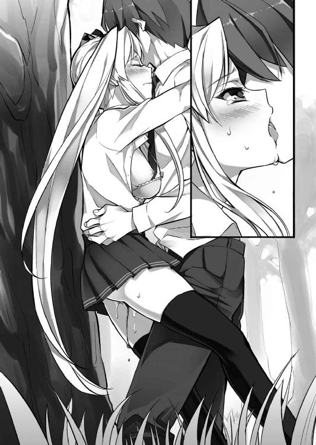

| 俺のフラグはよりどりみデレ 俺のフラグはよりどりみデレシリーズ (あとみっく文庫) | |
| 栗栖ティナ | |
| (2013) | |
俺のフラグは
よりどりみデレ
小説：栗栖ティナ
挿絵：火曜
あとみっく文庫
※本作品の全部あるいは一部を無断で複製・転載・配信・送信したり、ホームページ上に転載することを禁止します。本作品の内容を無断で改変、改ざん等行うことも禁止します。また、有償・無償にかかわらず本作品を第三者に譲渡することはできません。
「きゃうっ！」
朝食のパンを咥えたまま走る、転校初日の不慣れな通学路。
近道をしようと、見当をつけて飛び込んだ裏道。
角を曲がった直後、ドスンと正面衝突で押し倒してしまう。
十年──いや、二十年、三十年前の少女漫画にありがちな、出会いの一場面。
しかもぶつかった相手は、目を見張るような美少女だ。
鴉の濡れ羽のような美しい黒髪は腰まで伸び、その頂点を飾るのは親しみやすさを感じさせる、可愛らしいデザインのヘアバンド。
こちらを見つめるつぶらな瞳。少し長めの睫毛や、パンを齧るのも苦労しそうな小さな唇。髪と同じ黒のブレザーと、白いシャツに包まれた細い肢体。
全体的に上品な雰囲気の中、首筋のネクタイを弾き飛ばしそうなくらい隆起している胸元だけが、強烈な艶かしさを醸し出す。
（うぁっ、ま、またやっちまったよ!!）
そんな胸元に見とれてしまった少年──涼邑遼人は、口から落としてしまったパンを拾うのも忘れ、心の中で悲鳴を上げた。
物語の中ならば、これから二言、三言の言い合いがあり、その後、転校先の学園の教室で偶然の再会。紆余曲折を経て恋を育んでいく──そんな甘い展開に繋がるだろう。
──だが。
（現実じゃ、そううまくいくわけないからなあ）
道を歩けば、棒ならぬ美少女にぶつかる。
うっかり転ぶと必ず傍の子を巻き込み、触れてはいけない場所に触れてしまう。
気まぐれでフラリと裏道を歩くと、不良に絡まれる後輩と出くわす始末。
めぐり合わせか、それとも生来のどこか抜けたドジ気質のせいか。
トラブル続きの姿に『フラグメイカー』などというあだ名をつけられ、早五年。
だからこそ。『現実』と『物語』の違いを誰よりも思い知っている少年は、一瞬脳裏に浮かんだ妄想をかき消すように、すっかり口癖となってしまった台詞を心の中で呟く。
都合のいい展開が許されるのは、空想の中の素敵な主人公だけなのだから。
（だけど、本当に可愛いよなあ、この子）
散々痛い思いをしてきたけれど、それでもこのフラグを見過ごすのが惜しいくらい、目前の美少女は魅力的だ。
「あ、あのさ。ごめん！ 遅刻しそうで、急いでたんだ」
謝罪の言葉を投げかけるが、少女は深い色の瞳を見開いたまま反応してくれない。
黄色い悲鳴を上げる、嵐の前の静けさなのか。どうも、嫌な予感がする。
心機一転。遠縁のコネを頼り、電車で二時間弱の遠方の学園に転入してきたばかり。
その初日からトラブルに巻き込まれるのは、絶対に避けたいところだ。
（さっさと逃げた方がいいかな。でも、せっかくこんな可愛い子と会えたんだし......）
男の子の本能に従うべきか。それともトラブルの匂いから早急に離れるべきか。
悩むこと、わずか数秒。
結果的に──その数秒が、彼の人生を左右する、最大の分岐点になった。
「見つけたぜぇ、桜小路ぃぃぃっ!!」
不意に背後から聞こえてきた、尻上がりのヒステリックな声。
ハッと振り返った瞬間。
──ドガァァッ！
黒髪の少女の目前に何かが叩きつけられ、盛大な破壊音と粉塵が上がる。
「ひっ!!」
一体、何が起こったのか。
悲鳴と共に飛び上がった遼人の目に、新たな人影が飛び込んできた。
「まさか、びびったのか？ いや、てめぇはそんなタマじゃねぇよな!?」
厳しい声で叫ぶのは、黒髪の少女のものと色だけが違う、クリーム色のブレザーを身に纏った茶髪の少女。
髪の長さは肩くらい。頭頂部でアンテナのようにピンと立っている癖毛が愛らしい。
スポーツでもやっているのか、全体的に引き締まってスラリとしたスタイル。
スカートの裾からわずかに覗く黒スパッツが、快活な印象を感じさせる。
「逃げてばかりじゃ、つまらねえ！ 学園一ヤバイ、てめぇの本性見せてみろよ!!」
ネコ科の獣を思わせる縦長の瞳に愉快そうな光を浮かべ、正面に立つ黒髪の美少女目掛けて突き出しているのは、不気味に輝く金属バット。
先ほどの破壊音は、これがアスファルトの地面に打ちつけられたものだと気づく。
慌てて足元を見てみると、その部分が少し砕けて窪みができあがっていた。
（な、何だよ、これ！）
いくら金属バットとはいえ、少女の細い腕でここまでの破壊力が出せるのか。
現実離れした光景に、遼人は思わず言葉を失ってしまう。
「......本性？ 何のことか、わかりません」
そんな少年とは対照的に、桜小路と呼ばれた黒髪の少女は、眉一つ動かさずに淡々とした落ち着いた声で、突きつけられたバットの先を見つめていた。
「この樹里様相手に、そこまで白を切るたぁ──いい度胸だな、桜小路ぃっ！」
その反応に苛立ちを刺激されたように、ヒステリックな怒声と共に前へ飛び出した樹里と名乗る少女が、手にしたバットを力任せに振り回し始めた。
「あ、危ない！」
呆然と眺めていた遼人も、ブンッと空気を切り裂く音に反応し、咄嗟に悲鳴を上げる。
アスファルトの地面を砕く一撃だ。まともに食らえば、怪我では済まない。
（ダメだ、もう間に合わないっ！）
凄惨な光景を想像し、遼人が思わず目を背けてしまった直後。
キンッ！
「うおっ!?」
甲高い金属音と、樹里が驚く声。
何が起こったのか、一瞬の間を置いて前に向き直った遼人は──。
「か、刀......？」
黒髪の少女の手に握られたものを見て、呆然と呟いた。
少女の身長の半分ほどの長さがあるそれは、本来、時代劇の中でしか見ることができない、日本古来より伝わる武器。これでバットを受け流したのだろう。
一体、どこにあんなものを隠していたのか。ぶつかった時には、足元に手提げ鞄が一つ転がっていただけだったのだが。
「へへっ、得物を出したってことは、やる気が出たってことだよなぁ！」
ニヤリとサディスティックな笑みを浮かべた癖毛の少女が、再びバットを振り上げる。
「......別に」
淡々と答えた黒髪の少女も刀を正眼に構え──そして、激しい打ち合いが始まった。
キンッ！ キンッ!! グシャッ！
立て続けに鳴り響く、金属同士がぶつかる音。
弾き飛ばされたバットが地面や塀にぶつかり、そこが粉微塵に砕けていく。
怒りをあらわに暴れる癖毛の女も、それを平然と受ける黒髪の美少女も、互いに息も切らさず手にした得物を振り続ける。
「何だよ、こ、これは」
足が接着剤で地面にくっつけられたように身動きできなくなった遼人は、突如始まった美少女同士の激しいバトルに、ただ目を丸くするだけ。
美少女と出会いがしらに正面衝突。そんな少女漫画な展開が、一瞬の内に不良漫画か時代劇にすり替えられてしまった気分だ。
「......寝ぼけてるのか、俺は」
目を擦り、頬を軽く叩いてみても、鳴り響く争いの音と少女達の姿は消えない。
そうこうしている間に、バットを振り回す暴力娘に、刀で応戦する巨乳少女は少しずつ壁際の方へ追い詰められてきていた。
「ど、どうしよう!? 警察......そうだ、警察......って......携帯っ！」
慌ててポケットを漁るが、目当ての硬い感触は見つからない。毎朝、目覚まし代わりにしているそれを、ベッドの上に放り投げたままにしていたことに気づく。
「俺、どこまでドジなんだよ！ 洒落にならないって、ああ、もうっ！」
公衆電話を探したり、駅前の交番まで直接通報にいく猶予はない。
『物語』なら、格好つけた主人公が、颯爽と危機に陥った少女を助けに現れる頃合。
だが、現実がそんなにうまくできているはずがなかった。
「やらないって言うなら......潰すぜ、このままぁっ！」
──ガキンッ！
力強い叫びと共にフルスイングされた樹里のバットが、遂に黒髪の美少女が握る刀を弾き飛ばしてしまった。
癖毛の跳ねた頭上へ更に大きく振りかぶり、最後の一撃を放とうとしている。
「ま、待った......ダメだ、ダメだって！ ああ、もうっ!!」
思考が展開についていけないが、もう悩んでいる場合ではない。
やけっぱち気味に叫んだ遼人は──次の瞬間、対峙する少女達の間に駆け込んだ。
「なっ!? て、てめぇ、何者......」
「こっちだ！ ほら、早く!!」
茶髪の少女の怒声を聞きながら、遼人はこの期に及んでも無表情のままだった、桜小路と呼ばれる少女の手を掴んだ。
「えっ？ あなたは......」
黒髪の少女のか細い声に答える間も惜しみ、一目散に駆け出す。
「ま、待ちやがれ！ 邪魔するな......こらっ！ 待て、待てってば！」
「待って欲しかったら、その物騒なの捨ててくれ！」
背中に投げつけられたヒステリックな声にそう答え、ドタドタと大きな足音を響かせながら薄暗い道を適当に突き進んでいく。
「大通り......と、とにかく人がたくさんいる場所へ！」
ドガンドガン！
追いかけてくるのは、恐らく樹里が振り下ろすバットがアスファルトを打つ音。
飛び散る小石が時折後頭部や足にも当たり、追われる者の恐怖を強く煽る。
冷徹な殺人アンドロイドに追われる女優は、きっとこんな気持ちだったのだろう。
昔、ＴＶで見た映画と今の自分を重ねながら、ただひたすら足を動かす。
「......あの......」
「とにかく逃げよう、今は、とにかく！」
再び横から投げかけられた呟きに、一瞬視線だけを向けて答える。
チラリと覗き見た彼女は深い色の瞳を少し見開き、驚きを隠せない様子。
無表情だった時以上に愛らしく、こんな状況でなければしばらく見とれたいほどだ。
（それにしても......ありえないって、これ！）
バットを振り回す怪力女に、刀を持った美少女が襲われていたから助けた。
警察に証言したら、すぐ精神鑑定に回されそうだと自分でも思う。
「待て！ てめぇ、あたいとの喧嘩を無視して、男とイチャついてんじゃねぇよ!!」
だが、背中に投げつけられる怒声は、間違いなく現実のもの。
とにかく、今は逃げるのみ。
賑やかで人目のある場所まで出れば、この非常識な現実から解放されるはず。
その一心で、すぐ先の角を曲がった──直後。
「えっ......？」
目の前に立ちはだかる、灰色の高いビルの壁。
完全に逃げ場のない袋小路を呆然と見渡し、遼人は足を止めてしまう。
「大通りに出る道は、反対......ですけど」
「さ、先に言って欲しかった......いや、ごめん、俺が言わせなかったんだよな」
特に責める様子もなく淡々と教えてくれた傍らの少女に、遼人は何とも言えない情けない気持ちで呟き返す。
（さ、最悪......こんなお約束、いらないって......）
助けたつもりが、見事このざま。やっぱり現実は甘くない。
今までの人生で、うんざりするほど味わってきた事実を噛み締める間もなく──。
「鬼ごっこは終わりだぜ、桜小路......それと、てめぇもな」
厳しい現実の中、非現実的な恐怖を漂わせる茶髪の少女が、袋小路の出口を塞ぐように悠然と立ちはだかった。
「それにしても......桜小路、朝っぱらから男を引っかけてたとは、いい身分だな？」
「いや、別に俺は引っかけられたわけじゃ......ヒッ！」
カンカンとバットで地面を叩きながら、獲物を狙う肉食獣の目で睨みつけてくる樹里。
女の子相手にだらしないと思いつつも、遼人は乾いた悲鳴を上げてしまう。
「あたいが、軟派なことが大嫌いだって知っていてやったのか？ 別にそこまで挑発してくれなくても、やる気満々だったんだけどよ！」
一歩、二歩。恐怖を煽るように、わざとゆったりとした足取りで近づいてくる、バットを持った少女。漂う殺気は、先ほどまでの比ではない。
（くそっ......調子に乗って、いい格好しようとすると、これだよ！）
格好つけていいのは、その責任が取れる力がある者だけ。自分のようなドジなだけの一般人は、大人しく引っ込んでいなければいけない。
今までの人生で何度も思い知らされた現実を、まだ理解できていなかった。そのせいでこうして転校まで強いられたというのに。
後悔は尽きないが、今更時計の針は戻せない。
「お、落ち着こうぜ！ 喧嘩はよくない！ とりあえず......話！ 話をしよう!!」
睨みつけてくる樹里を宥めながら、背に黒髪の少女を庇って二人の間へ割り入る。
「喧嘩ぁ？ ふん......何も知らないなら引っ込んでなよ。これは女同士の戦い......お前みたいな無関係の男が出る幕じゃねぇよ！」
「えっ、あ、そ、そうなの......いや、でも......」
膝が震え、背筋に冷たい汗が流れる威圧感。思わず後ずさりしてしまうが──。
──ギュッ。
「っ！ あ......」
振り返ると、立ち尽くす黒髪の少女が、自分の制服の裾を軽く掴んできていた。
うつむく顔がほのかに火照っているのは、ここまで走ってきたせいか。
その弱々しい姿を見ていると、鼓動が自然と高鳴ってしまう。
（やっぱり......可愛いな）
この状況でも見とれてしまう、お淑やかで愛らしい雰囲気。
この子の前で、ビシッと格好つけたい。そんな男の子心をくすぐられる姿に、遼人は改めて迫る樹里の方に向き直った。
「確かに俺は無関係だよ！ でも、この子は嫌がってるじゃないか！ 何があったか知らないけど、暴力はよくないって!! とりあえず、その物騒なのを置いて、話しあおうぜ」
遼人は害意がないことを示すように両手を上げ、迫る樹里を必死に説得する。
「ちっ、黙れって言ってるだろうがっ！ しつこいぞ、てめぇ！」
「落ち着けよ！ 女の子がバットを振り回したり、そんな乱暴な喋り方、おかしいって！」
両手を前に出し、必死に宥めようと叫んだ直後。
「......それ以上、いけません。彼女にその言葉は、禁句です」
「......えっ？」
強く服の裾を引っ張られ、一瞬、振り返った。
そのわずかな間に──現実が、更にありえない方向へ流れ出す。
「何だよ、それ！ ......あっ？ 女が、男みたいに元気じゃいけねぇのかよ？ 気持ち悪い猫なで声出さなきゃ、女じゃないっていうのか......？ なぁ......なあっ！」
──ガンッ！ ガンッ！
低く腹の底に響くような呟きと共に、強く振り下ろされる金属バット。
打ちつけられたアスファルトの地面には、小石が飛び散る程度ではなく、爆弾でも落とされたが如く大穴が次々にできあがっていく。
「ひっ!? な、な......これ......」
彼女が女の子離れした怪力なのは、先ほどから散々見せつけられた。
だが、さすがにこれは異常。筋骨隆々に鍛えた男でも、こんな芸当はできないだろう。
（リ、現実じゃない！）
心の中で口癖を叫び、目前の非現実的な光景を呆然と見つめる。
「女らしいって何だよ。女らしいって......何だ......あたいは女じゃないって......女に見えないって？ 何で......何でだ......なぁ、何でだよ!? 言ってみろ！」
熱に冒されたようにブツブツと呟く、茶髪の少女。彼女の胸の辺りにどす黒い靄がモクモクと浮かび、それが次第に巨大な形を作っていく。
ズンッ！ ズンッ！
人に近い形になった靄が、その両足で砕けた地面を踏みしめると、まるで巨象が歩くような振動が響いてきた。
「うわっ、なっ、なっ、何......」
完全に腰が抜けて尻餅をつき、遼人が危うく舌を噛みそうになった瞬間。
「ざけんな！ 消えろ、消えちまえ......全部......消えろぉぉぉっ！」
ベキッ！
咽喉が張り裂けそうな叫び声と共に、樹里が両手でバットのグリップと先端を掴み、それをくの字にへし折って投げ捨てた。
それが直撃したブロック塀が大きく崩れるのと同時に、少女の身体も後ろへ倒れ──集まっていた霞が、ボンッという爆発音と共に弾ける。
「ちょっ、ゲホゲホッ！ な、な、何が......っ!?」
──飛び散る粉塵。その中から姿を現した、巨躯の影。
「グギャァァァァッ、ウォォォォォォォォォンッ！」
丸太のような腕で胸を叩いて威嚇する、浅黒い体毛に覆われた、ゴリラのような生物。
頭には水牛のような二本の角が生え、バチバチと静電気の火花が全身を包む。
見るからに力自慢の怪物。ファンタジー小説やゲームに、物語の中盤、勇者パーティに襲いかかる中ボスとして現れそうな、ごくありふれたデザイン。
そう......あくまで、『ゲーム』や『小説』の中でなら。
「なっ、何だよ、これ！ ＣＧ？ 着ぐるみ？ ゆ、夢？」
「グォォォォォォウッ！」
何度も目を擦る少年の目前で、怪物がその巨躯を誇るように四股を踏む。
ヒビ割れ、舞い上がる拳ほどの大きさの破片。
それを肩口に食らった激痛と衝撃で、否応なく現実に引き戻されてしまう。
「いつっ!? って、う、嘘だ！ こんな現実......ありえない！」
口癖を叫びながらへたり込み、赤ん坊のように四つんばいで後ずさりする。
何がどうなっているのか、わからないことだらけの中──一つ、確実な現実。
それはあの腕で殴られ、あの足で蹴られ、角で突かれた場合......自分など、たった一撃で命を失ってしまう。突然降りかかった、死の恐怖。
（どうして、こんなことに！）
自分を巻き込んだ得体の知れない何かへの罵言を心で叫び、震える足を何度も叩いて立ち上がろうとした時。
「オオオオオオオオオオオオッ！」
鼓膜をつんざくような雄叫びと同時に、巨躯の怪物が大きく砕けたアスファルトの破片を持ち上げ、それをこちらに向かって投げつけてきた。
身体が潰されてしまいそうなそれが、立ち尽くす黒髪の少女の頭上へ落ちてくる。
「あ、危な～い！ うわぁぁぁぁ」
甲高い叫び声と共に、反射的に飛び出す。
美少女を助ける英雄にしては情けない、間の抜けた悲鳴を上げながら、その身体を抱きかかえて、大きく横に飛びのく。
ズシーンッ！
「......あっ......」
「大丈夫？ ああ、もう、何でこんな現実じゃないことばっかり起きるんだ！」
倒れ込んだ遼人は、少女を庇うように組み伏せながら、悲鳴のような叫びを上げる。
唯一の逃げ道は巨躯の怪物に塞がれ、文字どおり絶体絶命の状態。
「早く警察きてくれよ！ これだけありえないことばっかりなんだから、こっちに都合がいいことも、少しは起きてくれ!!」
「都合が......いい？」
「そうっ！ ほら、例えば......ピンチに追い込まれた主人公が力に目覚めるとか！ 今って、まさにそういうシチュエーションじゃん」
首を傾げる黒髪の少女へ半ばやけくそ気味に叫び返し、自分自身で失笑してしまう。
「まあ、ありえないけどさ。現実は、そんなに甘くない......って！」
「ウゴォォォォォォッ！」
一際大きな怒号と共に、怪物の角から太い雷が放たれる。
すぐ傍らの地面を大きく抉り、破壊音と共に飛び散る無数の破片。
「やばっ！ くぅっ!!」
それから少女を守るため、改めて覆いかぶさった──その刹那。
むにゅり。
そんな擬音が聞こえてきそうな柔らかくふにふにとした感触が、右手に伝わってきた。
「......あっ」
桜の花びらのような少女の小さな唇から漏れる、甘い呻き。
舞い上がる砂埃に何度も瞬きをしながら見下ろす視界に映ったのは......胸元の深い谷間へものの見事に挟まった、自分の右手。
「なっ、うっ、あっ、こ、こ、これは！ これは、その!?」
飛びのき倒れた衝撃で起こってしまった、不幸──いや、ある意味幸運な事故。
ブラウス越しでもわかる、出来立てのマシュマロのような柔らかさと温かさ。
夏真っ盛りの熟れた西瓜を二つに割って並べたような巨大なふくらみは、今まで想像もできなかった、夢そのものという感触だった。
（女の子の胸って、こんなに柔らかいんだ......このサイズ、ＤやＥってレベルじゃないよな。Ｆとか......Ｇ？ いや、もっと？）
思考回路がショートし、お前は何を考えているのだと自分自身で突っ込みを入れたくなるくらい、感慨に耽ってしまう。
（って、これ完全にセクハラだろ！ 謝らないと......いや、そんな場合じゃない!!）
怪物はズンズンと重々しい足音と共に、確実に距離を詰めてきている。
角の間にバチバチと激しい火花が散り、再び恐ろしい雷光が放たれそうだ。
今にも意識が遠のきそうな、底知れぬ恐怖。
だが、未だ右手に感じるふくらみと、トクトクと少し速く鳴り響く鼓動の音が、少年の意識を辛うじて繋ぎとめていた。
「くそっ!! 何とかならないのかよ、何とか！」
せめて、この子だけでも助けたい。悲痛な思いで叫んだ直後。
──光。
視界を遮る眩い輝きが、突如、自分の下から放たれる。
驚き、その黒真珠色の瞳を見開いた少女の胸元。丁度、遼人の手が挟み込まれた巨乳の谷間が、その光の発生源だった。
「な......何だよ、これ。一体、何が......」
「......力。私が......あなたに授けます。私だけの王子様に......」
少女が、そんな御伽噺じみた呼びかけをしてきたのと同時に、柔らかい隆起に触れていた手の平へ、急に硬いものが当たった。
「うわっ!? これ、なっ、なっ......えぇっ？」
驚き離したその手に合わせ──光を放つ胸の谷間から現れたのは、白銀の剣。
赤や緑。見るからに高そうな大粒の宝石で飾られた、黄金の柄。
先ほど少女が握っていた刀よりも更に長い、両刃の刀身。
聖剣とか神剣。そんな仰々しい名前がつけられ、ラストダンジョンの隠しボスが守っていそうなきらびやかな剣が、少年の手にしっかりと握られていた。
人の身体から、どうして光が？ どうしてこんなものが？
何が何だかわからないが、怪物は既に間近に迫っている。
「くっ、や、やるしかないよな！」
躊躇する暇はない。両手で剣の柄を握り、伝わってくる不思議な熱に身体を凍りつかせる恐怖が溶け消えていくような感覚を味わいながら、立ち上がった瞬間。
「ここから、いなくなれぇぇぇっ！」
腹の底から絞り出した気合と共に、白銀の剣を真横へなぎ払う。
剣道など習ったこともないし、身体を特別鍛えているわけでもない。
──だが。
ズシャアアアアアアアアアアッ！
自分では飛ぶ蝿を払うような情けないものだと思っていたその一撃が、大気を切り裂く力強い音と共に──巨躯の怪物の胴を、真っ二つにしていた。
「ガァッ......オォォォォッ！」
断末魔の悲鳴と共に、切れ目から血の代わりにどす黒い煙を吹きながら、怪物が少しずつ元の靄へと姿を戻していく。
ビュゥと強く一陣の風が吹き、その姿が跡形もなく消えるまで、わずか数秒。寿命が縮む思いをさせてくれた怪物にしては、あまりにも呆気ない最期だった。
「......終わった？ えっ、あっ、マ、マジで？」
今までの騒ぎが嘘のような静けさの中、遼人はキョロキョロと辺りを見渡し、上擦って甲高くなった声を漏らす。
怪物も、ついでに自分が手にしていたあの光り輝く剣も消え......残っていたのは、打ち壊された壁やアスファルトの残骸と、倒れたままの茶髪の少女。
そして──。
「これ......何だ？ 宝石......？」
腰が抜けて立ち上がることができず、這いずりながら転がっていたものの傍へ近づく。
怪物の足跡の上に落ちていたそれは、親指の先ほどの大きさの輝く粒。
「さっきの剣から外れたのかな......？」
とりあえずそれをポケットへしまい、未だ動かない樹里の傍らに立って様子をうかがう。
気を失っているのか、それとも眠っているのか。だが、その表情は先ほどまでと打って変わって穏やかになり、大き目の胸元が吐息に合わせて規則正しく上下している。
（......とりあえず、このまま寝かせておくか）
下手に起こし、また暴れられたり怪物を呼ばれたりしたら洒落にならない。
そう思い、どっと疲れを感じた身体に鞭打って距離を取ろうとした、刹那。
「......王子様！」
「へっ......わっ！」
いきなりドンッと胸元に飛び込んできた、黒髪の少女。遼人は仰向けに倒れそうになるのを辛うじて踏みとどまり、その身体を受け止める。
「やっと......やっと見つけた......私だけの王子様」
少年の胸板に、ほのかに色づいた頬をすりつけて甘える。
今までの無表情で物静かな雰囲気からはかけ離れた、無邪気で可愛らしい仕草。
（ど、どうなってるんだよ？）
その豹変振りに驚き、遼人はただポカンと胸の中の美少女を見つめる。
「あの......王子様、よろしければ、お名前を教えていただけますか？」
「お、王子様って......俺は涼邑......涼邑遼人だけど」
聞きたいことは山ほどあるが、胸にしがみつく美少女の迫力に押されて口に出すことができず、ただ尋ねられるまま質問に答える。
「じゃあ......遼くん！ 王子様にピッタリの、素敵なお名前ですね♪」
「そ、そうかな？ じゃなくて、えっと......君は桜小路......」
「苗字じゃなくて、名前で......詩音と呼んでくれると、嬉しいです」
「いや、そんな!! いきなり呼び捨てとか......」
「駄目ですか？ 他人行儀な呼び方は......寂しいです」
胸の中から捨てられた子犬のように悲しげな目で見上げてきた少女の言葉に、それ以上言い返せなくなってしまう。
「ありがとうございます、遼くん♪ 私の......運命の、王子様」
樹里に対峙していた時とは比べ物にならない可愛らしい声で、ギュッとしがみついて離れようとしない詩音。
（まさか、ほ、惚れられた？）
結果的に、彼女の窮地を命がけで救った形。そう思われても不思議ではない。
恐ろしい魔物を倒し、救い出したお姫様と結ばれる勇者。
そんなファンタジーにありがちなエンディングと、今の自分の状況が重なる。
（いや、ないない！ そんな都合よく......現実じゃないって！）
女性に対する免疫ゼロ。まともに手を繋いだことも記憶にない、生粋の非モテ少年は、突然立った甘い恋のフラグを素直に信じられなかった。
だが、揺れる黒髪から漂ってくる、苺のように甘酸っぱい香り。
そして腹の辺りへグイグイと押しつけられる、ビッグサイズのマシュマロ二つ。
自分と少女が恋人同士にしか許されない、熱い抱擁をしていることをはっきりと実感させてくれる心地よい温もりは、確かに現実のものだ。
「えっと、そ、その......とりあえず、ここから離れないか？」
鼓動が尋常ではないくらい高鳴るのを感じつつ、遼人は胸の中の少女へ呼びかける。
これだけの騒ぎを起こしたのだから、もうじき警察がやってくるだろう。
突如怪物が現れ、それを自分が少女の胸から引き抜いた剣で倒した。
今、自分が経験した非現実的なことの真相を説明しても、信じてもらえるはずがない。
少女の真意を問いただすにしても、とりあえず場所を変える必要がある。
「あの......聞こえてる？ 詩音？」
飼い主に甘える猫のように。胸にしがみついて離れない少女へ、再度呼びかけた時。
「遼くん......ンッ......」
少し恥ずかしげな囁きと共に顔を上げた詩音が、静かに瞼を閉じる。
「え、えっと......詩音？」
何事かと問いかける少年へ、答えの代わりと言わんばかりに、桜の花びらのような小さな唇がぐっと突き出された。
ほんの少し細く尖った、見るからに瑞々しく柔らかそうな部分。
女っ気の欠片もない日々を過ごしてきた遼人だが、それが何を求めての行為なのかわからないほど、鈍感ではない。
（キ、キ、キ、キス......しろってこと？）
激しい戦いの後、主人公とヒロインの熱烈なキスシーンで幕が下りる。ハリウッドのアクション映画では定番の光景。
この美しい少女へ顔を寄せ、自分の唇でここを塞ぐ。一体、どれだけ甘く、柔らかく、幸せな感触が伝わってくるだろう。想像するだけで眩暈すら覚える。
（いや、待て、早まるな！）
都合よく解釈して突っ走って、取り返しのつかないしっぺ返しを食らう。そんな思いはもう二度とごめんだ。
（目にゴミが入っただけ......とかじゃないよな？ 気が抜けて失神しちゃったとかでもないし......やっぱり......そういうことなのか？ でもなあ......）
踏ん切りがつかずにうろたえていると、不意に膝へ詩音の細い足が絡みつけられた。
「ちょ......うわっ、わわっ！」
普段ならともかく、ありえない危機を乗り越えた直後の安堵と疲労で踏ん張りが利かない状態だった遼人は、それだけで大きく姿勢を崩してしまう。
駄目押しとばかりにブレザーの襟も強く引かれ、なすすべもなく前のめりに倒れ込む。
「うっ......あの、だいじょ......んぐっ!?」
辛うじて両手を地面につき、押し倒す形になってしまった少女へ気づかいの声を投げかけようとした唇が、突き出された桜色の唇と触れあう。
甘い。たっぷりと練乳をかけた、苺のような味わい。
（甘い......柔らかくて、蕩ける......女の子の唇って、こんなに気持ちいいのかよ）
ショートする思考の中、そんなことを呆然と考えている間に、閉じた唇の隙間へ何か熱いものが伸びてきた。
「なっ......んっ、んぐっ、あぁ、ちゅっ......」
「ふぁっ、遼くん......あんっ、んっ、はふっ......」
零れる甘い吐息と共に、唇の間をなぞり、そのわずかな隙間へ滑り込んできた感触。
口内に入るなり、戸惑い固まっていた舌を解すように絡みついてきたそれが、この物静かな少女の舌だと、一瞬の間を置いて理解できた。
チロチロとくすぐるように、早くあなたも動いてとねだってくる熱い舌。
パニック状態の遼人は、促されるまま半ば無意識に舌を伸ばしていく。
「んぁっ、ちゅっ、はぁ......んっ、じゅる、ちゅぱっ、あぁ！」
絡みつく熱舌を伝い、いつの間にか少女の口内に吸い込まれてしまった先端。
あっという間に、じっとりと茹るような熱感と、水飴のようにトロリと甘い唾液に包み込まれてしまう。
（キスしてる......ディープキス！ しかも、こんなに可愛い子と......）
わずか三十分ほど前に道ばたでぶつかった少女と、唇を重ねている。
恋に縁遠い青春を送ってきた遼人にとって、先ほどの怪物以上にありえない現実。
「はんっ、はぁっ、遼......くんっ、あふっ......」
唇の隙間から漏れ出す熱く掠れた囁きが、場の雰囲気を一層盛り上げてくれる。
漂う苺のような爽やかな香りが、蜂蜜を溶かし込んだような濃厚なものへ変わってきていて、呼吸をする度、身体の内側からも尋常ではない興奮が込み上げてきた。
（やばい......熱くて、甘くて、気持ちよくて......お、おかしくなりそうだ）
改めてそう実感していた少年の耳に飛び込んできた、パサリという物音。
同時に押し当てられた、むにゅりと潰れる覚えのある感触。
倒れた拍子にボタンが外れてしまったのか。詩音のブレザーとブラウスの前がいつの間にかはだけ、その下に隠されていたものが零れ落ちてしまっていた。
薄桃色の上品なブラジャーに包み込まれたふくらみは、先ほど触れた時に想像したとおり、目を見張るサイズ。
少し下へずれたカップの端から飛び出す、色づいたばかりのチェリーにも似た乳首。
そこの辺りが覆いかぶさる胸板へ、軽く触れてしまっていた。
「えっ、あっ、ご、ごめん！ 俺、わ、わざとじゃないんだ!!」
さすがに流されたままではいられず、上体を大きく仰け反らせて謝る。
キスだけならともかく、これは詩音にとっても想定外のトラブルのはず。せっかくの雰囲気が一発で台なしだ。
（ああ、もう！ どうして俺は、大事なところでいつもいつも!!）
どうして一緒に倒れただけで、こんなことになってしまうのか。
どう考えても普通ではありえない。
「......どうぞ。私......大丈夫ですから」
頭を抱えたい気分になっていた少年へ、組み伏せる美少女が頬を赤らめ、想像の斜め上の言葉を囁きかけてきた。
「だ、大丈夫？ それ......え......」
「優しく......してくださいね」
その言葉と共に、首に回された二本の腕の力が強くなる。
踏ん張ることもできずに引き寄せられ、対の肉球が楕円に潰れてしまう。
服越しに伝わる弾力に生唾を飲む間もなく、今度は股間の辺りに何かモゾモゾと動く感触が伝わってきた。
うつむいて確かめようとした刹那、ヌチュリという音と共に熱く濡れたものが、身体で一番敏感な場所に触れる。
「......あんっ！ ふぁっ、くぅ......んぁ」
「うっ、えっ、これ......っ!?」
弛む乳房越しに、どうにか下腹部を覗き見た瞬間、少女の口からうっとりとした甘いため息が漏れる。
引き下ろされたズボンのファスナーから、ポロリと飛び出した屹立。
それが、倒れた時に軽く捲れたのであろう少女のスカートの中──ブラジャーと同じ桃色ショーツの脇へ密着してしまっていたのだ。
蕩ける甘いキスに酔い、自分でも驚くほど硬くそそり立った陰茎。その先端の赤黒い亀頭が突いているのは......色素の薄い、肉唇の端。
「なっ、うっ、嘘!? これ、いや、違う違う！ ない、こんなの！」
うろたえ、自分でもよくわからないまま支離滅裂な悲鳴を上げる。
どうしてこうなったのか理解不能な体勢と、乱された服装。
必死に身体を離そうとするが、絡みつく詩音の手足の力は想像以上で、なかなか振りほどくことはできない。
「ごめん、わざとじゃない！ だから、その、えっと、えっと......」
「......ふぁぅ......もう、大丈夫です、このまま......きてください」
泣き顔で言い訳を並べた少年を見上げ、ボッと火がついたように頬を赤らめた黒髪の美少女が呟く。
「このままって、え、えっと......」
意味を理解できずに凍りついた遼人へ、更に具体的な言葉が続けて投げかけられた。
「遼くんの......王子様のためのものですから。私の全部......もらってください」
エッチして欲しい。
極めて単純な言葉に脳内で変換し、改めて事の重大さに目を丸くする。
「で、でも、その！ いや、そんなっ！ 無理無理！ 絶対、無理！」
一目で心奪われる美少女からの、魅力的な誘い。
だが、それを二つ返事で受け入れられる豪胆さを、散々不運に見舞われてきた遼人は持ち合わせていなかった。
「だってさ、ここ外だよ!? それに詩音とはさっき会ったばかりじゃん!! ......そういうことは、もっと時間をかけて......それに、そこに倒れてる子も、病院へ運ばないと！」
「ふふっ、大丈夫ですよ、遼くん。何も......問題ありませんから」
少年が並べた説得の言葉を、詩音は一片の曇りもない微笑みで軽く流してしまった。
「私の気持ちは固まっています。それに......邪魔者が近づいてくることはありません。そういうことに、なっていますから」
そこで言葉を止めた詩音は、不意に先ほどまでの無表情へ戻り、未だに小さく寝息を立てて倒れている樹里を一瞥する。
「彼女......小林さんのことも、心配いりませんよ。あと半日はあのまま眠り続けているはずです。それに......遼くんと私が結ばれることが、彼女のためでもありますから」
「な......何で？」
「だって......こうして私と王子様が結ばれる、橋渡し役を買って出てくれたんです。その好意を無駄にしたら、申し訳ないと思いませんか？」
見つめているだけで何故か背筋が震えてしまう、無邪気な微笑と共に放たれた台詞。
この子は一体何を言っているのか。意味が何も理解できずに戸惑っていると......今まで少女の顔に浮かんでいた恍惚の微笑みが、不意に消えてしまった。
「それとも......ダメですか？ まさか......私の心を弄んで、からかう......そういうつもりで助けてくれたわけでは、ありませんよね？」
真っ直ぐに見つめてくる深い色の瞳から光が消え、凍るような冷たさを漂わせる。
先ほどの怪物から感じた以上の、底知れぬ恐怖。
遼人はガクガクと背筋を震わせながら、必死になって首を横に振って答えた。
「ち、違う！ そんなつもりじゃないって！」
「......そうですよね、私の王子様が......そんな酷い方なはず、ありませんから」
そんな呟きに合わせ、瞳に再び優しげな光が戻る。
強張っていた頬も緩み、まるで薔薇の花のような美しい微笑みが浮かぶ。
今、感じていた威圧感は、何かの勘違いだったのか。そう思ってしまうほどの美しい笑顔に見とれつつ、遼人は更に言葉を続ける。
「むしろ、大事に思っているから......ほら、勢いでしていいことじゃないし......」
「......その気持ち、とっても嬉しいです。でも......大丈夫ですよ」
「で、でも......んぁっ、くぅっ！」
詩音の呟きに合わせ、組み伏せる身体が悩ましく左右に揺れる。
張り詰めた亀頭がぷっくりとした大陰唇に擦れ、その甘い刺激で腰が痺れてきた。
（ほ、本当にいいのか？ こんなチャンスでもなかったら、一生童貞卒業できないかもしれないし。でも、さすがに......）
初体験は、夜景の綺麗なホテルの部屋で恋人と。そんな乙女じみた理想は持っていないが、それでも初めてというものにはそれなりに憧れがある。
「......これは、今、すぐにしなければいけないことです。苦難を乗り越えた王子様とお姫様は、必ず結ばれる......それが物語の定めなのですから」
──それを破れば、先にあるのは悲劇だけ。
いつまでも決断できないでいる少年へ、詩音がそう消え入りそうな声で呟いた直後。
その意味を問いただす間もなく、首に回された手の力が一気に強まった。
──ニチュリ。
少年の身体が大きく前へ倒れ、自然と腰が突き出される形になる。
硬く勃起した屹立が、湿り気を帯びたショーツの股布を横へ押しのけ、先ほどから執拗に擦れていた肉唇の中央へ滑り込む。
じゅわりと熱いものが染み出てくる、粘膜の感触。
肉を押し分ける低い音と亀頭を包む圧迫感は......少女と一つになろうとしている証。
「うあっ！ ダメ......こ、これ以上は洒落に──」
「嬉しい......遼くん、そのまま......んっ、あぁんっ！」
──ズブブブッ、ミリィッ、ズップゥゥゥッ！
腰にまで響く、何かを押し裂く振動。一気に根元まで降りてきた、熱い締めつけ。
嬉しそうに声を上げた詩音が自ら腰を押しつけ、屹立を奥まで迎えたのだ。隅々までをねっとりと包み込む未知の感覚に身体を震わせながら、その事実を把握する。
「詩音......うぁっ、くぅっ！」
「んぐっ、はぁはぁ......いっ......ぁぁ......」
見下ろす少女の微笑む顔がぎこちなく歪み、少し色の濃くなった唇からは切羽詰まった荒い吐息が零れる。
うつむき結合部を確かめると、わずかに赤いものが滲んでいるのが見えた。恐らくそうだろうとは思っていたが、この美しい黒髪の少女もこれが初体験なのだろう。
それがどれだけの苦痛を伴うことなのか、男の遼人には理解できない。
だが、屹立が押し潰されそうな狭い肉穴を無理矢理押し広げられているのだ、尋常の痛みでないことだけは想像できた。
「嬉しい......です。遼くんに......王子様にあげられて、幸せ......はふっ......」
だが、戸惑う少年が大丈夫なのかと気づかうよりも早く、瞳に涙を浮かべて微笑む詩音が、歓喜に震える声を上げた。
腰をピクリとも動かしていないのに、竿の隅々がざらついた感触に擦られる。
少女の膣壁が、自分を歓迎するように波打っているのだろうか。
押しつけられた乳房を飾るニプルも胸板に食い込むほど硬く尖り、その巨大なふくらみの奥からはトクトクと昂りを訴えるような速い鼓動が伝わってきていた。
「はぁはぁっ、んっ、優しいですね、遼くん。私に遠慮して......動かずに、我慢してくれているのですか？」
「くっ、あぁっ、い、いや、そういうわけでも、その......」
「大丈夫です。遼くんが苦しい思いをする方が、私は悲しいですから......遠慮なく、私の中で気持ちよくなってください。ど、どうぞ......はんぅっ、あぁっ......」
グチュルッ......ヌチュッ......。
途切れ途切れの声と共に、意図的なのか震えのせいなのか、詩音の身体が小さく上下に揺れ始めた。
ブラジャーが乳肉の下までずれ、ほとんど零れたお碗型のふくらみが胸を擦る。
グニャリとパン生地のように柔軟に形を変え、触覚と視覚両方で興奮が高まっていく。
（おっぱいって、どうしてこんなに柔らかくて気持ちいいんだよ......やばい、もう俺、何が何だかわからなく......）
混乱する少年の心が、肉棒の先を断続的に走る刺激で更に翻弄される。
短い振り幅で狭い膣道を往復する動きに合わせ、張り出す肉傘が壁面の蠢く皺に弾かれているのだ。
「きて......きてください。遼くん。......どうぞ、感じて......」
駄目押しとばかりに、何度も繰り返し呟かれる甘い誘いの言葉。
そうでなくても目まぐるしい展開に麻痺していた理性が、いつまでも持つはずがない。
「うっ、ああっ、もうっ、俺、俺っ！」
ズップッ、ジュブッ、ズブブブブッ！
何かに許しを乞うように叫びながら、遼人の腰が貪るような熱心さで抽送運動を始める。
きつく収縮する肉道を広げながら、少しずつ大きくなっていくストローク。
滲み出る熱い滑りを掻き出すように、やがて入口から奥の行き止まりまで隙間なく擦る形になっていく。
「あんっ、あふぁああっ！ あぅ、りょ、遼くん......ひんんっ、あああっ！」
「あうっ、平気？ 詩音......くぅっ、ああっ！」
「はぁっ、はい。大丈夫です......本当に、う、嬉しい......んんんんっ！」
気づかう声に返ってきた歓喜の叫びと共に、首に回された手が後頭部へ滑り、再び顔が真っ赤に火照った詩音の顔の間近まで引き寄せられる。
触れあう鼻先。そしてしっかりと重なる唇。今度は求められる前に、自分の方から少女の苺色の舌を求めていく。
「むちゅぅ、はぁんっ、くんっ、ああんっ！ 遼くん、遼くんっ......はふっ、あぁっ、そうっ、いぃっ、くっ、はぁっ、あんんっ！」
「んぐっ、ちゅぱっ、はぁはぁっ、うぐぅ、んんっ......」
息苦しくなるほどの激しいキスに合わせ、少しずつ慣れてきた腰の動きも活発になる。
屹立の芯を走る激しい痺れと、むせ返るような甘い香り。そしてタプタプと音を立て、悩ましく擦りつけられる双乳。
先ほどの衝撃的な経験も軽く吹き飛ぶ、至福の感覚。ただ本能的に動き続けていた少年は──ドクンと込み上げてきた熱い迸りの予感で、わずかに意識を取り戻す。
（やばっ、で、出る！ 抜かないと──）
「あぅっ、あぁっ、んっ......遼くん、ふぁああっ！」
ハッと気づき、腰を引こうと考えた瞬間。まるでその考えを読まれたかの如きタイミングで、太股の辺りに絡みついてきていた少女の脚が硬直した。
疲労と快感に痺れた身体では振り払うこともできず、動きが完全に遮られる。
「うぅっ、し、詩音！ 待って、ちょ......待......んぐっ、ああ!!」
「ちゅっ、んぅ、はんんっ、んんっ！ 素敵です、遼くぅ......ひんっ、んんっ！」
出てしまう──そう叫びかけた言葉が貪るように押しつけられた唇に遮られ、同時に竿を包む膣壁が力強く波打つ。
ドクンッ！ ドブブッ、ビュブルッ、ビュルルルルンッ！
「ふぁあああんっ......んっ、あぁ!! 遼くん、きてくださぁ......ひぅっ♪ 熱いの......い、いっぱい、はひぃっ、んんーっ！」
「くぁっ、で、出て......おぅっ、あああっ！」
雪のように白い尻房が、腰に押しつけられるほど深々と繋がったまま、遼人の屹立が勢いよく何度も跳ねる。
ヒクヒクと震えている行き止まり。そこへ自分の迸りが力強く流れ込んでいく。自ら慰める時とはまるで別次元の、全身が吹き飛ぶような射精の快感。
「あふっ、い、いっぱい。感じます。ちゅ、はぁ、遼くん......王子様の熱いの。あぁ、身体の奥まで、遼くんのものにしてもらえて......嬉しいです。んふぅっ、夢みたいに......」
啄ばむようなキスの合間に、目を潤ませ、うっとりと頬を緩めて呟く黒髪の美少女。
（やばい、これ......気持ちよすぎ......）
こんな時でも上品な美しさを損なっていないその顔を見つめつつ、遼人はいつまでも引くことのない快感の波に浸り続けた──。
（洒落に......なってないよな、これ）
数分の後。身体を離して立ち上がった遼人は、改めて自分が勢いでしでかしてしまったことの重大さを噛み締めていた。
「お腹にたくさん......幸せ......んっ、ダメ、溢れて......もったいないです」
夢を見ているような恍惚の顔で、穴だらけになった地面に座る黒髪の美少女。
とりあえず乱れた服は整えられていたが、少し開いた脚の隙間からゴボリと断続的に溢れ出てくる白い液体が見えている。
（中に出すのは、さすがに......）
もし間違いで済まされないことになっていたら、どう責任を取ればいいのか。
こういう時、常に『まさか』という結果ばかりを引き当ててきた過去の経験上、楽観はできない。
「夢みたいです、私。......遼くんに優しく導いていただいて......まだ、身体がふわふわと浮いているみたい」
「あははっ......導いたというか、俺が導かれたというか......」
救いなのは、自分の迸りを受け止めた少女が、本当に幸せそうに微笑んでいること。
（いきなり王子様呼ばわりなんて......不思議な子だけど、可愛いよなあ、やっぱり）
こんなに美しい少女と、形はどうあれ結ばれた。
転校初日。初めて訪れたこの町で、まさかこんな幸運に出くわすとは──。
「転校......って、や、や、やばっ！ 時間っ!!」
自分が遅刻間際で急いでいたことを、今更になって思い出す。
駅を出た段階で、既にギリギリだったのだ。もう始業式はおろか、ホームルームの時間にも間に合わないかもしれない。
「ど、ど、どうしよう......えっと、えっと......」
「......どうぞ、お先にいってください、遼くん」
慌てふためく少年へ、未だ余韻を噛み締めるように座り込んだままの詩音が、ニッコリと微笑みかけてくる。
「先にって、で、でも......」
派手に壊れた戦いの跡、未だ眠ったままの樹里。そして結ばれた、この黒髪の美少女。
この状況を投げ出し、一人先に立ち去るのはどう考えてもためらわれる。
「後始末なんて地味なお仕事、王子様には似合いませんから。あとは、私が......」
「でも......あと、その王子様っていうのは恥ずかしいから、その......」
「心配なさらないでください。......またすぐ、お会いできます。だって、私達......運命に導かれて出会った、二人なのですから♪」
戸惑う遼人へ、一点の曇りもない微笑を投げかけてくる詩音。
互いに名前だけ、他に何も知らない者同士のはずなのに、どんな根拠があって自信たっぷりに言いきれるのか。
（思い込み......激しい子なのかな？）
「さあ、どうぞ。......また、後ほどお会いしましょう......遼くん」
「えっ......と......ああ、うん......それじゃあ！」
きっぱりとした物言いに背を押され、遼人は仕方なく駆け出す。
（また後ほど......本当に、会えるのかな）
そんな不安は、座ったまま見送ってくれる少女の姿を少し注意深く観察すれば拭えたことを、この時の彼は気づいていなかった。
彼女が身に纏うブレザー。その胸に縫いつけられた校章のワッペンが──自分のブレザーのものと同じだということに──。
（しっかし......今日はとことん現実離れした日だな）
窓際に置かれた、アンティークな雰囲気漂う机と椅子。
壁の額縁に書かれた、『清く気高く真っ直ぐに』という生真面目な訓示。
それらが作り上げる身が引き締まる凛とした空気に、今、自分が啜っている味噌汁は、絶望的に不似合いだ。
目の前の重厚な一枚板の机には、更に炊き立てのご飯に白菜の漬物、目玉焼きと野菜の煮付けという和食のフルコースが並んでいるのだから、その気持ちは更に強くなる。
（そもそも、どうして学長室にキッチンがあるんだよ......謎すぎるぞ）
隅に設置された、大きなコンロや冷蔵庫が並ぶ、カウンターつきの厨房。
そこだけ見ると学食に紛れ込んでしまったのかと思うほど、本格的な作りだ。
「お味はどうですか、遼人くん」
そんな立派なキッチンから、お盆を手に出てきたのは──この料理を作ってくれた、エプロン姿の女性。
見ているだけで心が解れるような、少し垂れ気味の穏やかな瞳。左の目元にある泣き黒子が、大人っぽい色気を感じさせる。
少しウェーブのかかった前髪は眉毛が隠れるくらい伸び、花の髪留めでまとめられている後ろ髪が歩みに合わせて揺れ、それが撫でるヒップは、淡い桃色のスーツスカートの上からでもはっきりわかるくらい、むっちりと艶やか。
「そのお味噌汁は、特に自信作なんですよ。お出汁がよく効いているでしょう？」
「......そ、そうですね！ 俺、こんなに美味い味噌汁、初めてです！」
エプロンを外し、正面のソファーに腰掛けた女性へ答えつつ、少年の目線は自然と大胆に開いた胸元へ吸い寄せられてしまう。
（しかし、大きいよな......詩音と同じ......いや、こっちの方が大きいかも）
未だ手の平に感触が残る、自分の初めての女性となった黒髪の少女の豊乳。目の前の巨乳は、それと互角以上に渡りあえるサイズ。
少年が今まで目にしてきた乳房の中、一位と二位が今日一日で同時に更新されたのは、間違いない事実だ。
「鰹節の血合いの部分を丁寧にとって、下ごしらえをしておくのがポイントなのよ。市販の削られているものではなくて、塊を買ってきてね」
「へぇ......随分、手間がかかるんですね」
手にしたお碗の中の味噌汁を啜り、しみじみと呟く。
「そうよ、お料理は手間を惜しんではダメ。基礎となる部分を大事にしないと、美味しくならないの」
そこで言葉を止めたスーツ姿の女性は、頬に手を当て、困ったように首を傾げる。
「日々の生活も、同じこと。朝ご飯は一日の生活を支える基礎なのだから、毎日、ちゃんと食べないと身体に悪いですよ。ましてや、遼人くんは育ち盛りなんですし......ね？」
「す、すいません。今朝は遅刻しそうだったから、つい......一応、駅のコンビニでパンを買って齧ってたんですけど......途中で色々あって、食べ損ねちゃって」
何だか、母親と話しているようだ。......いや、うちの母さんは、こんなに美人でもないし、料理上手でもないけれど。
そう感じてしまうのは、いかにも家庭的な雰囲気のせいか。それとも母親の遠縁だけあり、どこか似ているところがあるせいなのか。
「本当にすいません、転校早々遅刻した上に、ご馳走にまでなっちゃって」
「ふふっ、気にしないで。こうしてお料理を食べてもらうのが、わたしの趣味なのよ。だから我侭を言って、専用のキッチンまで作ってもらったの♪」
いくら趣味でも、学長室にわざわざ作る必要があったのか疑問に思う。
だが、穏やかに微笑む目の前の女性に、それ以上厳しく突っ込むことはできない。
（前に家で話した時も思ったけど......本当に優しいよな。ほんわかとしてて、一緒に居るだけで落ち着くっていうか、少し、不思議な感じもするけど）
あれから途中で落としてしまっていた鞄を探し、慌てて学園へ向かったものの、到着したのは既に始業式が終わり、朝のホームルームも始まった時間。
すぐここに通された遼人は、さすがにあの現実離れした一部始終を説明することもできず、道に迷ってしまったと適当に遅刻の理由をでっち上げた。
幸い、深く追及されることもなく、『次からは気をつけなさい』の一言で許してもらえ、ホッとしたのも束の間。
お約束のようにぐぅとお腹の音を鳴らしてしまった少年を叱ることもなく、『次の時間から教室へいけばいいから』と、こうして食事を振る舞ってくれているのだ。
（お世話になりっぱなしだよな......翠さんには）
萩野翠。前の学園でちょっとした事件を起こし、居づらくなって困っていた自分をこの聖エスタド学園に誘ってくれた、ここの学園長。
三ヶ月前。久しぶりにあった親戚の集まりで彼女と出会っていなければ、村八分状態になっていた前の学園で、今も寂しい生活を送っていたに違いない。
貴重な青春をやり直すチャンスを与えてくれた、大恩人だ。
「ホームルームが終わる頃にお迎えがくるから、それまではゆっくりしていてちょうだいね。今の内に、挨拶を考えておくのもいいかしら」
「挨拶......ですか？」
そうか、転入生にはそういう面倒なイベントがあるのだった。
ドタバタ続きでそんなことを考える余裕がなかった遼人は、箸を休めて首をひねる。
「見た目がまずそうなお料理に、箸を伸ばそうという気にはならないでしょう？ 何事も初めにいい印象を持ってもらうことが大切ですよ。楽しい学園生活のためにも......ね？」
「そうですね。せっかく、やり直すチャンスをもらえたんだし......」
楽しさと程遠い、先日までの学園生活を思い出し、遼人は乾いた笑みを浮かべる。
生まれながらのドジ気質で、トラブルを起こすことには慣れていたが......その中でも、あれは特に酷かった。
たまたま忘れ物をして戻った、放課後遅くの教室。そこで出くわした、ひそかに憧れていたクラスの女の子が、嫌われ者の体育教師に襲われそうになっている場面。
ここで格好よく助けに入れば、彼女と恋のフラグを立てるチャンス。
甘い期待に胸をふくらませ、颯爽と飛び込んだまではよかったのだが──。
（まさか、お互いに合意の上で、両思いの仲だったとは思わなかったもんな......）
遼人の乱入がきっかけで騒ぎとなり、それを聞きつけた他の先生や生徒達も集まってきて──結局、すべてが露呈してしまった。
結果、当事者二人は不祥事の責任を取り、揃って学園を去ることに。
クラスの人気者だった女子生徒を追い詰めたということで、その原因となった遼人に対しても『空気の読めないやつ』と風当たりがきつくなり、周囲から総シカトの状態。
とても、楽しい青春を送れるような雰囲気ではなくなってしまったのだ。
（もう、甘い夢なんて見ないで慎ましく生きよう。......そう決めたはずなのになあ）
思い出すと今も足が震えそうな、先ほどの一件。
逃げ出すチャンスはあったのに、誓いを忘れて最後まで首を突っ込んでしまった。
（まあ、おかげで詩音と仲よくなれたというか......しちゃったんだよな、俺）
怪物を倒し、助けた女の子と結ばれる。英雄譚を絵に描いたような展開は、今、思い返してみても信じられない。
だが、肌を重ねたあの黒髪の美少女の温もりは、今もはっきりと残っている。
甘い髪の匂い。そしてふにふにと柔らかい乳房の弾力。
（大きかったなあ......息を吐く度に、こんな感じでプルプル震えるのが、エロかったし）
ふと顔を上げ、目の前にあったはち切れんばかりのふくらみと比べ、しみじみ思う。
って──待て。何で、目の前にこれが......？
「大丈夫、遼人くん？ ......お顔が真っ赤。熱でもあるのかしらね？」
「へっ、うわっ!?」
気づかう声に視線を上げると、額が触れあいそうな至近距離に、泣き黒子が艶やかな学園長の顔が迫ってきていた。
「じっとしていてくださいね。う～ん、少し熱いかしら......」
「い、いや、あの、別に風邪ってわけじゃ......本当に大丈夫ですから、学園長！」
額に重ねられた手の平から伝わってくる、その雰囲気に似合った優しい温もり。振り払うこともできずに硬直した少年は、声を詰まらせながら必死に説明する。
「......翠さん」
「へっ？」
「そんな堅苦しい呼び方じゃなくて、名前で呼んでくれた方が嬉しいわ♪ 学園の生徒さん達にも、できるだけそう呼んでもらうようにしているの」
「わ、わ......わかりました、翠さん。あの、本当、何ともないんで......」
気恥ずかしさに耐えきれずうつむくと、再び豊乳の谷間が視界に飛び込んできた。
おっとりとした雰囲気からかけ離れた、大胆にボディラインを強調するスーツ。
おまけに胸元の部分だけサイズが合っていないのだろう、無理矢理押し込まれているに近い状態で、少し動いただけで頂点を飾る突起まで見えてしまいそうだ。
肌の色はシャツよりも澄んだ白色。大理石のような滑らかさで、触れると手の平に吸いつきそうなくらい、しっとりとしていそうだ。
（乳輪、凄く綺麗なピンク色......って、見るな、見ちゃ駄目だって!!）
心の中で何度も叫ぶが、少年の好奇心は理性で抑えられるほど大人しいものではない。
まして、生まれて初めてそこの感触を実際に味わった直後。
嫌でもそれと目前の隆起を比べ、意識してしまう。
（詩音のよりも、もっちりして柔らかそう......って、駄目！ 妄想禁止!!）
「遼人くん」
「は、はいィ？ あっ......」
再度の呼びかけに上擦る声で答えた直後、頭に何か温かいものが乗せられた。
それが何かを確かめる間もなく、少し癖のある髪が優しく掻き撫でられる。
「ようこそ、ここ......聖エスタド学園へ。色々と大変かもしれませんが、新しい学園生活を、思い切り楽しんでくださいね」
「楽しむ......？」
「お勉強も部活も......お友達との付き合いや、恋も。今しかできないことを、この学園でいっぱい味わって欲しいと願っています。学園長としても......わたし個人としても」
そこで言葉を止めた学園長は、目尻を優しく下げ、戸惑う少年の顔を覗き込む。
「それに......あなたにはとても期待しているんですよ。この学園に、新しい風を呼び込んでくれる存在として♪」
「風？ いや、そんな！ 俺、そんなに期待されるほどの男じゃ......」
「あら、男の子がそんな弱気では駄目！ もっと前向きにならないと」
そう言われても、特にとりえもないドジな自分には重すぎる期待。
だが、細い指先で軽くおでこを突かれながらにっこりと微笑みかけられると、その思いを口にするのがためらわれてしまう。
「生まれ変わった気分で、頑張ってくださいね。この学園なら......きっと、遼人くんの新しい可能性を見つけられるはずですから」
「まあ......自信はあまりないけど、学園長の期待に応えられるように頑張ってみます」
「翠さん......でしょう？」
「あっ、す、すいません！ 翠さん......って、うわっ！」
慌てて頭を下げた時、膝がテーブルの端に引っかかってバランスを崩してしまう。
手をつこうとしても間に合わず、そのまま大きく前に倒れた少年の顔は──。
ぽよんっ。
そんな音が聞こえてきそうな、心地よい感触で受け止められた。
「むぐっ!?」
「あらあら......大丈夫ですか、遼人くん？」
「ふぁっ、ふぁいっ......って、俺、何を......うわっ！」
気づかう声に視線を上げた直後、遼人は状況を把握し、サッと顔を青褪めさせる。
左右から頬を押してくる、ゼリーのような弾力。
しっとりと吸いつくような肌触りのそれは、先ほどから目の前にあった学園長の豊かすぎる双乳。その谷間へ、顔がものの見事に埋まってしまっていたのだ。
「うわぁ......す、す、すいません！ すぐにどきますから......って、むぐっ！」
またベタすぎるミスをしでかしてしまった自分にうんざりしつつ、どうにか姿勢を正そうと試みたが、焦ったせいで足が滑り、ますます前のめりに倒れてしまう。
「んぐっ、わざとじゃないんです、これ！ んっ、すぐに......んんっ！」
「あんっ、慌てなくても大丈夫ですよ。それに、あまり動かれると......お顔が擦れて、少し......くすぐったくぅ......あんっ......」
すっかりパニックになった少年を落ち着かせるよう、学園長が優しく語りかけてくる。
だが、乳肌を擦られる刺激のせいか、その声は甘く上擦ってしまっていて、逆に遼人の気持ちを昂らせた。
（や、やっぱり柔らかい......それに、蜂蜜みたいに甘い匂いがして......って、何をうっとりしてるんだよ、俺は！ 早くどかないと......これじゃ完全に......）
「──ち、痴漢！ ちかぁぁぁぁぁぁぁぁんっ!!」
直後、部屋に響いた、少年の心の声を引き継ぐような子供っぽい悲鳴。
ドスンという激しい衝撃が横腹に食い込み、踏ん張ることもできずに吹き飛ばされる。
「うぐぉっ!? い、いつつっ......なっ......」
「いい度胸ね！ 学園長室で、こんな変態行為をするなんて!! スケベ、痴漢！」
ズキズキと痛む肋骨の辺りに手を当てて起き上がった遼人の目に飛び込んできたのは、両手を腰に当てて自分を見下ろす、ちびっ子の姿だった。
自分の肩ほどもない背丈と、太股の辺りまで伸びた金色のツインテール。それを結ぶ赤色の小さなリボンが、子供っぽい雰囲気を一層際立たせている。
こちらを睨む丸っこい瞳はつり上がり、固く結ばれた唇と共に気の強さを醸し出す。
その勢いに圧倒された遼人は立ち上がることもできず、ただ呆然と少女の顔を見上げることしかできなかった。
「学園長の胸に......あ、あんなこと......信じられない！ 最低ッ！」
「ご、誤解だよ！ 俺はただ......」
言い返そうとした言葉が、少女の顔を見上げた瞬間、咽喉の奥に引っかかる。
乱暴な物言いが気にならないくらいの、美しく整った顔立ち。
可愛い。そう思うだけでなく、不思議な懐かしさと尋常ではない威圧感を覚えた。
「何よ......人の顔をジロジロ見て！ まさか、あ、あたしにも変なことしようと考えてるんじゃないでしょうね!? この色魔！」
勝手に誤解をしたツインテールの少女が、更に厳しく怒鳴りつけてくる。
普段ならここまで一方的に言われたら、さすがに怒って反論するところだが、何故か今はまったく声を出すことができない。
本能が、彼女に逆らってはいけないと警告しているようだ。
（何だよ、この感じ......怖くて、懐かしくて......わけわからない！）
キンキンと黄色い怒声に、有無を言わさず従うことを強いられる。
遠い昔も、こんなことがあった......そんな記憶が、おぼろげに蘇ってきた。
「どうしたのよ、何か言ってみなさいよ、この......っ！」
「あらあら......美緒ちゃん、あまり乱暴をしてはいけませんよ」
少女が黒いニーソックスに包まれた脚を振り上げた刹那、頬に手を当て、困ったように小首を傾げていた学園長が割って入ってきた。
「ツンは美緒ちゃんの魅力だけれど、そればかり強くてもバランスがよくないわ。甘みを引き立てるお塩のように、匙加減を調整しないと......」
「何をのん気なこと言ってるんです、学園長！ というか、ツンとかデレとか、そういうキモい言い方、あたしは大嫌いですって、前から言ってますよね!?」
「あら、わかりやすい言い方なのに......それより、遼人くん、大丈夫ですか？」
金色のツインテールを振り乱し、キャンキャンと子犬のように吼え噛みつく少女をいなしながら、翠が未だ立ち上がれずにいる少年を気づかう。
「ど、どうにか......いつつっ......」
ヨロヨロと立ち上がり、遼人は未だにこちらを警戒している少女の様子をうかがいつつ、今、学園長が口にした名前に引っかかるものを感じていた。
（今、美緒って言ってたよな。美緒、美緒......ちゃん......）
「......遼人？ ねぇ、あんたって、まさか苗字......涼邑だったりしないわよね？」
「へっ？ ......何で、俺の苗字知ってるんだよ」
不意にツインテールの少女の口から飛び出した、自分の苗字。
どうして知っているのかと問いかけながら見つめると、彼女も遼人同様、何かを思い出そうと難しい顔で首を傾げていた。
「もしかして、小さい頃、隣の県に住んでなかった？ 時計台のある、市民公園の傍!!」
「いや、小さい頃っていうか、家は昔からずっとその辺りだけど」
立て続けの問いかけに答えていく内に、あやふやだった記憶が蘇ってくる。
まだ幼稚園に上がるか否かの頃。毎日、遊びに通っていた近所の公園。
そこに集まる同世代の子供達の中心となっていた、金髪ツインテールがトレードマークだった女の子。確か、その名は......。
「響......美緒......ちゃん？」
「や、やっぱり！ あんた、あの泣き虫遼人！」
もう何年も思い出すことのなかった、懐かしくも恐ろしい幼馴染み。
記憶の底から掘り起こしたその名前を呟いた途端、少女の口からトラウマを抉られる、懐かしい呼びかけが返ってきた。
「な、泣き虫とか言うなよ！ そんな、子供の頃の......」
「細かいことは却下！ それより、どういうことよ？ 何であの遼人が、こんなところで痴漢してるわけ！」
「だから、痴漢じゃない！ 転びそうになって、支えてもらっただけだ!! それより、美緒ちゃんの方こそ、どうしてここに!?」
「あたしは遅刻してきた転入生を、教室まで案内するように頼まれてきたの。って......まさか、あんたが転入生なの？ 嘘！ そんな......ありえない！」
右手でこちらを指差しながら、小さな唇を満月のように丸くポカンと広げ、絵に描いたような驚き顔になる美緒。
同じように口を開けて目を丸くした遼人も、心の中で驚きの悲鳴を上げていた。
（転校先で、幼馴染みと再会とか......どんな偶然だよ！）
「あら、何かおかしいですか、美緒ちゃん？ 正真正銘、遼人くんがあなたのクラスに転入してきた、新しいお友達ですよ」
「そんな......どうしてです、学園長!? だって、ここは......」
「ふふっ、偶然で驚いてしまったのかしら？ そうですよね、わたしも驚きました。まさか二人がお友達だったなんて。でも......それなら丁度いいですね」
捲し立てる美緒を制するように、翠が優しく微笑みながらその小さな肩へ手を置く。
「遼人くんのことをお願いしますね。教室へ案内するついでに、学園のことも色々と教えてあげてくれるかしら？ 説明しなければいけないこと、たくさんありますし」
「説明って、どこまで......」
「わたしからは、まだ何も。どこまで話すかは、美緒ちゃんに任せますね」
戸惑う美緒と、テンポよく話を進めていく翠。
呆然と二人を見守っていた遼人は、ようやく我に返って口を挟む。
「いや、別に案内してもらわなくても、大丈夫ですよ、俺！」
今日は朝から、あまりにも想定外のことが起こりすぎている。
流されるまま、久しぶりに再会した幼馴染みと行動するなど......更なる大きなトラブルを生むフラグとしか思えない。
「場所だけ教えてもらえれば、あとは一人で......って、いたっ！」
慌てて断りを入れようとした刹那、脛をガツンと思い切り蹴飛ばされ、その痛みに思わず飛び上がってしまう。
「ふんっ、感謝しなさいよね！ 学園長の頼み、断れないから付きあってあげる！ 別に久しぶりに遼人と会えたのが嬉しくて、ちょっと二人でお喋りしたいとか思ってじゃないんだからね！ 禁止！ 絶対に勘違い禁止！」
鋭いローキックを放ったツインテールの少女が、丸っこい瞳を不機嫌そうに細め、少年の顔を睨みつける。
「い、いや、嫌なら無理しなくてもいいんだけど。というか、何、そのツンデレな......」
「っ!? ツ、ツンデレとか、キモい呼び方するな！ ほら、さっさといくわよ！」
「いてっ！ ちょ、耳を引っ張るなって！ いつつっ！」
「遼人くん、新生活、思いっきり楽しんでくださいね」
微笑み手を振る学園長に見送られ、遼人は楽しむどころか売られる子牛のような気持ちで、美緒に耳を引っ張られるまま学園長室を後にしたのだった──。
「それにしてもびっくり。十数年ぶりに再会した幼馴染みが、痴漢になってたなんて！」
「だから、あれは事故だったんだって！」
「言い訳なんて却下！ いい、あたしの目が黒い内は、もう絶対、あんな破廉恥なことは許さないんだから!!」
不機嫌をあらわに大股で進む美緒を追いながら、遼人はうんざりとため息をつく。
「......まったく、まさか、また遼人と会えるなんて思ってなかったわ」
「それは俺だって。えっと、響さんとこんなところで......」
「何よ、その呼び方。いいわよ、別に昔のままの呼び方で」
「いや、さすがにこの年で『ちゃん』付けで呼ぶのは......」
「そ、それなら......特別に、呼び捨てで許してあげるわよ！ 勘違いしないで？ 深い意味はないんだから！ 今更、幼馴染みに他人行儀な呼び方されるのがキモいだけ!!」
（本当、変わってないなあ。この性格......）
蘇ってきた記憶と目前の少女を比べつつ、苦笑交じりで頷き返す。
その乱暴と言ってもいいくらい強気な性格で、公園に集まる子供達の中心として君臨していた少女。当時、気弱だった遼人は特に目の敵にされていた。
ボール遊びでは的にされ、鬼ごっこで付け狙われ、おままごとでは誰もが嫌がる赤ちゃん役を押しつけられ──耐えきれず音を上げると、泣き虫とからかわれる。
遂には彼女からの甲高い『遼人』という呼びかけの声を聞くだけで、背筋が震えるほどのトラウマになってしまった。
「幼稚園の年長くらいだっけ、遼人と会わなくなったの」
「えっと......どうだったかな。俺も、よく覚えてないんだよな。あの頃のことは」
いつからか、みんなが集まる公園にいかないようになって、それっきりだったはず。
いじめられ続けて嫌になったのか、それとも別の理由があったのか。思い出そうとすると何故か胃がキリキリ締めつけられるように痛み出し、思わず顔を顰めてしまう。
「何よ、その顔！ あんた、あたしと再会したの、そんなに嫌なわけ？」
「い、嫌じゃないよ！ というか......嬉しいぜ。まさか、会えるとは思ってなかったし」
睨みつけてきたツインテールの幼馴染みへ、咄嗟にそんな本音を返す。
いきなり昔のように振り回されて、ちょっと参るが......正直、嬉しい。
（昔よりも、ますます可愛くなってるもんなあ、美緒）
「そ、そう？ まあ、そうね！ あたしも......嬉しくないわけじゃないかな。勘違いしないでよ？ ただ幼馴染みと会えて懐かしい！ 懐かしいだけなんだから！」
「そんなに力いっぱい言わなくても、わかるって」
両手と長いツインテールをブンブン振りながら叫ぶ幼馴染みへ、思わず苦笑してしまう。
強気なところも、意外と照れやすいところも、その髪型も。
久しぶりに再会できた幼馴染みは、何もかもが昔のままらしい。
（いや、胸はそこそこ成長してるかも......それにしても、偶然の再会かあ）
そう心の中で呟いた時、脳裏に自然と浮かび上がってきたのは黒髪の美少女。
（詩音とも、また会えるのかなあ......本当に。やっぱり携帯の番号くらい教えてもらっておくべきだったよなあ。詩音はすぐに会えるって言ってたけどさ）
起こって欲しい偶然に限って起きないのが、現実と幻想の違うところ。
今までの自分の経験から考えると、あまり楽観的になれない。
「ちょっと遼人、ボケーっとしてないで、早く歩きなさいよ！」
「あっ、ああ。ごめん」
先をいく美緒の叱咤で我に返った遼人は、気を取り直し、その背中を追って歩き出す。
（それにしても......何か、変な雰囲気だな）
まだ馴染みのない廊下を見渡し、胸に込み上げてくる違和感に眉を顰めた。
タイル張りの廊下に、ところどころ掲示物が貼りつけられた壁。
造り自体は前の学園と大差がない、ごく普通のものだが──。
「何で、こんなにつぎはぎだらけなんだ？」
廊下も壁も、年月を経てそれ相応にくすんだ色合いと、ペンキの匂いが漂ってきそうな真新しい箇所が、やたらと多く入り混じっている。
「仕方ないわよ。うちの学園、しょっちゅう修築してるから」
呟く声に、前をいくツインテールの少女がすぐに答えてくれた。
「修築？ 何で、そんなに......」
丁度、校舎の建て替えの時期なのか。それにしては、直されている箇所がバラバラだ。
「いいから、さっさとしなさい！ 遼人のせいであたしまで見世物になってるんだから」
「ああ、すぐにいく......って、見世物？」
そう問いかけた直後、教室の扉越しにこちらを見つめる視線と目が合った。
傍らの教室の扉はどれもこれもわずかに開き、そこにこちらを観察するような瞳がズラリと並んでいる。
転入生ということで多少は注目を集めるだろうと想定していたが、少し度がすぎる。
「ちょ、何だよ、これ！ 何で俺、こんなに見られてるんだ？」
初日から遅刻する、間抜けな転入生だから。それだけでは説明がつかない数だ。
戸惑いうろたえている少年へ、長いツインテールをふわりと靡かせながら振り返った美緒が、平然と言い放つ。
「初めての男子生徒だもん。物珍しく見られるに決まってるじゃない」
「......初めて？」
その単純明快な言葉を理解するのに、たっぷりと二呼吸ほどの時間を要した。
慌てて辺りを見渡すと、扉の隙間や窓から見えるのは、どれも女の子の顔ばかり。
「まさか、ここって女子校!? そんな！ パンフレットには共学って......」
「名目上はね。でも、設立当初から今まで、男子生徒が在籍したことなんて、あたしが知る限りでは一度もないわ」
血相を変えて問いかけた少年へ、『そんなことも知らなかったのか』と言わんばかりに、ツインテールの少女がため息をつく。
「本当、学園長から何も聞いてないのね。ここがわけありの学園だって」
「あ、ああ、俺もあんまり詳しくは聞かなかったしな......」
身内の誘いだった上、当時、違う場所で一からやり直したいと渇望していた遼人は、二つ返事でこの転入話を受けてしまった。
翠からかけられた『この学園に、新しい風を呼び込んでくれる存在』という言葉。
それは『この学園初の男子生徒』という意味だったというのか。
「だけど、どうして？ 共学なのに、何で今まで女子しか......って......美緒？」
慌てて問いかけようとした刹那、遼人の目前に歩み寄ってきた美緒が、軽く背伸びをしながら顔をじっと見つめてきた。
「まさか......ううん、そんなはずないわよね。あの泣き虫遼人が......」
「何がだよ？ まったくわけわからないんだけど......」
丸っこいつり目を目まぐるしく動かし、少年のさして特徴もない顔を隅々まで観察しながら呟く美緒。離れろと強く言うこともできず、落ち着かない気分で視線を泳がせる。
（......背の高さ、昔は俺の方が小さかったんだよな）
爪先立ちになって、やっとこちらの顎の高さまで届くかどうかという美緒を見下ろしていると、時の流れを改めて実感する。
淡い桜色の瞳。小さく尖らせた唇。窓から差し込む日差しを受け、キラキラと輝く美しい金髪。ほのかに漂ってくる、ラベンダーのような爽やかな香り。
昔以上に、可愛らしくなった。こうして間近で見ると、改めてそう実感できる。
「何よ、あたしの顔に何かついてる？」
「いや......可愛いなって」
「っ!? ば、ば、馬鹿じゃない!? いきなり、何を変なこと言うのよ！」
「えっ、あっ、ご、ごめん！ その、つい本音が......って、あ、いや！」
言い訳がましく返しながら、慌てて視線を首筋の方へ外す。
大きく背伸びをしているせいで、リボンで飾られた襟元が少し開いてしまっている。
自分の影のせいで薄暗くなっているが、目を凝らすと、ほどよく隆起したふくらみが辛うじて見えた。
はっきりとはわからないが、今日見てきた規格外の双丘達とは勝負にならないサイズ。
だが、手の平に丁度収まりそうなそれは形も綺麗で、また違った魅力を感じる。
「急すぎ！ 十数年ぶりなんだから、もう少し順序を考えて......って、べ、べ、別に急に可愛いって言われて、嬉しくて取り乱してるわけじゃないから!! 勘違い禁止！」
「へっ？ あっ、う、うん。あの、それより、教室ってまだなのか？」
遼人は慌てて一歩後ろへ飛びのき、わざとらしく話題を変える。
この少女の昔と変わらぬ乱暴さは、出会いがしらの強烈な一撃でわき腹に刻み込まれている。あれを再び味わうのは、ごめんこうむりたい。
「はぁ......すぐこの先よ。まったく、遼人が余計なこと言うから、時間がかかっちゃったじゃない。......もう少し、色々案内してあげようかと思ってたのに」
「あ、う、うん。その......それは、また今度......」
先に足を止めたのはそっちだと言いたいのを飲み込み、愛想笑いで返す。
何故、この学園に男子がいないのか。その他諸々の質問は、教室について一息入れてからにしよう。色々ありすぎて、さすがに疲れてしまった。
そう決めて、改めて歩き出そうとした刹那。
「......ねぇねぇ、あなたが、本当に転入生なの？」
「えっ？」
覗き見るだけでは、好奇心が抑えきれなくなったのだろう。すぐ横の扉が開き、興味津々の顔で一人の女子生徒が歩み寄ってきた。
「どこの学園からきたの？」「何で、ここに？」「本当に男の子？ 男装じゃないよね？」
その一人をきっかけにして、あちらこちらの教室から次々飛び出してきた少女達が、まるで砂糖に群がる蟻のように立ち尽くす遼人を取り囲む。
「そんなに硬くならないで！ ねぇ、少しお話しましょうよ」
「そうそう♪ ここに男の子がくるなんて初めてだもん。色々聞きたいよね～」
「い、いや、その、いっぺんに色々聞かれても困るんだけど......」
少女達の矢継ぎ早の問いかけに気圧されつつも、遼人は自分の顔が次第にだらしなく緩んでくるのを自覚していた。
（俺が、女の子に囲まれるとか......ありえない。こんなの、あの怪物よりありえない！）
女の子と出会う機会だけは何度もあったが、一度も生かせずにいた寂しい日々。
こんな風に女の子達の熱い視線の中心になれる日がくるなど、夢にも思わなかった。
学園初の男子生徒だからという理由だけなのが少し寂しいが、悪い気はしない。
「えっと、落ち着いて！ とりあえず、順番に......」
「却下！ そんなことしてる場合じゃないでしょうが！ 何考えてるのよ、エロ遼人！」
調子に乗りかけた直後。幼いキンキン声が、冷水のように少年の肝を冷やしてくれた。
「あたしが貴重な時間を割いてあげてるのに無駄話とは、いい度胸ね！」
「えっ、あっ、いや、だって」
「言い訳は却下！ ほら、グズグズしてないで、さっさといくわよ！ 何よ、露骨にいやらしい顔しちゃって......サイテーっ！」
むんずと痛いくらい手首を掴まれ、人混みから無理矢理連れ出される。
滅多にない、女の子達にチヤホヤされるチャンス。もう少し楽しんでいたいが、この小さな爆弾少女をこれ以上刺激する勇気はない。
不満を飲み込み、がっくりと肩を落とす──そんな遼人の代わりとばかりに、取り囲む女子生徒達が口々に抗議を始める。
「ちょっと響さん、少しくらいいいじゃない！」
「そうそう。独り占めしないで欲しいな～」
「ち、ち、違うわよ！ あたしは学園長から頼まれた務めを、ちゃんと果たそうとしてるだけ！ 遼人が他の女の子相手にデレデレするのが、嫌だからじゃないんだから！」
「あはっ、顔真っ赤！ わかりやすいよねぇ、響さんって」
「本当、ベタベタなツンデレなんだから」
「うるさい、うるさぁぁぁい！ そんなキモい呼び方するなぁぁぁっ！」
茶化す女の子達に、ツインテールの金髪少女は両手をブンブンと大げさに振り回し、顔を真っ赤にして怒鳴り返す。
その大げさな反応が面白いのだろう、女の子達は更に『ほら、また始まった』『本当、テンプレどおりだよね』などと口々に囃し立て、美緒の怒りを煽り続ける。
「ツンデレ......ねぇ」
話題の中心から一転、完全に蚊帳の外になってしまった少年は、一人先にいくわけにもいかず、怒り狂う幼馴染みの姿をまじまじと見つめる。
先ほどから、そう称されるのが嫌だと連呼しているわりに、あまりにもベタベタな反応ばかり。ギャグでやっているのかと、疑いたくなるほどだ。
そんなことを考え、幼馴染みの横顔をしみじみ眺めていたとき。
「ねぇ、男の子の目から見ると、こういうツンデレって、やっぱりポイント高いの？」
「へっ？ い、いや、どうだろう。というか、美緒の場合はツンデレっていうかツンばかりのような......むしろ、ツンツン？」
不意に話を振られた遼人は、先ほど聞いた翠の評を思い出して反射的に答える。
その言葉が、爆発寸前の少女の怒りの炎に、油を注ぐことになるとも気づかず。
「りょ～う～とぉぉっ！」
「ひっ!?」
まるで心臓を射抜かれるような殺意に、慌てて口を押さえた直後。
「あんたまで、そんなキモい呼び方......するんじゃなぁぁぁぁぁぁぁい！」
「ぬごぉっ!?」
鼓膜が破れそうな黄色い叫び声と共に、美緒の爪先がみぞおちに突き刺さる。
悲鳴と共に、遼人の身体はサッカーボールのように勢いよく吹き飛び、そのまま軽く五メートルほど先の教室前に倒れ込んだ。
「ぐ、ぐはっ......」
あの小さな身体のどこに、こんな馬鹿力が眠っているのか。
呼吸もできない息苦しさにお腹を押さえ、しばし悶える。
「うぐぅ、やっぱりツンデレじゃなくて、ツンツンだ......って......え？」
愚痴っぽく呟きながら目を開けた遼人は、視界に飛び込んできたものを見て絶句した。
白いタイツに包まれた長い脚。
それをたどっていく先に見える茶色のスカートと、淡い桃色のレースショーツ。
長いようで短い数秒の思考の後、丁度そこに立っていた女子生徒の脚の間へ、仰向けに滑り込んでしまったのだと気づく。
「う、あ......」
間の悪い偶然には慣れっこだが、それにしてもこれはあんまりだ。
「ちょ、ちょっと遼人！ あんた、何やってるのよ!!」
「美緒が蹴飛ばすからだろ！ ごめん！ わざとじゃなくて、その！」
『痴漢！』と悲鳴を上げられる前にと、慌てて謝罪の言葉を口にした時。
「......思ったとおり。すぐに会えましたね、遼くん」
返ってきたのは自分を糾弾する言葉ではなく......聞き覚えのある、優しげな声だった。
「へっ、すぐに......？」
声だけではない。この白タイツの美しい脚も、可愛らしいショーツも、よく考えれば見覚えがある。まさか──。
「......詩音？」
「はい♪」
身体を起こすと、デンと強烈に自己主張する胸元の隆起で視界が埋め尽くされる。
顔を確かめるまでもなく、その豊かすぎるふくらみと声だけで、彼女が自分の初めての相手となった美少女であることは明白だった。
「ど、ど、どうして詩音が？ あの......」
「運命の二人ですから......また、すぐに会える。そう言いましたよね？」
長い髪を軽くかき上げ、嬉しそうに微笑む詩音。それでは説明になっていないと再度問いかけようとした時、小さく揺れる胸元に飾られた校章のワッペンに気がついた。
花びらと剣を組みあわせた、この聖エスタド学園の校章。
そして、この時間、校舎の中に居るということは......彼女もまた、この学園の生徒だということ以外、考えられない。
「もしかして......俺がここに転入する生徒だって知ってたのか？」
自分の着ている制服にも、同じ校章がしっかり縫いつけられている。
息をつく間もない展開の中、彼女の方は目ざとくそれに気づいていたのだろう。
「あの......恥ずかしいです。あまり、下から見られると......」
「あっ、ごめん!! 本当、わざとじゃないんだ！ あははっ......」
頬を赤く染めてうつむく詩音の言葉に、遼人は我に返って慌てて立ち上がる。
運命の神様は、今日という日をとことん平穏に過ごさせてはくれないようだ。
あれだけのトラブルが続いた締めに、こんな再会劇まで用意してくれるなんて。
「それはかまいません。それより、お怪我はありませんか？」
「ああ、大丈夫。ちょっとお腹と腰が痛いけど、特には......」
あの後、一体どうなったのか。聞きたいことは山ほどあるけど、うつむいたまま蚊の鳴くような小声で恥ずかしそうに尋ねてくる少女を、ここであれこれ尋問するのはためらわれる。
何にせよ、彼女の言葉どおりにこうして再会できたのは事実、今はそれを喜ぼう。
（しかし、落ち着いてみると......やっぱり、とんでもなく美人だよな、詩音って）
こんな可愛い子と、初体験ができたなんて。
その夢のような喜びを改めて噛み締め、恥ずかしそうに頬を染める少女の顔に見入っていた刹那──視線を、大きく揺れる金髪のツインテールに遮られた。
「何を馬鹿やってるのよ、遼人！ 無駄話してないで、さっさといくわよ！」
そう言うや否や、割り込んできた金髪の暴君が少年の手首をがっちり掴む。
拒絶したらどうなるか。
痛いくらいの握力が、鋭く睨みつけてくるつり目と共に、嫌と言うほど教えてくれた。
「うぐっ、う、うん......わかった」
仕方ない。同じ学園にいるなら、またいつでも話す機会はあるはずだ。遼人が、そう自分に言い聞かせて諦めかけた時──もう片方の手首を、黒髪の美少女に掴まれた。
「待ってください、響さん。遼くんは今、私とお話をしている途中です。部外者は口を挟まずに下がっていてください。とっても、と～っても迷惑です！」
「はぁっ!? ちょっと、部外者ってなによ、部外者って！ それに桜小路さん、遼くんって......その呼び方、何？ おかしい！ 馴れ馴れし過ぎ！ どういう関係なのよ、あなたと遼人！」
「それは私の台詞です。響さんこそ、どうして遼くんを呼び捨てにしているんですか？」
遼人を間に挟み、睨みあう少女達。互いに口元には小さな笑みを浮かべているが、その視線は火花を散らすような激しさでぶつかりあっていた。
「べ、別に深い意味はないわ！ 遼人はあたしの幼馴染みだから、ただそれだけ！」
「幼馴染み？ ......あなたと遼くんが？」
「そうっ！ うんとちっちゃい頃からの付き合いなんだから!! その......会ったのは、十年以上ぶりだけど」
「十年以上ぶり？ それでよく幼馴染みなんて偉そうな顔をできますね。......ほとんど赤の他人と変わらないと思いますけど」
「な、何でよ！ 昔は仲良かったっ！ 物凄く仲よかったんだから!! 遼人、そうだったわよね!? ほら、はっきりと言ってやりなさいよ！」
「そ、それは......その、まあ、仲がよかった......のかな？」
急に話を振られた遼人は、咄嗟にどう答えていいか思いつかず、言葉を濁す。
頷こうにも、毎日のように振り回され苛められ続けた記憶がおぼろげに蘇り、そう断言はできない。
「......化けの皮が剥がれたようですね。昔も今のように、優しい遼くんを無理矢理引きまわして迷惑をかけていたのではないですか？」
「ぎくっ！ うっ、ち、違う！ 絶対にちがーうっ!! というか、何でそんなに絡んでくるのよ？ 喧嘩売ってるの？」
「先に邪魔をしてきたのは、響さんでは？ とにかく、私はもう少し遼くんとお話がしたいんです。案内なら、後は私が引き継ぎますので。響さんは、どうぞお先に」
「却下よ!! 別に遼人が桜小路さんと何をしようと関係ない！ 全然、興味もないんだけど......でも、一度引き受けたことを投げ出すなんて、無責任なことできない！」
遼人が口を挟む間もなく、二人の間に漂う空気が、急速に不穏なものへ変わっていく。
手首を握られる力も強くなる一方、とても振り払えそうにない。
「あ、あのぉ......落ち着いてくれよ、二人共......」
恐る恐る呼びかけつつ、辺りを見渡して様子をうかがう他の女の子達へ救いを求めるが、みんなこの険悪な雰囲気に気圧されているのか、わざとらしく目線を外されてしまう。
中には『ごめんね』と申し訳なさそうに頭を下げ、教室に逃げ込む子もいる始末だ。
（何で教室へいこうとしてただけで、こんな修羅場に？ ありえない、現実じゃない！）
そう心の中で悲鳴を上げる間にも、事態は悪化する一方だった。
「同じクラスなんだし、話がしたいなら、あとでいくらでもチャンスはあるでしょう!?」
「一秒も無駄にしたくないんです。......やっと巡りあえた、運命......ですから」
「何を意味わからないこと言ってるのよ！ もう、放せ、はーなーせーっ！」
「い・や・で・す！」
「いつつっ!? お、おい、二人共、引っ張るなって!!」
業を煮やしたのか、美緒は顔を真っ赤にして踏ん張り、遼人の手を強く引き始める。
うつむいたまま立ち尽くす詩音も、その穏やかな雰囲気からは想像もつかない力強さで、掴んだ手を放そうとしない。結果、遼人はどちらの手を振り払うこともできず、綱引きのように双方から引っ張られ続ける形になった。
可愛い女の子に取り合いされる。男として憧れなくもないシチュエーションだが、いざ実際そうなってみると、ちっとも嬉しくない。
勝気な美緒はともかく、一見大人しい詩音までこんなに強情なのが、予想外。
考えてみれば、金属バットを振り回す不良少女と、眉一つ動かさずに淡々と渡りあっていたのだ。見た目の印象とは、また別の一面も持っているのだろう。
（の、のんびり考えてる場合じゃない！ もう、何か、肩が抜けそうなんだけど!!）
痛みと底知れぬ恐怖に顔を青褪めさせる遼人などかまわず、少女達はお互いに睨みあい、意地を張り続けている。
このままでいたら、本当に腕が引っこ抜かれるまで続きそうだ。
「どうしたんですか！ 今の時間、廊下での闘争は禁止されているはずですよ！」
ガラッとすぐ傍の扉が開き、中から飛び出してきた、いかにも真面目そうな丸い眼鏡の少女。彼女の声で、争う二人の注意が一瞬逸れ、力が緩む。
今がチャンスとばかりに、遼人は少し乱暴に手を引いて拘束から逃れようと試みる。
「くっ......っと──わわっ!?」
歯を食い縛って腕を上げ、どうにか手首の拘束を両方とも振り払ったものの、その反動で姿勢を崩し、思い切り前のめりになってしまった。
「何の騒ぎなんですか？ 詩音さんも美緒さんも、理由を話して──きゃっ！」
腕をぐるぐる回し、紙一重でバランスを取っていた遼人だったが......その手が、歩み寄ってきた眼鏡の少女の肩に引っかかり、そのまま前に倒れてしまう。
ドスン。小さな音と共に少年の顔を圧迫したのは、今日三度目となる、すっかりお馴染みとなった心地よい弾力感。
やってしまった......後悔の念と共に上目遣いで様子をうかがうと......丸眼鏡の奥で瞳を大きく見開き、パクパクと酸欠の金魚のように口を開閉する少女の顔が見えた。
（毎度、毎度......どうしてこうなるんだよ!! こんなに間が悪いの、現実じゃない！）
「こ、こ、こ、こらぁぁぁ、遼人！ あんた、あたしの前で、またそんな......どれだけ節操ないのよ、この馬鹿っ！ エロ馬鹿遼人ーっ！」
「遼くんにそんな暴言、許しません！ いい加減にしてください、響さん！」
「は、早く起きてください！ うぅ......学園内で、こんな淫らな行為をするなんて......絶対によくありません！ 不道徳です！」
「これはどう見ても事故だろっ！ そんな怒らないで......みんな、落ち着けって！」
一瞬の沈黙の後、同時に放たれる悲鳴のような叫び。
どう収拾をつければいいのか。途方に暮れた少年を助けたのは──。
──キンコン、カンコン。
どこの学園でも大差ない、馴染みのあるチャイムの音だった。
「あっ、授業が始まります！ 皆さん、早く教室に戻りましょう！ 遅刻はよくないです！ 不道徳です！」
ハッと我に返った眼鏡の少女が、のしかかる遼人を振り払うように慌ただしく立ち上がるや否や、きっぱりとした口調で指示を飛ばし、教室へ戻っていく。
「うぅ、何なのよ、一体......みんなして邪魔して......本当、最低ッ！」
隣でそう地団駄を踏んでいたツインテールの少女が、キッと鋭い目で未だへたり込んだままの少年を見下ろし......小声で囁く。
「どういう関係か知らないけど......厄介なのに目をつけられたわね、遼人」
「はっ？ 厄介って......美緒、それってどういう意味だ？」
「......あれには気をつけなさい。べ、別に遼人が心配で、忠告してあげてるわけじゃないわよ！ ただ、幼馴染みの義理！ それだけなんだから!!」
そんなツンデレっぽい台詞だけを残し、美緒も教室へ入っていく。
その真意が理解できず呆然とする少年へ──『あれ』と呼ばれた黒髪の少女が、手を差し出してきた。
「お怪我はありませんか、遼くん？ ごめんなさい......私、少し、ムキになってしまって......ご迷惑でしたよね？」
「あっ、いや、大丈夫だよ。別に、怪我もないしさ」
差し出された手を借りて立ち上がった遼人は、申し訳なさそうに目を伏せる詩音へ、慌ててフォローの言葉をかける。
「ありがとうございます......ふふっ、やっぱり遼くんは優しい......素敵な、王子様です」
「そんな、大げさだって。それより、その......」
「......私達も教室へ入りましょう。そろそろ、先生もいらっしゃいますし」
そう言いながら、黒髪の美少女はごく自然に遼人の手を取って歩き出す。
今度はそれを振り払う必要もなく、なすがまま引かれながら......遼人は、幼馴染みが最後に残した言葉を、反芻していた。
（気をつけろって......詩音のことだよな？）
この優しげなお嬢さまの、どこに気をつけなければいけないのか。
むしろ、忠告をくれた乱暴な幼馴染みの方が、よっぽど危険だと思う。
（何にせよ......大変なことになりそうだな、これから）
転入先は女しかいない学園。そして十数年ぶりに出会った幼馴染みと、初体験の相手である女の子がクラスメイト。
とても、何事もなく平穏な学園生活が送れる気がしない。
（でも、詩音とこうして会えたのは、嬉しいな......やっぱり）
先ほどと違い、遠慮がちに優しく手を握ってくる黒髪の美少女。
その温もりを感じながら、遼人は彼女と過ごす日々を思い浮かべ、疲れた心を奮い立たせるのだった──。
物事は、始めが肝心。
転校から、早一週間。フラグメイカーの少年は、その言葉が真実であることを心の底から実感させられる日々を過ごしていた。
（心機一転、楽しくやるつもりが......やっぱり、現実じゃうまくいかないよな）
トラブル続きの初日が暗示したとおり、それなりに楽しく平穏な青春を過ごしたいという願いと裏腹の、落ち着かない生活を強いられている。
「まず、この環境が......緊張するよな」
机に突っ伏し、それとなく周囲を見渡す。
休み時間で賑わう教室の中に響くのは、乙女達の黄色い声一色。男子禁制の秘密の園へ迷い込んでしまった、罪人。そんな居心地の悪さをどうしても拭えない。
時折遠巻きに投げかけられる視線が、その気持ちを一層強くする。
（初日にアレだもん、仕方ないけどさあ......）
美緒に吹き飛ばされたのが原因とはいえ、大勢の前で女の子のスカートを覗き、更には押し倒して胸を揉むような真似をしでかしてしまったのだ。
噂好きの年頃の子が集まる学園だけに、話は尾ひれをたっぷりとつけられた状態で瞬く間に広がった。
それですっかり警戒されてしまったのか、みんなから遠巻きに探るような目で見つめられるようになり、居心地が悪いこと、この上ない。
おまけに──。
（頼むから、生理のことを生々しく大声で話さないでくれ！ あと、そこ！ 確かに今日は少し蒸し暑いけど、そんなに襟元をパタパタ扇ぐと、ブラジャーがチラ見えしちゃうから!! そっちの子も......いくらスパッツを穿いてるからってさ、スカートを扇ぐのは、さすがにデリカシーなさすぎだろ......ありえないって！）
実質的に女子校状態だった、この学園。
異性の目がないことに慣れきっている生徒達は、とにかく無防備なのだ。
どこを見ても、意図的にしているのかと疑いたくなるくらい、過激な光景の連続。
だが、学園にただ一人の男という心細い状況では、こちらの方が気をつかってしまい、それをゆっくり観賞する余裕は持てない。
周りがみんな女の子という、ハーレム状態。男としては夢のような環境だが、実際には何かと大変。ここに一人、男のクラスメイトが居てくれたらと切実に思ってしまう。
「でも......前よりはマシか。一応、友達もできたし......」
村八分状態だった前の学園に比べれば、これでも居心地がいい方。いや......それどころか、幸せと思わなければいけないだろう。なぜなら──。
「どうですか、遼くん。授業には、もう慣れましたか？」
「ああ、授業は大丈夫。前のところと、あまり変わりないから」
横からかかった声に顔を上げ、いつの間にかそこに佇んでいた黒髪の美少女に答える。
「私でお役に立てることがあったら、何でもお手伝いしますので。だって、遼くんは......私にとって、運命の人なのですから♪」
「う、運命って......」
「あんな劇的な出会いをした上に、こうして学園で同じクラスになれたんです。神様も、私と遼くんが共にいるべきだと言ってくれている証拠です！」
頬に手を当て、うっとりと天を見上げる少女──桜小路詩音。
人生で一番現実じゃない日に出会った、初めての相手となった少女。奇遇にも同じクラスになった彼女は、毎日、休み時間の度に声をかけてきてくれているのだ。
「席が近ければ、授業中も色々とお手伝いできるんですけど......残念です。やっぱり、先生に席替えをお願いした方がよろしいでしょうか」
「いや、大丈夫だって。今のところ、どうにかやれてるしさ！」
「......そうですか。私は少し......いいえ、とっても寂しいです」
ほぅ......と小さく息をつき、憂いを帯びた表情でうつむく黒髪の美少女は、そのまま額縁に入れてしまいたくなるくらい、絵になる姿。
見とれながらも、遼人は改めて疑問を感じてしまう。
（あの戦い......本当に現実のことだったのか？ 信じられないよな......）
この虫も殺せそうにないお嬢さまが、日本刀を淡々と振り回し、大立ち回りを演じていた。瞼の裏に焼きついているその姿が、目の前の大人しい姿とどうしても重ならない。
（......美緒が、ここは訳ありの学園とか言ってたけど、関係あるのかな）
考えれば考えるほど、疑問は深まるばかり。
思い切って、問いかけてみようと思うのだが──。
「でも、これも試練なのかもしれません。二人の想いを、揺るぎないものにするための」
「し、試練？ いや、それは大げさすぎるような......」
大きく前屈みになり、こちらを覗き込むようにして訴えてくる詩音に気圧され、何も言えなくなってしまう。
今までにも何度か尋ねようとしたが、いつもはぐらかされてしまっている。
それは意図的なものなのか、それとも天然なのか。
（それにしても......でかい）
深く考える間もなく、視線が重々しく揺れるものへ吸い寄せられてしまう。
ブレザーやシャツでも押さえきれず、今にもボタンが弾け飛んでしまうのではないかと、見ているこちらが心配してしまうほど大きな双乳。
この大きなふくらみを、思うままに揉みほぐして堪能した。その時の幸せな感触が、こうして眺めていると手の平にはっきりと蘇ってくる。
「離れている時間があるからこそ、こうして一緒に居られる時間が大切に思える......そういうこともありますよね、遼くん」
「へっ!? うっ、あっ、う、うん。そういうものなのかも......」
更に身を乗り出し、机の上に投げ出していた右手を両手でしっかりと握り締めて訴えてくる詩音に、少年はただ圧倒されて相づちを打つだけ。
そうしている間にも少女の桜の花びらのような唇が、こちらへ迫ってくる。
「詩音、顔......近すぎないかな？ あの、これ以上はちょっと......」
「でも、休み時間が終わるとまた離れ離れになってしまいますし、今の内にちゃんと遼くんの顔を目に焼きつけておきたくて......」
「いや、授業ってほんの一時間だし......あの、本当、離れてくれないと......」
鴉の濡れ羽色の美しい黒髪から漂う、薔薇の花のような甘い香り。
身も心も酔い蕩けそうになりながら、必死に訴えた直後。
「こら、そこぉぉぉっ！ 教室の風紀を、乱すなぁぁぁっ！」
──ドガンッ！
「うげっ!?」
キンキンと鼓膜に響く、黄色い怒声と共に繰り出された飛び蹴り。遼人は避けることもできずにそれを横腹に受け、椅子から叩き落とされてしまう。
「きゃぅっ！ だ、大丈夫ですか、遼くん!? 響さん、どういうつもりですか！」
「それはこっちの台詞！ 飽きもせず、毎日毎日教室で......不潔！ 不潔なのよ、あんた達は！ ......べ、別に、嫉妬じゃないわよ？ ただクラスの風紀を守りたいだけ！」
痛むお腹を押さえて身体を起こした遼人は、『また始まった』と乾いた笑みを浮かべ、言いあう二人を見上げる。
「不潔？ ただお話をしているだけなのに、そんな風に邪推する響さんの方が、よっぽど不潔です！ さぞかし、下品なピンク色をしているのでしょうね！」
「うるさい！ あんな......キ、キスするみたいに顔を近づけて見つめあっておいて、何がお話してただけよ！ 言い訳の余地なし！ 有罪、有罪確定！」
厳しい顔で訴える詩音へ、背伸びをして顔を突きつけ、長い金色のツインテールを振り乱しながら叫ぶ、美緒。立ち上がれないでいる少年をそっちのけで激しい口論が始まり、それまでの甘い雰囲気は瞬く間に吹き飛んでしまう。
二人の間で視線の火花がバチバチと飛び散り、それぞれの背中に龍と虎の形をしたオーラが見えてきそうな、緊迫の雰囲気。
「......桜小路さん、やる気なの？」
「それもいいですね。争いごとは好みませんが......毎日、あなたに遼くんと過ごす貴重な時間を邪魔されるのも、我慢の限界です」
一歩も引かずに睨みあったまま、そんな不穏な言葉を呟く二人。
傍らで呆然と聞いていた遼人の脳裏に、詩音と初めて会った時の記憶が蘇ってきた。
（決着って......まさか、戦うのか？ あの時みたいに......）
刀を手に立ち回る、黒髪の美少女の勇ましい姿が脳裏を過る。
自分が想っている少女と幼馴染みが、本気で戦う。そんな惨劇、見たくない。
早く止めないと。危機感に背を押され、口を挟むタイミングをうかがっていた時。
「詩音さん、美緒さん、またですか!? 喧嘩はよくありません、不道徳です!!」
少年よりも早く、ショートカットヘアの眼鏡少女が、睨みあう二人の間へ割って入った。
右の前髪につけられた髪留めが印象的な彼女は、初日、遼人が不幸な事故で押し倒してしまった相手──このクラスの学級委員長、宮下智子だ。
「委員長は黙っていて！ あたしは、桜小路さんに常識を教えてあげてるだけなの！」
「妄言を！ 理由もなく暴力を振るう野蛮人の常識なんて、必要ありません!!」
「なっ、ぼ、ぼ、暴力じゃないわよ！ 指導、教育的指導よ、これは!!」
「いけません！ ここでは、遼人君を巻き込んでしまいますよ！」
ずれた眼鏡を直しつつ、ビシッと厳しい声で注意する委員長の言葉に、熱くなっていた少女二人が、冷水を浴びせかけられたかのようにハッと目を丸くした。
「......そうですね。遼くんの前で、乱暴なことは......したくありませんし」
「ふん、あたしはそんなこと気にしないけど！ ......ここは委員長の顔を立ててあげる」
憎まれ口を叩きながら、プイっと視線を外す二人。
それを見て、遼人はホッと胸を撫で下ろし、目配せで眼鏡の委員長へ礼を言う。
（毎日毎日......委員長には迷惑かけちゃってるよなあ）
すっかり恒例行事となった、詩音と美緒の口喧嘩。
それを毎度仲裁してくれているのが、この生真面目な学級委員長だ。何度頭を下げても足りないくらい、感謝している。
（とりあえず、これで大丈夫かな。......横から引っ掻き回すのがこなければ）
「委員長さん、駄目なのですよ、野暮なことをしちゃ♪ 女の子の恋の鞘当ては、傍で温かく見守ってあげるのが礼儀だと、絵里奈は思いますよ？」
そんな遼人の心の声がフラグになったように、舌足らずの甘い声が割り込んでくる。
「こ、こ、恋って何？ 何を勝手に言い出すのよ！」
「あははっ～。そうやってすぐに怒るから、バレバレなのですよ、響さん？ ふふっ、でもそういうところが、ツンデレらしい萌えポイントですよねぇ～」
「ツンデレとかキモい呼び方するなーっ！ もう、部外者は引っ込んでなさい！」
「むぅ、そんな冷たいこと言わないで、絵里奈も交ぜて欲しいのですよ～」
ガルルと唸る犬のように噛みつくツインテールの少女の怒声を、軽い微笑みで受け流しているのは、ピンクの髪を三つ編みにして両サイドに垂らした少女──七海絵里奈。
自分で改造したのだろうか、制服のスカートに取りつけられたフリル。そしてサイズが大き目で袖がブカブカになっているブレザーが、可愛らしさを存分に振り撒いている。
（やばい......泥沼のパターンだぞ、これ）
ため息を漏らした遼人は、もう頭を抱えるしかなかった。
自分と詩音の間へ美緒が割り込んできて言い争いが始まり、それを止めようと委員長の智子が、そして賑やかなことが好きそうな絵里奈が寄ってくる。
この一週間で、すっかり定番となってしまった展開。
こうなったら地雷を踏まぬよう、身を縮こまらせて嵐が過ぎるのを待つしかない。
「はぁ......ごめんな、毎日、毎日。騒がしくてさ......」
ため息のついでに、恐らく一番とばっちりをこうむっているであろう、すぐ隣の席の少女へ頭を下げる。
「別に......問題はない」
口を開けず、呻くような小声で答えてくれた少女は、この騒ぎにかまわず、分厚い本を広げて読み耽っていた。
とても集中できる状況ではなく、内容が頭に入らないのではと心配になるが、ページを捲る手はメトロノームのようにリズム正しく、少しの狂いもない。
（クールだよな、周防さんって。マイペースというか......）
周防藍花。水色の髪と、それと似た色のブレザーが特徴である、隣席の少女。
一見冷たい印象があるが、周りに避けられ気味の遼人を特に避けることもなく、授業中など、それとなく助け舟を出してくれたことも一度や二度ではない。
学園内で今のところ不自由を感じず過ごせているのは、彼女の助力によるところも非常に大きい。
それだけに、毎日のように騒ぎに巻き込んでしまっていることを申し訳なく思う。
「もう付きあいきれません！ 遼くん、ここではお喋りもできませんし......どこか、二人でゆっくりできる場所へいきませんか？ あっ、あの......ゆっくりと言っても、別にそういう意味ではありませんから！ でも、遼くんがお望みでしたら......」
「ちょ、ちょっと逃げないでよ、桜小路さん！ それに二人っきりって何？ 明らかに不潔なことを考えているでしょ!! 却下！ ぜ～ったい却下!!」
「駄目ですよ、美緒さん、そんな乱暴な言い方は。詩音さんも、もうすぐ次の授業が始まりますし、席に戻った方が～」
「ふふっ、いいじゃないですか、委員長さん。闘争は、この学園の華なのですよ～♪」
相変わらず賑やかに続く少女達の話の中、三つ編み髪の少女が呟いた聞き慣れない言葉に興味を引かれ、遼人は首を傾げて尋ねる。
「闘争......？」
「そうです。闘争......恋する乙女に、戦いは付き物なのです」
「ちょ、ちょっと絵里奈ちゃん！ 言っちゃ駄目！ 遼人は、まだ何も知らないの！」
「そ、そうです！ 巻き込むのはよくありません！ 大変危険です!!」
少年の疑問に答える絵里奈を、何故か美緒と智子が慌てて制する。
この単語に、それほどの意味があるというのか。
戦い──それから連想されるのは、やはり詩音と初めて会った時の光景。
バットと刀がぶつかりあう、激しい戦い。そして、現れた怪物。
（やっぱり、この学園とあの戦いに......何か、関係があるのか？ でも、そんな......いくらなんでも、現実じゃないぜ）
胸でふくらむ疑問を、そんな口癖で抑え込んだ刹那。
丁度、遼人の席のすぐ傍にある教室の扉が、ガラッと少し乱暴に開けられた。
「えっ......っ!?」
肩にスポーツバッグを担ぎ、ドカドカと乱暴な足取りで入ってきた少女を見て──遼人は思わず言葉を失う。
キリっとした真っ直ぐな睫毛。猫を思わせる強気な瞳。そして──頭の上で跳ねた癖毛。見間違えるはずもない。それはあの日、自分の前で金属バットを振り回し、詩音と大立ち回りを演じた挙句、恐ろしい怪物を生み出して倒れた──。
「樹里さん！ もう、お身体は大丈夫なんですか？」
「ああ、別に怪我したわけでもねぇし......」
慌てて駆け寄って気づかう委員長へ、ぶっきらぼうな口調で答えつつ、獲物を狙うように細められた猫目が、少年の方へ向けられる。
「ああ。彼は、丁度、樹里さんがお休みに入った日に転入してきた......」
「......涼邑遼人だろ、知ってるぜ。まさか、同じクラスとは思わなかったけどな」
「あっ、う、あの......」
想定外の再会に、少年は何も言えずに凍りつくしかなかった。
考えてみれば、色違いとはいえ同じようなデザインの制服を着ていたのだ。詩音がこの学園の生徒なら......樹里もまたそうであることは、容易に想像がついたこと。
この一週間、ずっと病欠しているクラスメイトが一人いることは知っていた。
まさかそれが、自分にとって縁深いこの少女だったとは......。
（リ、現実じゃない！ 洒落になってないって、これ！）
どうすればいいのか、咄嗟に頭も回らずにただ心の中で叫ぶ。
あの日の仕返しだと襲いかかってこられても、おかしくはない。今はあの日振り回していた金属バットは持っていないが、また怪物を呼ばれたりしたらどうなるか。
不安ばかりが胸にふくらんで何も考えられず、ただ視線を泳がせうろたえるのみ。
片や樹里は特に怒声を上げることもなく、ただ黙って少年を睨みつけるだけだった。
「......小林さん？」
「そう慌てんなよ、桜小路。......病み上がりで、気が乗らねぇしな」
遼人を庇うように立ちはだかった詩音へそう答えると、猫目の少女はそれ以上何も言わずに少年達の横をすり抜け、教室の一番後ろにある席へ乱暴に腰を下ろした。
「ふぇ～、珍しいのです。小林さんが、あんなに素直に引き下がるなんて」
「闘争のあとで、まだ身体が本調子じゃないのでしょうか？」
「でも、あれから一週間でしょ？ 普通なら、とっくに回復してるはずよ」
怪訝そうに首を傾げる、絵里奈、智子、美緒。
囁きあう言葉の意味はよくわからないが、とりあえず荒事にならずに済んだのは確か。
遼人がホッと胸を撫で下ろしていると、詩音がそっと耳元で囁きかけてくれた。
「大丈夫です。悪い怪物は、遼くんが......私の王子様が、もう倒してくれましたから。もう、小林さんがあれを生み出すことはありません」
「あ、ああ......」
あれが夢でないなら、確かにあの魔物は消滅した。だが、バット一本でアスファルトの道路を破壊していた樹里の姿を思い浮かべると、背筋が震えてしまう。
（怪物なしでも怖いよなあ......うわぁ、こっち見てるし）
もう終わったと言っていたが、とてもそういう雰囲気ではない。
とりあえず、しばらくは人の少ない場所にいくのはやめておいた方がよさそうだ。
（それにしても......本当、現実じゃないぜ）
女の子に囲まれて、ちやほやされたい。そう願ったことは幾度となくあるが、この状況は想定外。まったく縁がないよりははるかに幸せだが、どうせなら、もっと平和な雰囲気で取り囲まれたかった。
そう願いつつ、鈍く痛むお腹に手を当てた時。
「あの、遼くん、お昼休みなんですけど......よろしければ、私とご一緒しませんか？」
「ああ、別にいいけど......」
「よかった。実は......今日、遼くんのためにと思って、お弁当を作ってきたんです」
「えっ！ お弁当......詩音が？」
驚く少年の前で、黒髪の美少女は『はい』と少し恥ずかしそうに頬を染めて頷く。
手作りのお弁当。それは甘酸っぱい恋人気分を盛り上げる、必須アイテム。
（ゆ、夢じゃないよな？ こんなラブコメみたいな青春イベントが味わえるなんて！）
人目がなければ、ガッツポーズで喜びを噛み締めたい。
そんな感動に心震わせていた最中。
「ちょっと、何、ニタニタとキモい顔してるのよ、馬鹿遼人！」
「うげっ!? ぐっ、ちょ、み、美緒......」
不意にネクタイが掴まれ、力任せに引っ張られるや否や、鋭く目尻をつり上げた金髪の幼馴染みが顔を突きつけてくる。
「あんた、本当にいやしいわね！ お弁当で釣られるとか、どんだけ単純なの!?」
「い、いや、釣られたとかそういうのじゃ......」
「あたしの忠告、忘れたわけ？」
息苦しさを堪えて答えた直後、素早く耳元に寄せられた小さな唇で、ボソっと周囲に聞こえない小声で囁かれる。
『あれには気をつけなさい』
転校初日、詩音と美緒がやりあった時、別れ際に投げかけられた台詞。
それを忘れたわけではないが、こうして一週間ほどが過ぎた今となっても、自分に惜しみなく愛情を与えてくれる詩音のどこを警戒しなければいけないのか、理解できない。
「というか、どっちかといえば乱暴すぎる幼馴染みの方が危ない気が......」
「はぁっ？ 遼人、今、何て言った！ だ、誰が乱暴よ！ 誰がッ!!」
「うげっ！ ちょ、落ち着け、美緒！ ギブ、ギブゥゥッ！」
うっかり心の声を呟き漏らしてしまい、ネクタイを更に強く引っ張られてしまう。
（やっぱり、美緒の方がよっぽど危険だーっ！）
少しずつ遠のく意識の中、そう心の中で叫んだ直後。
「響さん、私の遼くんに、これ以上乱暴は許しません!!」
「な、何が私の遼くんよ！ 人の幼馴染みを勝手に自分のものにしないで！ 手作りのお弁当って、何!! 二人でイチャイチャ食べるとか、そんな学園の風紀を乱すこと、一生徒として見逃せない！ 不道徳!! 絶対に不道徳よね、委員長!?」
「ど、どうでしょう。お友達と一緒にお食事するくらいで、不道徳とは......」
「ふふっ、それはちょっと考えが甘いのですよ、委員長さん。心の前に胃袋を掴むのは、男の子をモノにする基本って、絵里奈のおばあちゃんが言ってました♪」
「ほら、やっぱり！ 下心があるって白状しなさいよ、桜小路さん!!」
「何故、そんなことを響さんに言う必要が？ ああ、わかりました。ご自分が遼くんにお弁当を作ってあげられないから、嫉妬しているんですね。実に惨めです」
「なっ、何ですって～っ！ ど、どうしてあたしが嫉妬しなきゃいけないのよ!!」
淡々と挑発する詩音に、美緒は掴んだ遼人のネクタイを乱暴に引っ張りながら叫ぶ。
「うげっ、み、美緒！ 放せ、とりあえずネクタイを放してくれぇっ！」
首が絞まり、軽く意識が遠のきそうになるのを堪えて訴えるが、ツインテールの少女はまるで話を聞かず、ただ黒髪のお嬢さまを睨みつけるのみ。
「もう、やるしかないわね！ 闘争よ、桜小路さん！」
「いいでしょう。私と遼くんに降りかかる火の粉......払わせていただきます！」
「落ち着いてください！ 私達はともかく、遼人君を巻き込むのはよくないです！」
半泣き顔で訴える眼鏡の委員長の仲裁も意味を成さず、息苦しさに悲鳴を上げられなくなった少年もなすすべなし。
導線に火がつけられた、特大のダイナマイト。そんな危険極まりない雰囲気を──愛くるしい少女の、舌足らずの甘い笑いが砕いた。
「あはっ、絵里奈、いいアイデア思いつきました。涼邑くんを巻き込んでも危なくない、ちょっと趣向を変えた闘争にすればいいのです♪ 響さん、学園長室へゴーですよ」
「はっ？ が、学園長室？ 何でそんなところに......」
「それはですね～、学園長にキッチンと食材を貸していただくためです♪ 桜小路さんに対抗して、響さんも涼邑くんへお弁当を作ってあげるのですよ！」
戸惑う美緒の手を両手で掴み、軽く上下に振りながら楽しそうに提案する絵里奈。
予想外の提案に、言われた金髪少女はもちろん、他の面々も目を丸くする。
「どちらのお弁当が美味しいか、涼邑くんに判定してもらうのですよ。このやり方なら、危険はありませんし......女の子の喧嘩はこれくらい可愛らしい解決方法がいいと、絵里奈は思うのです。委員長さん、これってナイスアイデアですよね～？」
「......そうですね。そういう勝負でしたら、遼人君にも迷惑はかからないでしょうし。ですけど、次の授業は......」
「どうせ自習ですし、家庭科の自主学習ということにすれば、先生方も説得できますよ。うん、我ながらグッドアイデアなのです♪」
当事者である詩音と美緒を横目に、外野二人がテキパキと話を進めていく。
「ちょ、ちょっと待ちなさいよ！ あたしは、そんな勝負受けるなんて......」
「私も反対です。響さんみたいな乱暴な人の作るお弁当なんて......遼くんがお腹を壊してしまうに決まっています。普通の闘争より、はるかに危険です!!」
「な、何ですって！ 冗談じゃないわよ！ あたしだってお弁当の一つや二つくらい、簡単に作れちゃうんだから！ ......いいわ、絵里奈ちゃんの提案、乗ってあげる!!」
拒絶しかけた金髪少女は、詩音のそんな冷たい言葉に激昂して早々に意見を翻す。
「勝負よ、桜小路さん！ これだけ挑発しておいて、逃げるなんて許さないんだから！」
「仕方ありませんね。遼くんを、こんな不愉快な争いに巻き込むのは不本意ですが......」
掴んでいた遼人のネクタイを放し、『ビシッ』と指差して叫ぶ美緒。
片や詩音は、背筋を伸ばした隙のない佇まいでそれを受け止め、静かに頷く。
「これで決まりなのです。見届け人は、絵里奈達に任せてくださいませ♪ 響さん、そうと決まれば学園長室へレッツゴーですよ～！」
「ええっ！ やってやるわ！ 遼人、か、勘違いしないでよ？ あくまで勝負のために作るんであって、あんたのために作るんじゃないからね！」
そんな『ツンデレ』っぽい言葉を残し、ツインテールの少女は妙に楽しげな絵里奈に手を引かれるまま、教室を飛び出していく。
「大丈夫です、遼くん。きっと私が勝ちますから。お昼、楽しみにしていてくださいね」
「え、えっと......心配なので、私も同席しますね。遼人君......これ以上争いがこじれないように、公平な審査員役、頑張ってくださいね」
「げほげほ......あの......」
拘束から解かれて軽く咳き込んでいた遼人は、そう言って立ち去っていく少女達を、ただ呆然と見送るしかなかった。
「お弁当勝負って。そんな、漫画じゃあるまいし......現実じゃないって......はぁ」
否応なしに騒乱の中心になってしまった少年は、力なく机に突っ伏すのだった──。
「はーい、それでは第一回お弁当対決ここに開催なのです。ドンドンパフパフ～♪」
校舎の裏手。林の手前にある芝生広場に、絵里奈の甘く軽やかな声が響き渡る。
（どうしてこうなった......）
その楽しげな声とは裏腹に、遼人はただ力なく肩を落とすことしかできなかった。
「むぅ、涼邑くん、主賓がそんなにやる気なくては、せっかくの闘争が盛り上がらないのですよ～。ほら、スマイル、スマイルなのです♪」
「いや、笑えないって！ というか、何なんだよ、闘争って......」
異様に乗り気で手慣れたピンク髪の少女へ、ため息交じりで問いかける。
「闘争というのは、この学園特有のとってもユニークなシステムなのですよ」
これくらいならお話しても大丈夫ですよねという前置きの後、更に説明が続く。
「普通の喧嘩から、こういう可愛らしい勝負まで。学園内の揉め事をシンプルに解決するためのものなのです！」
にこやかに語る絵里奈の言葉に、後ろに控えた面々も小さく頷く。
（ようするに......ここじゃ、こういう戦いは日常茶飯事ってことなのか？）
訳ありの特殊な学園というのは、この一風変わったシステム故か。
でも、どうしてそんな物騒な決まりごとがあるのだろう。......釈然としない。
その辺りを更に詳しく突っ込もうとした刹那、絵里奈が話を切り替えるように少年の左右に控える少女達へ声をかける。
「さあ、桜小路さん、響さん、アーユーレディ？ 準備はよろしいですか～？」
「私はいつでも。......ちゃんと食べられるものを作ってきてくれましたか、響さん？」
「当然よ！ 桜小路さんこそ、変なものを入れたりしてないでしょうね!?」
少年を間に挟み、視線の火花を散らす対戦者二人。
昼食には相応しくない殺気立つ気配に挟まれているのも落ち着かないが、それ以上に気になるのは──背中に刺さる、六つの視線。
「何だか......こちらまで緊張してきますね」
「......ん」
「けっ、冗談じゃねぇ。何で、あたいがこんな茶番に付きあわなきゃいけないんだよ」
少しずれた眼鏡を戻しつつ、真剣な眼差しで呟く委員長。その横で、相変わらずメトロノームの如き正確さで本のページを捲る藍花が、呻くような小声を漏らす。
更にその隣、スカートの中のスパッツが見えることも気にせず、軽く広げた脚を投げ出して苛立ちの声を漏らしているのは──跳ねた癖毛が印象的な、樹里。
（何で、こんなにギャラリーが増えてるんだよ。しかも樹里まで......）
「これだけの大勝負、見届け人は多いに越したことはないと絵里奈は思うのですよ。周防さんはいつも隣で騒ぎを聞いていますし、小林さんも、興味ありそうでしたので～」
「べ、別にこんなのに興味なんてねぇ！ ......昼寝の邪魔しやがってよ！」
樹里はスニーカーの踵で芝生を蹴りながら、不機嫌そうに吐き捨てる。
その乱暴な仕草の一つ一つに、遼人は肩をビクンと震わせて怯えてしまう。
（怒ってる、滅茶苦茶怒ってるよ！）
散々迷惑をかけている藍花を巻き込んでしまったのも心苦しいし、何より、どうして一番呼んで欲しくない人を招いたのか。遼人は、この勝負の仕掛け人である絵里奈をジト目で見つめ、心の中で叫ぶしかなかった。
「ちょっと、どうしたのよ、遼人？ 何だか......顔色、悪くない？」
「あ、ああ......まあ、何とか......」
「そんなに心配しなくても、ちゃんとニンジンは抜いてあげてるわ。感謝してよね！」
「......へっ？」
「嫌いでしょ？ 昔、いつもあたしが代わりに食べてあげてたじゃない」
少し照れ臭そうに頬を染め、視線を外しながら呟く幼馴染み。
その言葉に、遼人の脳裏にも懐かしい記憶が蘇ってきた。
「そう言えば......そんなこと、あったっけ」
当時、公園にはお弁当を持っていき、朝から夕方まで遊び続けることも多かった。
好き嫌いは許さないと、その中に必ず入れられていたニンジン。一口も食べられず、情けなく泣いていた遼人の代わりに、それをいつも美緒が食べてくれていたのだ。
（美緒、そんなことまでちゃんと覚えていてくれたんだ）
幼馴染みのそんな気づかいが嬉しく、思わず頬が緩んでしまう。
「ふぇ～、それは面白い話なのです。響さんも、ニンジン大嫌いですよね？ ポテトサラダに入っている細かい破片まで避けて食べているの、絵里奈、見たことありますよ？」
「なっ、ちょ、ちょっと絵里奈ちゃん！」
ニヤニヤと楽しげに笑う絵里奈を、ツインテールの幼馴染みが真っ赤な顔で制する。
隣で聞いていた遼人は、意外な事実に驚いて目を丸くするしかなかった。
「......美緒、それ、本当？」
じゃあ、あの頃......美緒は自分も大嫌いだったのを我慢して、代わりに──。
「ち、ち、違う！ 違うんだからね、遼人！ あの頃、あんたの代わりに散々食べさせられたせい！ それで、あたしもニンジン嫌いになっちゃったのよ!!」
「そ、そうなのか？ それは......何か、ごめん」
「えっ、あ......そんなに素直に謝らないでよ！ 調子狂う......別に気にしてないし」
「お～っ、珍しく響さんがデレてるのです。これは貴重な瞬間なのですよ」
「うぅ、だからデレとかキモい言い方しないで！ そういうの大嫌いだってば！」
「お、落ち着けよ、美緒。えっと......とりあえず、早く済ませようぜ！」
真っ赤な顔で怒鳴る美緒を、慌てて制する。
「そうです。いくら昔話をアピールしても、所詮は過去のこと。今の遼くんの気持ちと、何も関係ありませんから」
「な、何よ、それ！ 別にあたしは、そういうつもりで言ったんじゃない！ そういう邪推するってことは、桜小路さんが気にしてるって証拠じゃない？」
「っ！ ......面白いことを言いますね、響さん。お弁当ではなくて、普通の闘争での決着をお望みと解釈して、よろしいでしょうか？」
「だーっ、詩音も落ち着けよ！ その......始めようぜ、なっ!?」
睨みあう二人を必死に制しつつ、目配せで審判役の絵里奈を促す。
早く勝負を始めなければ、料理対決よりはるかに物騒な戦いが始まってしまうのは、火を見るよりも明らか。これ以上のゴタゴタは絶対にごめんだ。
「それでは、いよいよ勝負開始といきましょ～♪ ルールは簡単、涼邑くんに美味しいと言わせた方が勝者なのです！」
不穏な空気を変えるように、楽しげに微笑みながら説明する三つ編み髪の少女。
その明るく甘い舌足らずの声に気勢を削がれたのか、詩音も美緒も渋々と視線を外し、説明に耳を傾け始めた。
どうやらひと段落ついたことを確認し、小さく息をつきながらふと思う。
（それにしても......デレか）
転校初日、翠の口からも聞いた表現。自分の目には『ツンツン』としか映らないが、美緒は一応『ツンデレ』ということになるのだろうか。
過剰なくらい可愛らしい雰囲気を振り撒く絵里奈は......少し古いが、『ぶりっ子』。
まだ苛立ちを地面にぶつけている樹里は、考えるまでもなく『ヤンキー』。生真面目な智子は、漫画に出てくる典型的な『委員長』という感じ。
物静かで動じない藍花は、ずばり『クール』。
こうして見ると、自分に縁がある女の子達は、かなり濃い性格の持ち主ばかりだ。
「遼くん、まずは私から......お口に合えばいいのですが」
そして、最後の一人。自分を『王子様』と呼び、惜しみなく好意を寄せてくれる詩音。
『お嬢さま』、もしくは『大和撫子』という雰囲気の上品な美少女が、重箱の蓋を開けてこちらに差し出してくる。
「うわぁ......凄いな、これ」
その中身を一瞥しただけで、遼人は思わず感嘆の声を上げる。
上段に並ぶのは、尾頭付きの小鯛の塩焼き。丁寧に飾り包丁が入れられた野菜の煮物や卵焼きなどが周囲を飾り、下段にはごま塩の振られた赤飯が詰め込まれていた。
どこかの料亭で作ってもらったと言われても信じてしまう、素人離れした出来栄え。
「えっと、とりあえず......」
早速、傍らに添えてあった箸に手を伸ばすが──横から伸びてきた白魚のように美しい指が、それを先に取ってしまった。
「遼くん、最初はどれがいいですか？ お魚？ それともお赤飯？」
「へっ？ あ、あの......」
「はい。あーんしてください、遼くん♪」
詩音は輝く眩しい笑顔でそう言うなり、左手を戸惑う少年の膝へ乗せながら身を乗り出し、右手に持った箸で赤飯を掴み、口元へ運んでくる。
「ちょ、ちょ、ちょっと!! 何、それ？ ないない、絶対ありえない！」
迫られた遼人が何か言うよりも早く、反対側に座るツインテールの少女が、噛みつくような勢いで叫び声を上げた。
「何がないのですか？ 私はただ、遼くんのお世話をしてあげているだけです」
「やりすぎ、絶対にやりすぎ！ 赤ちゃんの面倒見てるわけじゃあるまいし!!」
平然と返す詩音を怒鳴りつけ、美緒は『そうでしょう？』と言わんばかりに見守る他の面々へ目線で訴える。
「ど、どうなのでしょう。少し不道徳というか、お行儀が悪いとは思いますが......」
「......別に。当事者の好みで判断すべきこと」
「けっ、好きにすりゃいいだろう。いいから、さっさと終わらせろって」
戸惑いうろたえる委員長、淡々と呟く水色髪の少女に、投げやりな不良娘。
まとまらない意見を総括するように、正面に立つ自称審判役の絵里奈が、右手を高々と上げて宣言した。
「雰囲気作りも、お弁当を美味しく食べてもらうために必要だと思うのです。なので、絵里奈の独断で、『あり』ということにさせていただくのですよ！」
「何が雰囲気作りよ！ 遼人！ あんたはどうなの？ 恥ずかしいと思わないわけ!?」
「へっ？ あっ、え、えっと......その......」
寄り添う恋人に、食べさせてもらう。男の浪漫といえるシチュエーションも、実際にその立場になってみると、何とも落ち着かない気分なのは事実。
（それにさっきから......当たってるんだよな、色々と）
肘にちょこちょことぶつかる、西瓜のように大きな双丘の弾力。
黒いスカートから伸びた太股も、わざとしているのかと思うくらい執拗に擦りつけられてきている。そこを包む白タイツの滑らかな感触がズボン越しにもはっきりと感じられ、意識すると下腹部が反応してしまいそうだ。
（駄目だ、駄目！ ここで元気になったりしたら、またセクハラ魔扱い確定だ!!）
そうなった時の美緒の激昂と、周囲から投げかけられる冷たい視線を想像し、必死に込み上げてくる昂りを堪える。
「あ、あのさ、詩音。俺、自分で......」
「......駄目ですか？ 遼くんは、私が傍に居ると......嫌なのですか？」
少し距離を取ってもらおうと訴えかけた直後。詩音が小声で尋ねてくる。
深い色の瞳は悲しげに細められ、大粒の涙が浮かんでいた。
その捨てられた子犬のような表情を見ていると、とても強く拒絶できない。
「いっ、あっ、えっ、えっと......そういうわけじゃ......」
「それなら、どうぞ遠慮なさらずに。はい、あーんしてください♪」
「はは......あ～ん......」
覚悟を決めた少年は、気恥ずかしさを飲み込み、大きく口を開けるしかなかった。
「どうですか、お味は？」
「んっ、ああ......美味しいよ、うん」
モグモグと噛み締める赤飯は、この落ち着かない気分で味わってもわかるくらい、見事な出来栄えだった。
「何だか、風味が普通の赤飯とちょっと違うかな。......美味しいけど」
「ええ、色をつけるのに、小豆以外にも少し変わった材料を使っているんです」
「へぇ......凝ってるんだなあ」
パプリカとか、そういった類のものだろうか。何だか、今までに食べたことがない不思議な風味。少し塩気が強く、ほうれん草を思わせる匂いがほのかに漂う。
「どうですか、遼くん......『私』の味♪」
「うん、美味しい......って、私の味？ ......味付けってこと？」
「ふふっ、おかずも自信ありますから。お腹いっぱい食べてくださいね」
言葉の意味を尋ねる間もなく、詩音が煮物や焼き魚など、次々と口へ運んできた。
どれもが、見た目どおりの素晴らしい美味さ。なのだが──。
（だけど......じっくり味わえないよなあ、これじゃ）
詩音が箸を動かす度、肘に当たる双乳がグニグニと潰れ、心地よい弾力感が強くなる。
胸元のネクタイが少し緩み、開きかけた襟元から白い隆起がチラチラ覗き見えそうで、尚更意識がそちらに吸い寄せられてしまう。
周りにみんながいるのだから、ジロジロと見てはいけない。だが、既に一度手の平で味わった魅惑のふくらみへの興味は、そう簡単に抑えられるものではない。
おまけに、膝に置かれた詩音の手が次第に股間の方へ近づいてきていて、指先がムズムズと昂りかけた股間を断続的に突いてくる。
触れられる度、背筋を甘い痺れが駆け抜け、もう我慢も限界に近い。
（きつい......この生殺し状態は、きつすぎる！）
料理の味もわからなくなり、心の中でそう悲痛に叫んだ直後。
「ちょっと、いつまで食べてるのよ、遼人!!」
「いてっ!?」
そんな黄色い怒声と共に、少年の頭へ金髪少女の平手がパチンと振り下ろされた。
鈍い痛みで甘い空気も吹き飛び、遼人は打たれた頭を摩る。
「だ、大丈夫ですか、遼くん？ 響さん、正攻法で敵わないからといって、こんな形で妨害してくるなんて、卑怯すぎます！」
「そんなつもりじゃない！ お腹いっぱいになったら、まともに味比べなんてできるわけないでしょ？ だから、そろそろ交代、絶対交代っ!! いいわよね、絵里奈ちゃん？」
詩音の抗議へ言い返し、美緒はその目を一層つり上げて、審判役の少女へ訴える。
「むむむっ、確かに響さんの言い分が正当なのです。というわけで、ここで一度、選手交代にしましょう～♪ 涼邑くん、異議はあったりしませんですか？」
「あ、ああ。俺は別に......」
これ以上詩音と密着したままだと、人前だというのに危険な暴走をしてしまいそう。今ばかりは、乱暴な幼馴染みの乱入を心からありがたく思える。
「ほら、わかったでしょ？ 下がってなさいよ、桜小路さん！」
「......仕方ありません。この不毛な争いが終わったら、ゆっくり食べさせてあげますね」
キャンキャン吼える子犬のような勢いで迫る美緒に押され、詩音は不満そうに表情を暗くしながらも、重箱を手に一歩下がった。
肌の温もりと、漂う甘く上品な薔薇の如き香り。身体を熱くする、そんな黒髪の美少女の気配が遠ざかり、これで一息つけると安心した直後。
「さあ、あたしがわざわざ作ってあげたお弁当！ ありがたく食べなさいよね!!」
ツインテールの金髪から漂う、蜂蜜のような甘ったるい香りに鼻腔をくすぐられた。
「あの、何で美緒まで、そんなにくっついてくるんだ......？」
「べ、別にしたくてしてるんじゃないんだから！ ただ、桜小路さんとまったく同じ条件じゃないと不公平だと思って、仕方なく！ 仕方なくやってるの！」
つり目を更につり上げ、相変わらずのツンツンした口調で迫る幼馴染みは、詩音と張りあうように腕が触れる至近距離まで密着してきていた。
不用意に腕を動かすと、ほっそりと引き締まったわき腹や、ほどよく隆起した胸元に肘が当たってしまいそう。
本当に触れてしまった時の反撃を想像すると、自然と動きがぎこちなくなる。
「それでは後攻の響さん、どうぞ！ 絵里奈も、途中まではお付き合いしましたが、完成したものは見せてもらっていないので、ワクワクなのですよ～」
「期待しなさい！ ちょっと見た目は悪いかもしれないけど、味は超一流なんだから!!」
「ああ。まあ、それじゃあ......」
煽る三つ編み髪の少女の声と、胸を張る幼馴染みの声を聞きながら、遼人は膝上に置かれた弁当箱の蓋をパカッと開き──そして......。
「......えっ？」
悲鳴も上げられず、そのまま凍りついてしまった。
「早く食べなさいよ？ まさか、桜小路さんがやったみたいに食べさせろって言うんじゃないでしょうね!? 調子に乗るんじゃないわよ！ でも......同じ条件じゃないと、公平に審査できないかもしれないわね。なら、特別！ 超特別にやってあげなくもないわ！」
怒ったと思ったら頬を赤らめ、次の瞬間自信たっぷりに微笑む。目まぐるしく表情を変える美緒の言葉に、遼人は何一つリアクションを起こせない。
それくらい......それは、衝撃的な光景だった。
「むむむっ、どうしたのですか、涼邑くん？ ......うわぁ」
「あ、あの、何かあったのでしょうか......えっ......あっ......」
「......把握」
少年の反応が気になったのか、次々に横から弁当箱を覗き込んだ審判と見届け役の乙女達も、次々と凍りついていく。
「あのなあ、グダグダしてねぇで、こんな茶番はさっさと終わらせろって......おい、何だよ、これ？ ......ス、スライム？ ドロドロで......うわぁ、キモッ！」
みんなの反応に興味を引かれたのか、不機嫌そうにそっぽを向いていた樹里も傍に寄ってきて、少年の肩越しに中を覗き込み──猫のような瞳を見開いて悲鳴を上げた。
「ちょ、ちょっと樹里！ 人のお弁当を、モンスターみたいに言わないでよ！」
顔を真っ赤にして、唸るように怒声を上げる美緒。だが、絶句する少年は、この言葉遣いの荒い不良少女の表現を、全力で支持したい気分だった。
（スライムって言うか......か、化学兵器？）
弁当箱いっぱいに詰め込まれているのは、異様にドロリとした液体。全体はくすんだ緑色で、ところどころに青や紫、普通の食品ではありえない色が混ざっていた
中に混ぜ込まれているのは、何かの野菜だろうか。小指の先ほどのものから、握り拳の半分程度のものまで不揃いな大きさの塊が、ゴロゴロとしている。
「あのさ、美緒。これ......なんだ？」
遼人はロボットのようなぎこちなさで横を向き、怒り狂う幼馴染みへ問いかける。
「何って、シチューよ、シチュー！ 時間がなかったし、一品勝負にしたのよ。あたしの一番得意な料理なんだから!!」
シチュー。野菜や肉などを、味付けした汁で煮込んだもの。
そういう広義で考えれば、確かにこの物体はそう呼べなくもないのかもしれない。
「待ってください！ 響さん、あなた......遼くんを殺すつもりなんですか！ こんな毒物を食べさせようとするなんて......最初から、それが目的で!?」
「な......どういう意味よ、桜小路さん！ そりゃ、見た目はちょっと悪いけど、味は保証するわ！ ちゃんと自分で味見もしたもん!!」
「嘘です！ こんなおぞましいもの、人間が口にできるはずありません！」
「ふざけないで!! 味見もしないで評価するなんて、不公平、絶対不公平！」
激しい言い合いを始めた二人に挟まれたまま、遼人は弁当の中身を覗き込み、動くことができないでいた。
「そ、そう言えば......美緒さんは、家庭科の授業が苦手でしたね」
「響美緒は、そういう属性の持ち主。でも、これは想像以上......独創的で、実に興味深い」
今更思い出したように、乾いた笑みで呟く委員長。本のページを捲りながらも、珍しく言葉多く語る藍花。
「いや......苦手とか、そういう次元じゃねぇだろ、これ？」
口元を覆い、完全に引き気味の樹里が呟く言葉に、遼人も全力で頷いて同意したい。
これは、料理下手という次元で片付けられるものではない。何をどうすれば、こんなものが作れるのか。少なくとも、遼人にはその方法が思いつかない。
「あはは......に、煮込む前までは絵里奈も見ていましたけれど、お野菜の切り方が不揃いだった以外は、普通だったのですよ」
「そ、そうなの？」
額に汗を浮かべながらも、どうにか笑顔を保っている絵里奈の説明に、『煮込むだけで、どうしてこうなる？』と、疑問がますます深まる。
「あの～......審判役の絵里奈が言ってはいけないことですが、審査放棄も仕方がないと思わなくもないのですよ」
「そうです！ 遼くんの身体に何かあったら......」
「あんた達、好き放題言わないで！ 味見したって言ってるでしょ!? 絶品、本当に絶品だったんだから！ うぅっ、もういい！」
キンキン声で反論する美緒だったが、言葉を失う一同の誰からもフォローの声は上がらず、遂にふてくされたようにそっぽを向いてしまう。
「あ、あの、美緒......」
「......いいわよ、もう好きにして。捨てるなら、さっさと捨てなさいよ！」
気づかう少年の声にも振り返ることなく、冷たい声が返ってくるのみ。どうやら、完全にヘソを曲げてしまったらしい。
（捨てろって言われてもなあ）
確かに、口にするのは勇気がいる見た目。だが、美緒が味見をしたという言葉を信じるなら、毒ではないだろう。
（匂いも悪くない......というか、普通にクリームシチューの匂いだ）
「......何よ。作れって言うから、わざわざ頑張ってあげたのに......」
「美緒......」
寂しそうに呟く声を聞くと、膝に乗せた弁当箱が、ずっしりと重くなった気分になる。
理由はどうあれ、幼馴染みの女の子が自分のために作ってくれた、初めてのお弁当。
それを無駄にするのは、後の仕返しが怖いという理由を抜きにしても、ためらわれる。
（美緒が、こんなに自信あるって言ってるし......）
何より自分のためにわざわざ嫌いなニンジンを抜いてくれた、その優しさに応えたい。
（一口くらい......毒じゃなければ、それだけで倒れるなんて現実じゃありえないし）
少年はそう自分へ言い聞かせるや否や、添えてあったスプーンを手に取った。
「りょ、遼くん!?」
「いただきますっ！」
悲鳴のような黒髪の少女の叫び。そして絶句する少女達の視線を一身に集めながら、少年は不気味な色のシチューをひと匙口へ運ぶ。
口に広がるのは──見た目からは想像もつかない、ごく普通のクリーミーな味わい。
（本当、味は普通だ。......どうして、見た目だけこんなヤバげなんだ？）
ホッと安堵し、そんな疑問が込み上げてきた──刹那。
「うぐっ!?」
咽喉が焼けるような、強烈な不快感が込み上げてきた。
「遼くん、し、しっかりしてください！」
「だ、大丈夫......げほ、げほっ！」
気づかってくれる黒髪の美少女へ気丈に答えるが、胃がひっくり返りそうなくらい気持ち悪さは強くなる一方。まともに座っていられず、身体がふらつく。
「待っていてください、今、治療します！」
「ち、治療......ンッ!? んぐっ、んんーっ！」
か細い声で尋ね返した瞬間、いきなり不安そうに瞳を潤ませた詩音の顔が視界を埋め、唇を柔らかく甘い感触で塞がれた。
初めて会った日以来の、桜の花びらのように美しく小さな唇。今にも失神してしまいそうな状態にもかかわらず、その蕩けそうな感触にうっとりと脱力してしまう。
突然の大胆な行動。呆気に取られていたギャラリー達が、一瞬の間を置いて騒ぎ出す。
「ちょ、ちょ、ちょ......ちょっと！ いきなり、何やってるのよ！」
「そうです、エ、エ、エッチなのはいけません！ 不道徳です!!」
「響さんも委員長さんも、そんなことを言っている場合じゃないのですよ！ は、早く保健室に運ばないと！ 小林さん、手伝ってあげてください～！」
「はぁ？ 何であたいが！ というか、また人前で見せつけやがって!!」
顔色を青褪めさせ、一番親身に気づかってくれる絵里奈。呆れ顔でそっぽを向く樹里。
この騒ぎの中、何を言っても無駄だと判断したのか、藍花は一人黙り込み、黙々と本に意識を集中させている。
そんな賑やかな中でも、詩音はぐったりとする遼人へしっかりと唇を重ねたまま、いつまでも離そうとしない。
舌先で唇をこじ開けられ、ふぅと、ため息のように甘く深い吐息が送り込まれる。
焼けつく咽喉粘膜が温かい息に撫でられ、心なしか少し楽になったよう。遼人は完全に脱力し、そのまま身を委ねた。
「いい加減に離れなさい！ ど、どういうつもり？」
「はぁ......んっ......騒がないでください。こうして、毒を吸い出しているんです！」
しつこく叫ぶ美緒の言葉に、ようやく唇を離した詩音が平然と返す。
「何が毒を吸い出すよ！ 今のは絶対、ただのキス！ そんな風には見えなかった!!」
「それは響さんがやましいことを考えているからです！ 大体、誰のせいでこうなったと思っているんですか？」
「あぅっ、そ、それは......うぅっ、それならあたし！ 桜小路さんじゃなくて、あたしが責任を取るべきでしょ！ ほら、どきなさい!!」
そう叫ぶなり、ツインテールの少女は黒髪の少女を押しのけ、不機嫌そうに尖らせた唇を、未だぐったりとしたままの少年の顔へ近づける。
「み、美緒......？」
「勘違いしないで！ これは治療、ただの治療なんだから!!」
言い訳がましく叫びながら、少しずつ近づいてくる唇。蜂蜜色の髪から漂う甘ったるい香りに鼻腔をくすぐられ、鼓動が自然と高鳴る。
（治療って言っても......ようするにキスだよな。み、みんなが見てるのに!?）
いきなり訪れた、幼馴染みとの甘い瞬間。気恥ずかしくて逃げ出そうにも、鉛を飲まされたように胃が重く、身体も痺れて力が入らない。
そうしている間にも、少し濡れたチェリーピンクの唇は刻一刻と迫ってくる。
さすがに美緒も緊張しているのだろう。その瞳からいつもの強気な光は消え、頬も羞恥で火がついたような赤色に染まっていた。
（美緒って、こんなに照れ屋だったっけ......）
いつも振り回されていた、凶暴な女の子。再会してからもそんな姿ばかりを見せつけられていただけに、このしおらしい姿が一層愛らしく見えてしまう。
このまま唇が本当に触れあってしまったら、一体どんな表情を見せてくれるのだろうか。そう考えると、具合の悪さも気にならなくなるほど胸が熱くなっていく。
（い、いや......落ち着け！ 俺が現実で、こんなにうまくいくはずがない！）
長年の生活で骨の髄まで染み込んだ、自分を諌める言葉。
果たして、その予感のとおり──。
「うぅっ、む、む、む......無理っ!! 絶対無理！ こ、こんなの治療じゃなぁぁい！」
耐えていた羞恥が爆発したのか。固く目を閉じて顔を離した美緒は、ふらつく少年の身体を両手で力いっぱい突き飛ばした。
「うぁっ!?」
踏ん張る余力もなく、吹き飛ばされる少年。身体を支えようと、必死に伸ばした右手が......むにゅっとした感触を掴んだ。
詩音ほどではないものの、それなりに大きく、かなり強い弾力。嫌な予感に、恐る恐る振り返った少年の目に飛び込んできたのは。
「てめぇ、涼邑ぁ！ な、な......何しやがるぅっ！」
般若のような怒りの形相で拳を振り上げる──樹里。この中で自分に一番敵意を持ち、機嫌を損ねてはいけない人物の顔。
「待ってくれ！ 今のは、ただの事故──うげぇぇっ!?」
言い訳を叫ぶ間もなく、目の前で激しく飛び散る火花。
強烈な右のフックで顎を打ち抜かれたと理解した時には、少年の身体は紙切れのように吹き飛んでしまっていた。
「遼くん!? しっかりしてください！」
「......一発ＫＯ。......世界を狙える、ナイスパンチ」
「樹里さん、乱暴はよくありません！ 不道徳です!!」
「ざけんな、今のは正当防衛だ!! いきなり乙女の胸を、遠慮なく掴みやがって！」
「み、皆さん、喧嘩はあとなのですよ！ それより、早く涼邑くんの介護を～！」
「遼人、目を開けなさいって！ ほら、こ、こんなところで寝てないで！」
（どうして......どうして、こうなった......）
騒ぐ少女達の声を聞きながら......少年は自分の不運を嘆き、意識を失った──。
「はぁ......それにしても、酷い目に遭ったよなあ」
保健室のベッド。ようやく身体を起こせる程度まで回復した少年は、しみじみと呟きながら、ため息を漏らす。
幸い、ここに運び込まれてすぐに意識は戻ったが、そのあとが大変だった。
『自分の悪乗りのせいで』とシクシクと泣いて謝る絵里奈を慰め、どちらが看病するかで今にも喧嘩を始めそうな詩音と美緒を宥める。
その気疲れで、ますますぐったりとしてしまった。
「まあ、お見舞いにきてくれる女の子ができたってだけで、ラッキーと思うか」
この学園にくるまでの寂しい人生に比べれば、こんな災難の多い日々も幸せに思える。
──集まってくる女の子達が、少々血の気が多い者ばかりなのが玉に瑕だが。
「美緒......どうして、俺と詩音が話すのが気に入らないんだろうな」
『あれには気をつけろ』と忠告を受けたが、具体的な説明は未だにない。
優しく、美しく、料理上手。おまけに自分を一途に慕ってくれている。正直、自分のような何一つ売りのない男にはもったいないくらいの美少女。
「......あのことなのか」
思い当たることは、ただ一つ。初対面の日に見せつけられた、喧嘩の領域をはるかに超えた、樹里との激しい戦い。
「あれも......『闘争』ってやつなのかな」
この学園独自のルール。先ほどのようなお弁当対決ならまだしも、下手をすると命に関わるあんな争いまでが許容されているというのは、にわかに信じがたい。
「どっちにしても、あの時に積極的なのは樹里だったし......う～ん」
あと、気になることと言えば、思い込みが若干強いところか。
「王子様は......ちょっと、ないよな」
あの日の自分がしたことは、確かにお姫様を救う王子様そのもの。だからと言って、実際に面と向かってそんな不釣り合いな呼び方をされるのは、気恥ずかしい。
「何にしても......濃いよなあ、色々と」
詩音と美緒を筆頭に。この学園で言葉を交わした数少ないクラスメイト達は、みんなそれぞれメリハリのついた性格の持ち主ばかり。
考えてみれば、学園長である翠もそう。絵に描いたような、甘く優しいお姉さん......いやママ属性と言った方がいいか。
......フラグメイカーなどと呼ばれている自分も、客観的に見れば同じ穴のムジナか。
「類友ってやつかな。はぁ......と、ぼちぼち帰るかな」
そう思って立ち上がろうとした刹那。
「失礼します。あ......遼人君、もう起きて大丈夫なんですか？」
「えっ？ 委員長、まだ残ってたの？」
「はい。あの、これを......」
扉を開け、トレードマークと言える眼鏡の位置を直しながら入ってきた智子が、紙の束を差し出してきた。
「今日の授業のプリントと、ノートのまとめです、あとで復習に使ってください」
「あっ......ありがとう！ うわ......こんなに丁寧に......」
受け取ったプリントにも、ルーズリーフのノートにも。丁寧な文字で、要点がわかりやすくまとめて書かれている。
普通に授業を聞くより、これを流し読みした方が早く理解できそうなくらいだ。
「ありがとう、委員長！ ......何か、迷惑かけっぱなしだよな、俺」
初対面で、あんなセクハラまがいなことをしてしまったし、毎日のように詩音と美緒の喧嘩の仲裁を任せてしまっている。本当に、頭が上がらない。
「気にしないでください。これも学級委員長の仕事です。クラスのみんなが平和に楽しく学園生活を楽しんでくれるのが、私は一番幸せなんです」
「はぁ......本当、委員長って理想的な委員長だよなあ」
きっぱりと言いきった智子を見て、しみじみと呟く。
学級委員長など、これくらいの年になると、なり手がなくて嫌々押しつけられた者が大半。ここまで親身に、熱心に頑張ってくれる委員長など、そうそう居ない。
「そ、そんな......大げさですよ、遼人君！ 私は、当たり前のことを......」
そう答えながら、智子は両手の平を前に出してワイパーのように横へ振り、ボッと燃え上がるように顔を赤く染めてしまっていた。
いつもの落ち着いた姿とのギャップが大きい分、何とも言えない可愛らしさを感じる反応。見つめているだけで、自然と口元が緩んできてしまう。
「うぅ......笑わないでください！ からかうのはよくないです！ 不誠実です!!」
「ご、ごめん。でも、本当に感謝してるからさ！ これ、ありがたく使わせてもらうよ」
話を誤魔化すように視線を逸らし、受け取ったプリントを鞄にしまって立ち上がる。
「それじゃあ、俺、そろそろ帰る......って......うわ......」
「だ、大丈夫ですか、遼人君......きゃぅっ！」
そう言いかけた時、不意に強い眩暈に襲われ、よろめいてしまう。慌てて支えようとしてくれた委員長を巻き込み、そのままベッドへ仰向けに倒れ込んでしまった。
「うっ、ご、ごめ、急に眩暈が──むぐっ！」
謝りながら起き上がろうとした刹那、顔がむにゅりと柔らかく潰れる感触に覆われた。
ほどよい大きさのふくらみに、頬を両側から押される心地よさ。それは、以前にも味わったことのある感触。
（まさか......またか、俺、またやらかしたのか!?）
視界を埋めるのは、学園指定の白いシャツと、紫がかった色のネクタイ。
どうして毎度毎度、図ったように胸の谷間に顔が挟まってしまうのか。先ほど食べさせられた、美緒のシチューモドキ以上にありえない話だと、心の中で叫ぶ。
「ご、ごめん！ すぐにどくから......って、いてっ！ か、髪が......」
「髪の毛がボタンに絡んでますね......すぐ解きますから、じっとしていてください」
慌てふためく眼鏡少女の声と共に、髪の毛をモゾモゾと弄られる感触が伝わってくる。
かなり固く絡まってしまっているのか、首が左右へ大きく揺さ振られるほどの強さ。
「ふぁっ、あっ、あの、顔を動かさないでください！ 胸......当たって......その......」
「わざとじゃないぜ！ むぐっ、あ......委員長が髪引っ張るから、それで......」
必死に弁明する間にも、頬にぶつかるプルプルと瑞々しい感触は強くなる。
手の平に少し余るくらいの大きさのふくらみを、顔中でじっくり堪能している状態。
水風船にも似た、柔らかい弾力。少し体温が高めなのか、服越しに伝わってくる温もりは、思わず眠気が誘われるような心地よさだ。
「あの、とりあえず落ち着こうぜ！ 慌てても泥沼に......」
「は、はい！ でも、あの、胸の辺りがムズムズして......あふぅっ......」
完全にパニック状態になった委員長の口から、時折漏れる甘い吐息。
少年の顔で敏感な乳房を揺さ振られ、反応してしまっているのだろう。
（その声は洒落にならない！ 感触だけでもやばいのに、俺、もう......）
「......何やってんだ、お前ら？」
「ふぇっ!?」
「いつっ!? あっ......」
不意に部屋に響いた、そんな呆れ声。
反射的に智子が身体を起こし、その拍子に絡まった数本の髪が千切れ飛んだものの、どうにか身体を離すことができた。
「へぇ、意外とタフだな、涼邑。もう女を押し倒せるくらい、元気になったのか？」
扉のところに立ち、ニヤニヤと愉快そうに笑っているのは......跳ねた頭頂部の癖毛が印象的な、不良少女。
「どうして、ここに？ ......もしかして、樹里さんも遼人君のお見舞いですか？」
「ち、ちげぇよ！ その......昼寝だ!! ここのベッドが、お気に入りなんだよ」
真っ赤な顔で問いかける委員長へ、樹里は少し慌てたような早口で答えつつ、ベッドの方に歩み寄ってくる。
「保健室のベッドは病人のためのものなのですから、昼寝に使うなんてよくないです！ 不道徳です!!」
真っ赤な顔をしていた智子が、ようやく気を取り直し、いつもの委員長らしい頼もしさで割って入ってくれた。
「何だよ、こいつといいところだったのを邪魔されて、イラついてんのか？ へ、クソ真面目でお節介しか能がないと思ってたけど、意外とやるなあ、委員長も」
「ま、真面目でお節介しか能がないって......どういうことです！」
「あん、言葉どおりだよ。二言目には不誠実やら、不道徳やら......委員長だからって、小うるさすぎるんだよ、てめぇは。絵里奈や桜小路の喋り方もイラつくけど、てめぇも同じくらいうっとうしいぜ」
キッといつになく厳しい顔で問い詰めた委員長へ、癖毛の不良少女は口元に挑発的な笑みを浮かべて返す。
「撤回してください！ そもそも人の喋り方に不満を言う前に、もっと女らしくて、正しい言葉遣いを身につける努力をご自分がしたらどうですか!?」
「何だと......あたいが、女らしくないっていうのかよ！ てめぇ......」
遼人が呆然と見守る中。少女達の言い合いはどんどん加熱していく。
詩音と美緒の喧嘩と同じ......いや、それ以上の恐ろしい雰囲気を漂わせている。
（ど、どうなってるんだよ、これ......）
好戦的な樹里はわかるが、智子までもがこんなにヒートアップするとは想定外だ。
「学級委員長として、はっきり言わせていただきます。この学園の生徒に相応しく、女らしい振る舞いを身につけてください！」
「はぁ？ この学園がどんな場所か知ってるだろ？ 相応しいのは、あたいみたいな女だろうが。......クソ真面目で、つまらない女よりな」
それぞれが言葉を放つ度、室内の空気が急速に下がっていくのが肌で感じられる。
息を吐くこともためらう、緊迫の空気。
（『闘争』......始まっちゃうのか？）
弁当対決のような、平和なものではない。詩音と樹里が戦った、あの激しい戦い。
今の雰囲気は、あの時とまったく同じ殺伐としたものだ。
（そう言えば、あの時も俺が『女が乱暴なのはおかしい』って言ったあとに......）
それが、樹里の逆鱗に触れるキーワードなのだろう。智子の方は、真面目で融通が利かないことに自分で引け目を感じ、気にしている様子。
脳裏にまざまざと蘇る、怪物と対峙した、恐怖の瞬間。あの時は詩音が与えてくれた不思議な力で切り抜けられた。彼女が傍に居ない今、その手は使えない。
「ストップ！ そこでストップッ!!」
始まる前に止めなければ。その一心で、遼人は睨みあう二人の間に立ちはだかった。
邪魔をするなと言わんばかりに睨む少女達を交互に眺め、矢継ぎ早に言葉を紡ぐ。
「とりあえず話しあおうよ！ 樹里は、一々喧嘩腰すぎるって。その......せっかく可愛い顔してるんだし、もう少し言葉遣いを柔らかくした方が似合うと思うぜ」
「なっ!? か、か、か......可愛いだと！ ば......馬鹿！ てめぇ、いきなり何言いやがるんだよ!? あ、あたいにそんなの......似合わない......うぅ......」
遼人の言葉がよほど不意打ちだったのか、樹里は面白いくらい取り乱してしまった。
頭頂部の跳ねた癖毛がひょこひょこと揺れ、その動揺の大きさを訴えている。
その姿はお世辞でもなく、本当に年相応の少女らしい可愛らしさだ。
「委員長も、もう少し肩の力抜いた方がいいよ。......真面目で面倒見がいいところ、凄く助かってるけどさ」
「えっ、あ、あの......あぅ......」
こんな取ってつけたような言葉で、誤魔化せるかどうか。かなり不安だったが、樹里も智子もそれぞれ気まずそうに視線を逸らして、黙り込んでしまった。
先ほどまでの肌を刺すような殺気も消え、張り詰めた空気も少しずつ緩んでくる。
（ど、どうにかなったのかな？）
キョロキョロと二人の表情をうかがいながら、ホッとしてベッドに腰を下ろす。
ありえないこと続きの今日。自分にはとことん意地悪な運命の神様も、これ以上の悪ふざけは自重してくれたようだ。
（さっさと帰った方がいいか。俺が居ると、またややこしいことになりそうだし......）
落ち着かない沈黙の中、できるだけ音を立てないように鞄へ手を伸ばした時──。
「女らしくか......けっ、でもよ、てめぇみたいに男らしすぎるのもどうかと思うぜ？」
「お、男らしすぎる？」
猫のようにクリッとした瞳を細め、横目で睨みつけてきた樹里の呟きに、遼人は動きを止めて首を傾げる。
今の仲裁のどこが男らしいのか。自分で言うのも情けないが、かなり腰の引けたヘタレな姿にしか思えない。
そんな疑問へ答えるように、癖毛の不良少女は少年のすぐ足元に屈み込み立てた人差し指を──下腹部へ伸ばしてきた。
「これだよ、これ。お前、こんな状況だってのに......節操がないにもほどがあるぜ！」
「へっ......うぁっ!?」
不意に腰まで響いてきた、強い刺激。薄くマニキュアの塗られた樹里の指がピンと弾いた股間は、ズボンにテントを張るくらい硬くふくれてしまっていた。
「うわ、もうカチカチじゃねぇか。さっき、委員長とイチャイチャしてたからか？」
「いや、こ、これは、その、あの......」
「は、はしたないですよ、遼人君、樹里さん!! 学園で、こんな......不道徳です！」
「そんなこと言われても、これはあの、え、えっと......」
何度もズボンのテントの頂点を爪弾き、愉快そうにニヤつく樹里。そのすぐ後ろで、怒りと羞恥で顔を真っ赤に染めて叫ぶ智子。
まったく予想もしていなかった展開に虚を突かれた遼人は、痛いようなくすぐったいような刺激に身じろぎしつつ、ただ情けなくうろたえるのが精一杯だった。
気持ちを静めようと深呼吸をしても、弄ばれる股間の勢いは増すばかり。早く解放して欲しいと言わんばかりに、指で弾かれる度にビクンと強く脈打ち始める。
「へへ、いいこと思いついたぜ。委員長......絵里奈じゃねぇけど、女らしく平和な『闘争』でケリをつけねぇか？」
「女らしい......『闘争』ですか？」
「いや、そんな......喧嘩はよくないって！」
再び樹里の口から飛び出した危険な単語に、顔を青褪めさせて叫ぶ。
そんな遼人へ、樹里は何故か妙に楽しげに微笑みかけてきた。
「安心しな、乱暴はしねぇよ。ただ......てめぇのここに、協力してもらうぜ」
その言葉と同時に、ズボンに浮かんだふくらみを掴まれてしまう。
「へっ？ あっ、あの......ちょ......ここと闘争に何の関係が!? はぅっ！」
敏感になった屹立へ、ズボン越しに伝わってくる手の平の温もり。
慌てて問いかけた声も、竿の芯を走る快感で甘く上擦ってしまう。
「待ってください、樹里さん！ そんな不道徳なこと......それ以上、いけません!!」
「不道徳じゃねぇ、闘争だ、闘争。この元気になっちまったモノをどっちがスッキリさせてやれるか......それで勝負をつけようぜ！」
癖毛の不良少女の口から飛び出した、想像の斜め上をいく提案。
急所を掴まれた少年も、勝負を持ちかけられた眼鏡の委員長も、すぐには言葉を返せずにポカンとして言葉を失ってしまう。
「平和で女らしい解決方法だろ？ 元気になっちまった男のここを満足させるのは、女の役目だもんな。勝負の白黒もつくし、あたいはこいつに、女らしいところを見せつけてやれる。涼邑だって、美味しい思いができるんだ。誰も損はしない、いいアイデアだぜ！」
悪戯っぽく微笑みながら、樹里がズボンのテントを手の平で弄ぶように撫で始める。
布地越しに感じる、乱暴な物言いからは想像もつかないくらいの柔らかい温もり。
ムズムズと絶妙な刺激が下腹部を熱く昂らせ、耐えきれず身じろぎしてしまう。
「うっ、あぁ、べ、別にこんなことで証明しなくてもぉ......」
「そ、そうです！ 確かに『闘争』の形は自由ですが、こんな方法は......」
たまらずに遼人の吐息が荒くなってきた。ようやく我に返った委員長が、背伸びをして身を乗り出しながら叫んだ。
「でもよ、これがこんなになっちまってるのは、委員長のせいだぜ？ そうだろ、涼邑？」
「ま、まあ......それは......うぁっ、あ......」
遼人は否定も肯定もできず、ただ樹里の手で与えられる甘い刺激に声と背筋を震わせるだけ。一体、どうしてこんなことになったのか。ありえないと何度心の中で叫んでも、頭の芯が痺れるような刺激は収まらない。
「私の......せい? 本当ですか？」
「ああ。それに女だらけの校舎の中を、こんな格好で歩くとか......どう贔屓目に見ても、変質者だぜ？ 委員長は、クラスメイトがそんな目で見られてもいいのかよ」
「そ、それは困りますが、でも......もっと道徳的な治し方はないのですか？」
「ないね。男ってのは、一度こうなっちまったら、スッキリしなきゃ収まりがつかないもんなんだぜ？ そうだろ、涼邑？」
「はぁ......はぐぅっ、うぅっ、そ、それは......うぅっ！」
少し火照った頬を楽しそうに緩め、上目遣いで尋ねてくる樹里。
なすがままで弄ばれる少年は、ただ熱く息を切らして答えるのが精一杯。確かに、ここまで気持ちが昂ってしまった以上、ただじっと鎮まるのを待っていたら日が暮れてしまうだろう。だからといって、この展開を素直には受け入れられない。
「どうする？ 尻尾を巻いて逃げるか？ それとも......あたいと『闘争』するかい？」
「......仕方ありません。持ちかけられた『闘争』を拒絶するのは、基本的に禁じられていますし......それに、遼人君を助けることにも繋がるというのでしたら......」
最初は一歩引いてしまった智子も、続く樹里の挑発に乗せられ、唇をキュッと噛み締めながら息を切らす少年の方へ歩み寄ってきた。
「待っていてください、遼人君。私もお手伝いして、すぐに治してあげます」
「決まりだな。涼邑ぁ、あたいの女らしいところ、たっぷり味わわせてやるぜ!!」
「そんな、いや、ありえない！ 駄目だって！ お、おい！」
何とか思いとどまってもらおうと叫びかけた瞬間。樹里の手で肩の辺りを強く突かれ、ベッドに押し倒されてしまう。
「いつまでも穿いたままじゃ窮屈だろ？ ほら、委員長も手伝えよ」
「そ、そうですね......失礼します、遼人君！」
起き上がる間もなく、ベッドに上がってきた少女達の手が伸びてくる。手際よくベルトが外され、そのままズボンとトランクスが一気に膝まで引き下ろされてしまった。
「きゃっ!?」
「うわっ......で、でかっ......」
直後、部屋中に響いた黄色い悲鳴。
窮屈な拘束から解放され、勢いよく立ち上がった怒張。完全に押せ押せだった少女達はそれを目の当たりにした途端、凍りついたように動きを止めてしまった。
「何だよ、これ......こんなにパンパンにふくれて......でかすぎだろ」
「......ビックリです。く、苦しいですよね、遼人君？」
前屈みになり、股間へ覆いかぶさるようにして勃起した肉竿を観察する少女達。
突き刺さるような熱心な視線と、時折吹きかかる熱い吐息。そのわずかな刺激に反応して痙攣する度に、少女達は怯えたように肩を震わせる。
「く、苦しいかって聞かれたら、まあ少しは......」
「だよな......血管がこんなに浮かび上がって、先っぽも少し突いただけで弾けそうだぜ」
「いや、そんなマジマジと見られると、その......」
赤くふくれた亀頭から、陰毛に覆い隠された根元まで。頬を真っ赤に染めたまま、舐めるように眺めてくる樹里の視線。顔が火をつけられたように熱くなってしまう。
（生き地獄だ、これ......ああ、もう、早く萎め、萎めっ！）
この節操なく勃起したモノが鎮まれば、解放される。心の中で何度も叫ぶが、顔見知りの女の子二人に間近でペニスを観察されるという羞恥に興奮し、勢いは増すばかり。
「うわぁ......随分動くもんだな、これ。生き物みてぇだぜ」
「そうですね。あの、いつまでも見ているだけにはいきません！ 樹里さん、しょ、勝負を始めるとして......まず、どうすればいいのでしょうか？」
キョロキョロと落ち着かない様子で視線を泳がせていた眼鏡の委員長が、赤く上気した樹里の顔と屹立を交互に眺めながら訴える。
「なっ......待て、何でそれを、あたいに聞くんだよ！」
「そ、そう言われても......私はここの腫れを治す方法、知りませんので......勝負を挑もうにも、さっぱり......樹里さんは、ご存知なんですよね？」
「ご、ご、ご存知？ あっ、う、まあ、その......」
智子からの問いかけに、樹里はあさっての方を向いて言葉を濁す。
それはこうして積極的に押し倒してきた女の子とは思えない、酷くうろたえた姿。
その照れ方が実に愛らしく、少年の鼓動はますます高鳴ってしまう。
「あの......樹里さんもわからないのですか？」
「ば、馬鹿！ これくらい余裕だ！ 男の悦ばせ方には自信ある！ ......あたいがどれだけ女らしいか、すぐに証明してやる!!」
ムキになって叫んだ直後、樹里が垂直にそそり立つ屹立へ右手を伸ばしてきた。
払いのけることもできず、硬くふくれた根元の辺りをギュッと握られてしまう。
「な......うぁっ!? くっ、うぅっ！」
「本当にカチカチだな。それに、無茶苦茶熱いしよ......」
硬さを確かめるように、絡んだ五本の指が緩急をつけて竿を圧迫してくる。
想像していたよりもずっと柔らかく、じっとり汗ばむほどに温かい感触。
血の流れが止められそうなくらい掴まれ、頭までジンジンと響いてくる甘い痺れに、遼人は言葉を発することもできなくなってしまった。
「どうだ、気持ちいいか？ こうして握って刺激すると感じるもんだよな、男って？」
緊張したように声を上擦らせながら、樹里は根元を握る右手を上下に動かし始めた。
マニキュアで薄桃色に飾られた指が竿肌に食い込み、表皮が強く引っ張られる。
「ひぐっ、あぁっ！ いっ......つっ、うぅっ!!」
芯を甘い痺れが走るが、それ以上に敏感な部分を乱暴に擦られる痛みに顔が歪み、思わず悲鳴のような声を漏らしてしまう。
「あの、樹里さん、遼人君が痛がっていますけど......強くしすぎているのでは？」
「へっ？ そ、そうか？ ははっ、そ、そうか。ヘタレな男のチンコには、あたいの本気はちょっと刺激が強すぎたんだな！ うん!!」
誤魔化すように、必要以上の大声で智子の指摘に答えた不良少女が、慌てて握る手の力を少し弱めてくれた。
「どうだ？ これくらいなら大丈夫だろ？ ほら、さっさとスッキリしちまえよ！」
「いや、痛くはなくなったけど、でも......」
潰されてしまうのではないかという不安感は消えたものの、ただ根元を軽く擦られる程度の刺激では、甘い疼きはそれ以上高まらない。
このありえない状況で緊張しているし、何より乾いた表皮を引っ張られる鈍い痛みに、快感を邪魔されている。
「何でだよ！ この......無駄に硬くなってるくせに！」
遼人の反応が鈍いことで、露骨に不機嫌な表情になる樹里。だが、相変わらず手は単純に上下の動きを繰り返すだけ。それ以上、特に何か変わった動きをすることはない。
「あの......もしよくわからないようなら、遼人君にどうすればいいか聞いた方が......」
「な、何だよ！ あたいが男の一人も満足させられない、駄目な女だって言うのか!?」
「ですが、樹里さん、あまり慣れていらっしゃらない......というより、まるで初めてのような感じですし......」
恐る恐るうかがう智子の言葉に、樹里は大きく肩を震わせて動きを止める。
ぎこちない動きとこの反応から察するに......委員長の指摘は、的を射ていたようだ。
（意外と硬派なのかな、樹里って）
バットを振り回して縦横無尽に暴れていた姿と、真っ赤な顔でぎこちなく肉竿を扱く今の姿のギャップが激しく、思わずにやけそうなくらい可愛らしい。
「何だよ、涼邑も委員長も二人してニヤニヤしやがって！ とやかく言う前に、委員長も早く動けよ！ あたい達は、『闘争』してるんだぜ？ 不戦敗でいいのかよ！」
逆上した癖毛の少女は、少年へ抗議するように肉棒を強く握り締めたまま、横で見学している眼鏡の少女を煽る。
その反応が、今の指摘を暗に肯定していることになると気づかないくらい、切羽詰まってしまっている様子。
（止めた方がいいのか？ いや......馬鹿にするなって、ますます怒らせるだけか）
激昂した時の彼女の恐ろしさを嫌と言うほど思い知らされている分、遼人もなかなか言葉をかけられない。
どうしたものかと、戸惑っている──と。見守るだけだった委員長が、大きく身を乗り出してきた。
「わかりました。私も......初めてなりに、頑張ってみます。ん、ちゅっ......はむぅっ！」
「ふぇ......ひぁっ!?」
不意に亀頭の先に押しつけられた、ヌルリと熱い感触。目を固く瞑った智子が、軽く尖らせた唇を先端へ密着させてきたのだ。
わずかに出された舌先が、鈴口の辺りをチロチロとくすぐるように舐め、滑る唾液が裏筋を伝い、握られた根元の方へと垂れていく。
「なっ......お、おい、委員長！ お前、ど、ど、ど、どこ舐めてるんだよ!!」
智子の大胆な行動に絶句して固まってしまっていた樹里が、一瞬の間を置いて悲鳴に近い声で訴える。
「そうだよ、委員長！ 何で、そんなことを......はうぅっ！」
奉仕を受ける少年も、屹立の先を這いずる熱い感触に背筋をくねらせながら、樹里の言葉に賛同して首を大きく縦に振る。
いきり立つ剛直を眺めるだけで硬直してしまっていた少女の、予想のはるか上をいく過激な行為。バクバクとおかしなくらい心臓が高鳴り、気が動転してしまう。
「凄く腫れて熱そうでしたので、冷やした方がいいかと......んぁっ、はぁ、それに擦るにしても、乾いたままではやりづらそうでしたし......」
「だからって、いきなり舐めるのは大胆すぎだろ。き、汚いと思わないのかよ！」
「それは......ですが、これもクラスメイトのためですし......ンッ......それに、そんなに嫌な匂いもしませんから、大丈夫です。ちゅっ、はむっ、んっ、ちゅぱぁっ......」
矢継ぎ早に問いかける樹里へそう答えながら、智子は口を離すことなく、腫れぼったくなった先端のあちらこちらへ舌先を這わせていく。
涎がダラダラと垂れ、赤黒い粘膜全体が薄く透明にコーティングされる。甘い吐息を吹きかけられる度、一瞬だけひんやりとした感触が走り、すぐにまた熱い舌で温められる。
「くぅっ、うぁっ！ 委員長、待って！ そんな、それ以上......くはぁっ！」
大人しく真面目そうな委員長の、熱心な舌奉仕。不意を突かれたその刺激に、少年は身体中の力が抜けていくような、恍惚の快感に襲われる。
顎を少し上げ、途切れ途切れの言葉を吐くのが精一杯。竿までヌルリと濡れてしまったおかげで、根元を扱く樹里の手の動きも滑らかになり、甘美感は際限なく高まっていく。
「どうでしょう？ んっ、痛くはないですよね、遼人君？」
「痛くはない......というか、あの......やばい！ これ以上は......くぁっ、ああっ！」
「おい、待ちやがれ！ 二人で好き勝手盛り上がりやがって......こ、このまま負けてたまるか！ いいぜ、こうなったら、あたいも腹を括って本気でやってやるよ！」
一度手を離し、ムキになった表情で叫んだ不良少女が、いきなり自らのシャツのボタンを乱暴に外し始めた。
一体何を考えているのか。それを問いかける間もなく胸元が大きくはだけ、シンプルなスポーツブラも外れて、ポロンと形よい真っ白な双丘が零れ落ちてしまう。
少女の強気な性格を現すように、少し上向きになった釣鐘型のふくらみ。
小さめの乳首は、少年の屹立に負けない勢いで硬く尖り、その鮮やかな桃色に思わず目線が吸い寄せられてしまう。
「雑誌で読んだの、思い出したぜ......確か、こういうやり方もあるんだよな」
樹里は緊張に声を震わせながら、大きく身体を倒してきた。
両手で軽く中央へ寄せられた、プルプルと震える乳房。竿の右側が、その谷間へ軽く挟み込まれてしまう。
「へっ？ あっ、ちょ、じゅ、樹里!?」
「お前の一番好きなここ......おっぱいで、スッキリさせてやるよ。元々、委員長の胸で興奮してこうなったんだし、さっきもあたいの胸をいきなり掴んできたんだ。まさか、嫌だとは言わねぇよな？」
有無を言わせぬ強い口調で言いながら、樹里は身体を素早く上下に動かし始める。
「くぁっ、んんっ！ そこ......はぐっ！」
自分が今まで触れてきた中では一番強い、空気をいっぱいにしたボールのような弾力を持つ乳房が、垂れる唾液をローション代わりにして竿肌を擦る。
乱暴に手で扱かれるのとはまるで違う、淡く優しい感覚。声を出す度、頭の芯が痺れるような快感が込み上げてきて、情けない声が止まらない。
「はうっ......んっ、樹里さん。さ、先っぽの味が濃くなってきています。少し、しょっぱくて......はふっ、不思議な匂いの......じゅるるっ、んちゅぅっ！ これが、男の人の味なんですね......くんっ、はぁ、ちゅんっ、くはぁっ、ちゅるるっ！」
舌を細く丸めた智子が、肉幹の先端を突き舐めながら熱い声を漏らす。
樹里の双乳の摩擦に促され、そこから滲み出てくる汁の量がどんどん増えてきていた。
透明だった色も段々と白濁してきて、特有のツンとした匂いも強くなっている。
「へへっ、やっぱりおっぱいフェチってやつなんだな、涼邑は。委員長、このままだとあたいの勝ちで決まりだぜ！」
少年の敏感な反応で気をよくしたのか、樹里が上気した頬を楽しげに緩めた。
「......んっ、どんどん熱く......ま、負けません、私もぉ......ちゅっ、はぁ......」
煽られた委員長も、癖毛の少女を真似てシャツをはだけさせ、水色のブラジャーを下へずらして双丘をあらわにした。
大きさは樹里と甲乙つけがたい、お碗型の隆起。竿の左側に押しつけられたその感触は、優しい性格を反映したかのような柔らかさ。
「頑張りますね、遼人君。早く楽にしてあげられるように......んちゅっ......ちゅぱっ」
「へっ、意外と積極的じゃん、委員長。いいぜ、んっ......それくらいの方が、勝負が盛り上がる......んぁっ、はぁふ、んんぅっ、くふぁっ！」
熱心に身体を動かし、張り詰めた肉竿を慰めようと頑張る委員長。負けん気の強い不良少女もそれに煽られるように、揺さ振る動きを加速させていく。
「ま、待ってくれよ！ そんな、二人がかりでぇ......うあぁっ！」
「へっ、嬉しいか？ 大好きなおっぱいでチンコ挟まれてさ。あたいの女らしさに、もうメロメロってところだろ......ちゅっ、はぁ......んぁっ......」
喘ぐ少年を上目遣いで覗き見ながら、樹里も竿の先へ唇を押しつけてきた。
既に先走りの透明汁が溢れる鈴口を吸い、硬く張ったカリを舌で弄ぶように舐め弾く。
刺激一つ一つに遼人が身体を震わせると、それを楽しむように奉仕は激しさを増す。
「はむぅっ、んっ！ どんどん濃くなってきてるじゃん。そろそろ限界か、涼邑？」
「んぁ、くんんっ！ もう少しですね......今、治してあげます......はふぅっ！」
「ひゃっ、うぅっ!? お、おい、委員長！ あたいの胸に押しつけてくるな！ 先っぽが擦れて......はんぅっ、あぁっ！」
「ご、ごめんなさい！ でも、どうしても当たってしまいますぅ......はひぃっ！」
左右から屹立を挟む乳房同士が擦れる度、少女達の口から甘ったるい嬌声が上がる。
ツンと尖った樹里の乳首と、ぷっくりと豆粒のようにふくれた智子の小さな乳首。
二つがぶつかると特に声は大きく淫らになり、それが遼人の昂りをどうにも我慢できないくらいまで盛り上げる。
（ありえない......こんな美味しすぎる展開、現実じゃない!!）
自分を戒めるように心の中で叫んでも、竿をむにゅむにゅと包み込む双丘と、竿の先をキャンディのように舐め転がす舌の感触が消えることはない。
「ほら、先っぽの汁が白く濁ってきたぜ？ 出すんだろ？ さっさと気持ちよくぶちまけて......あたいが女らしいって認めろぉ......んちゅっ、はぁはぁ......むぐぅっ！」
「遼人君、どうぞ......んはぁっ、早く楽に......んれろぉっ、はひぃっ、くぁぁっ！」
熱い叫びと共に、二人の乳房が間に挟んだ肉棒を巻き込むようにして淫らに絡みあう。
唾液まみれの剛直を包む、熱い乳肌。
駄目押しとばかりに、二人の舌で同時に肉傘を舐め弾かれた瞬間、意識が白く飛んだ。
「出る、出るっ！ うぐぅっ、あああっ!!」
ドクドクゥッ、ドクンッ！ ビュブルルゥッ!! ドブブブッ、ビュブルルルッ！
「うわぁっ、なっ、これ......すごぉ......はぅっ!?」
「きゃんっ！ あぁっ、ま、真っ白なお汁ぅ......んんっ！」
乳房の谷間から顔を覗かせた亀頭から、力強く噴き上がった白い液体。
それがうっとりとする少女達の顔へ、ビチャビチャと飛び散っていく。
「んぅっ、か、顔に......んちゅっ、はぁっ、はぁっ、これが男のチンコ汁ぅ......」
「はぁうっ、濃いです。んっ......こんなにいっぱい溜まって......苦しくて当然ですね」
樹里も智子も、飛び散る熱液を避けようともせず受け止めてくれている。
上気した顔や髪の毛、そして押し潰れあう乳房。あちらこちらが自分の放ったもので白く染まっていくのは、思わず見とれてしまう魅力的な光景。
「遼人君のここも、樹里さんのお顔や胸も、真っ白に......ちゅぱ、はぁ......」
「ひぁっ！ おい、委員長！ あたいはいい!! 舐めるな、そんな......はぅんんっ！」
昂りで、面倒見のよさが変な方向に暴走したのか。
智子は遼人の屹立はもちろん、黄色い悲鳴を上げる樹里の顔にも舌を伸ばし、そこを汚す白濁を舐め清め始めた。
「そんなところ、な、舐めるんじゃねぇ！ くぁっ、うぅっ、くすぐったいだろぉっ！」
「ちゅぅっ、はぁっ、はむぅっ！ でも......んっ、ちゅっ、樹里さん、せっかく綺麗な肌なのですから、ちゃんと手入れしないと......よくないですぅ、んぁっ、ちゅぅっ！」
恥ずかしそうに顔を背ける樹里と、それにもかまわず舌を動かし続ける智子。
じゃれあう美少女達の姿は、そのまま写真に撮りたいくらい淫らな魅力を醸し出す。
（やばいって、出したばっかりなのに、俺、また......）
鼓動が再び高鳴るのを感じつつ、思わず生唾を飲んだ刹那。
「あぅっ、あ、あの、まだ遼人君の腫れたままですね」
「ああ。と言うか、さっきよりも硬くなってきてねぇか？ おい、涼邑！ お前、あたい達が真っ白になるくらいぶちまけておいて......これはどういうことだよ！」
「へっ、あっ、そ、それは！ だってさ、その......」
二人の乳房の間で、射精直後だというのに勢いを増していく屹立。
少女達が淫らに絡みあう姿に反応したのだと素直に白状するのもためらわれ、ただ言葉を濁してうろたえるしかない。
「まだ、スッキリしていないということですか？ それなら、もう一度......ちゅっ」
「そうだな。今のじゃ、あたいと委員長、どっちのおっぱいでイカせたかはっきりしねぇし......勝負にケリがつくまで、とことん付きあってもらうぜ！」
「そ、そんな！ 待って......そんなに......ひぃぃっ！」
悲鳴のような声で止めるのもかまわず、二人は未だ白濁の残滓が残る亀頭へ唇を寄せ、乳房を上下に揺さ振り始める。
（嘘だ、こんなの絶対に現実じゃなぁぁいっ！）
グチュグチュと乳肌と竿肌の間で白濁が泡立つ淫音を聞きながら、遼人はただ心の中で悲鳴のように口癖を叫ぶことしかできなかった。
「へ......結局決着はつかなかったけど......まっ、あたいの女らしさは証明できただろうし、これで満足してやるよ！ 涼邑、この間やられた借り、これで返したぜ！」
「お疲れのところ、闘争に巻き込んでしまってすいません......お大事に、遼人君」
上機嫌に笑う樹里と、うっとりとしつつ申し訳なさそうに頭を下げる智子。
出ていく二人へぎこちなく手を上げて見送った少年は、淫らな残り香が漂っているベッドへがっくりと倒れ込んだ。
「疲れた......立て続けに三発は、きついって......」
少女達の甘酸っぱい汗と、自分の白濁の入り混じった匂いを嗅いでいると、先ほどまで延々と続いていた心地よい拷問の一部始終がまざまざ脳裏に蘇る。
（まあ、樹里の機嫌は直ったみたいだし、それでよしとしようか）
去り際、笑顔と共に投げかけられた言葉は、嘘のようには聞こえなかった。
根に持つような性格ではないようだし、もう復讐に怯える必要はなさそうだ。
それに......樹里が繰り返し言っていたとおり、気持ちよくスッキリできたし。
「それにしても......みんな負けん気強いよな」
詩音も美緒も。そして今の樹里も智子も。
性格は違うが、好戦的というか積極的というか......そういう部分は共通している。
「......当然」
そんな何気ない呟きに──カーテンで仕切られた隣のベッドから、ボソリと聞き覚えのある声が返ってきた。
「うわっ!? ......えっ......」
まさかと思いながら、恐る恐る白いカーテンを横に開く。
その向こうにあるベッドの上......ちょこんと女座りで分厚い本を広げているのは──クラスでいつも自分の隣にいる、水色髪の少女。
「す、周防さん!? どうして......えっ、い、い、いつの間に？」
「放課後のホームルームが終わって、すぐ。ここは静かに本が読めるから、お気に入り」
こちらを振り向くこともなく、相変わらず機械のように正確なリズムでページを捲り続ける、クールな美少女。
まったく気配を感じなかったことに驚きつつ......遼人はハッと恐ろしい事実に気づき、顔を青褪めさせた。
「放課後に入ってすぐって......まさか、今の全部......」
自分が樹里と智子に、『闘争』という名目で搾り取られていた。
その淫らな行為を、すべて横で聞かれていたということになる。
「あの、い、今のは！ その、えっと、何て言えばいいのか、その......」
「好戦的で当然。ここは戦いの園。『乙女の破片』に魅入られた、ヒロインが集う学園」
慌てて弁明しようとしていた遼人は、突然、藍花の口から淡々と放たれた謎の言葉に、首を傾げる。
「乙女の破片......？ ヒロインが集う学園？」
『闘争』と同じく、それもまたこの学園特有の言葉なのか。
意味を問いかけようとした──その刹那。
──ドガァァァァァァンッ！
何かが砕ける大きな音が、窓の外から聞こえてきた。
「うわぁ!? な、な......」
「誰かが、本当の『闘争』を始めた。終わるまで、ここに留まることを勧める」
まったく動じずにページを捲り続ける水色髪の少女が、窓越しに片手で指し示す、夕暮れの裏庭。丁度、先ほどお弁当対決を繰り広げていた芝生の辺りに──信じがたい光景が広がっていた。
夕陽を受けて立ち尽くすのは、全身が不気味な粘液に覆われた四足の巨体。
それは、現実では存在するはずのない怪物。姿形は違うものの、あの日、樹里が生み出したものと同質の存在。
そして......その前に悠然と立ちはだかるのは──金色のツインテールを靡かせる少女。
「美緒!? どうして......」
事態がまったく理解できず、駆け寄った窓際で呆然と立ち尽くすこと......わずか数秒。
その短い時間で......決着はついてしまった。
「たりゃぁぁぁぁぁっ！」
窓の外から小さく聞こえる、子供っぽいキンキン声。
それと同時に、美緒は頭上で両手の指を絡め、そのまま力強く正面へ振り下ろす。
その手の先から放たれたのは、夕陽よりも赤く輝く、紅蓮の炎。
真っ直ぐに伸びたそれは一瞬で怪物を飲み込み──灰すら残さず、燃やし尽くした。
「さすが、響美緒。......見事」
淡々と呟く藍花の声に、遼人は、ただ深く息を吐いて答えることしかできない。
これは──なんだ？ 今、自分が目の当たりにした光景は。
「現実じゃ......ない......こんなの」
「でも、これは現実。そして、日常。この聖エスタド学園の」
淡々と答える藍花を振り返り見ることもできず......遼人は、読書を終えた彼女が部屋を出ていった後も、しばらくはその場に呆然と立ち尽くし続けたのだった──。
「待ちなさいよ、遼人！ 自信作！ 今日のは、間違いなく自信作なの!!」
「いい加減にしてください！ また、遼くんを保健室送りにするつもりですか!?」
「あの......ごめん！ 今日はちょっと用事あるから!!」
可愛らしいウサギマーク入りの包みに入った弁当箱を掲げ、キンキンと耳に痛い幼声で追いかけてくる美緒と、それを厳しい顔で咎める詩音。
言い争う二人から逃れるように、遼人はわき目も振らずに教室を飛び出す。
昨日のリベンジだと言って差し出してきた、美緒の手作り弁当。それを口にするのも当然恐ろしいが、それ以上に今、彼女と向きあって平静を装える自信がない。
（夢じゃないよな、あれは）
幼馴染みが怪物と向きあい、腕から放った炎でそれを焼き尽くした戦いの光景。
それは一週間前、自分が巻き込まれたのと同じ、現実じゃない戦い。
（あれが、本当の『闘争』？ ......何なんだよ、この学園は！）
訳ありの学園。転校初日、美緒から聞かされた言葉を思い出す。
また目の当たりにしてしまった、現実離れの怪物。
そして、それを不思議な力で葬り去ったのは......幼馴染みの少女。
美緒が詳しく教えてくれなかったのは、自分も秘密を持っていたせいなのか。
そう考えると、彼女を直接問い詰めることもためらわれてしまう。
「現実じゃないぜ、こんなの」
とにかく、一人になりたい。少年はその一心で、ただひたすら駆け続けた──。
「......はぁ」
校舎の裏手。昨日、お弁当対決を行った芝生の奥に広がる林の中の遊歩道を、重いため息を漏らしながら歩く。
走り続ける間に、いつの間にかこんな静かなところまでやってきてしまった。
「それにしても、どうすれば......ああ、もう、何もわからない！」
「何がわからないんですの？」
苛立ち叫んだ声に返ってきた明るい声。同時に、肩がポンッと叩かれた。
「わっ!? ぐっ、う？」
慌てて振り返ると、頬が何か細い物で深く突かれた。
その正体は、肩に置かれた手から伸びた人差し指。実に古典的な悪戯だ。
「あはっ、引っかかりましたね、涼邑くん。油断大敵なのです♪」
怒ることもできず絶句する遼人へ、指の主である三つ編みの愛らしいクラスメイトが、丸っこく人懐っこい瞳で微笑みかけてきた。
「えっ、あっ......どうして、ここに......？」
「涼邑くんを追いかけてきたのですよ。何だか元気がないみたいで......心配なのです」
「いや、そ、それは、その......ごめん、絵里奈さんにまで心配かけて」
それ以上どう答えていいかわからず言いよどんでいると、不意に絵里奈がしがみつくように、ぶかぶかの袖に包まれた腕をギュッと絡めてきた。
「うわっ、ちょ、え、絵里奈さん!?」
「むぅ、絵里奈のことも桜小路さんや響さんみたいに、絵里奈って呼び捨てにして欲しいのです。お友達なのですし♪」
「それはともかく、あ、あの、こんな......その......」
枝に抱きつくコアラのように、腕にしがみついたまま微笑む、三つ編み髪の少女。
突然の大胆な行動に、遼人はそれを振り払うことも抗議の言葉を紡ぐこともできず、ただ言葉を失いうろたえるしかなかった。
「よければ、絵里奈に相談していただけますか？」
そんな少年の顔を覗き込むように、絵里奈が真顔で問いかけてくる。
自分を本当に気づかってくれているのがわかる、親身な姿。それに考えてみれば、闘争という謎の単語の意味を唯一自分に説明してくれたのが、この三つ編みの少女。
彼女なら......包み隠さず、すべてを話してくれるのではないか。
「凄く突拍子もない話なんだ。夢でも見てるんじゃないかって言われそうで......」
「そんなの、ノープロブレム！ 日本語で言うと、無問題なのですよ♪」
恐る恐る呟いた遼人へ、三つ編み髪の乙女は空に広がる青空のように明るく爽やかな笑顔で即答してくれた。
その胸に染みる優しさに、少年は遂に抱えている重荷を吐き出すことを決意する。
「実は......見たんだ、昨日。美緒が、そこの芝生で戦ってるの。ゲームとか漫画に出てきそうな、変な怪物相手に......腕から、魔法みたいな炎を出して！ それに......」
散々我慢してきた分、一度口に出すと、言葉が止まらなくなる。
昨日のこと。そして学園に転校してきた始まりの日のこと。
小鳥達の平和な鳴き声をＢＧＭに、遼人は二つの現実離れした話を、詩音との甘い初体験の部分だけを削り、矢継ぎ早に語っていく。
「周防さんは、あれが本当の『闘争』って言ってた。なあ、闘争って何なんだ？ どうして、あんな怪物や不思議な力が......おかしいよ！ 現実じゃない!!」
実は最初の日に事故にでも遭っていて、それからずっとベッドで悪い夢を見続けているのではないか。そう思った方がよっぽど現実的な、不思議な現実。
「現実......ですよ、全部。その証拠に......ほら、感じてください」
悲痛な叫びの後、そんな優しげな呟きが聞こえ──不意に右手を掴まれる。
手の平にふわりと当たる、優しい温もり。
「絵里奈のここ......ちゃんと鳴っていますよね？」
顔を上げた遼人の目に飛び込んできたのは、少年の手を自らの左胸にあてがう、三つ編み髪の少女の姿。その少し小ぶりなふくらみが手の平にすっぽりと収まり、トクントクンと少し速いリズムを刻む鼓動が、確かに感じられる。
「なっ!? え、絵里奈......あの......」
更にピンクのニーソックスに包まれた細い脚がこちらの脚に絡みついてきて、身体がますます密着してしまう。
手足に伝わってくる、女の子特有のフワフワとした柔らかさ。
思わず生唾を飲み、見開いた目で胸の中の少女を見下ろすことしかできなくなる。
「落ち着いてください。夢でも幻でもないって、ちゃんとわかって欲しかったのです」
そのままの体勢でにっこりと微笑んだ絵里奈は、いきなり表情を重く沈んだものへと変えて、更に言葉を続ける。
「昨日は、皆さんが居たので詳しくは話せませんでしたけど......今なら、大丈夫です。涼邑くんにすべてをお話します、この聖エスタド学園の、恐ろしい真実を」
少年の手を掴んだまま、三つ編み髪の少女が悲しげに目を瞑り、切々と語り出す。
「『闘争』......昨日お話した、この学園特有のシステム。そんな普通ではない決まりごとがそもそもどうして存在するのか......」
そこで一度言葉を止めた絵里奈が、ポツリと呟く。
「それは......この学園の生徒に、『ヒロイン』と呼ばれる、不思議な力を持つ者が混ざっているからなのです」
「ヒロイン......っ！ それも聞いた！ 昨日、周防さんから......」
幼馴染みの戦いを目撃する直前、物静かな少女が淡々と呟き漏らした、謎の単語の一つ。
それは何なのか。遼人は身体を摺り寄せるピンク髪の少女を見つめ、続きを促す。
「詳しくは......絵里奈もわかりません。ただ彼女達は、常識外れの不思議な力を持っているそうです。ありえないくらいの腕力を発揮したり、魔法のように炎を自由に操れたり。『闘争』は、本来はヒロイン達がその力をぶつけて戦うことを指す言葉なのですよ」
絵里奈の説明に合わせ、バットでアスファルトの地面を砕き暴れた樹里や、昨日魔物と戦っていた美緒の姿が脳裏を過る。
「......校舎のあっちこっちに、補修されている箇所があることにお気づきですか？ あれは、ヒロイン達の戦いの跡なのです」
その説明に、美緒に校舎を案内してもらっている時に気になったことを思い出す。
新旧織り交ざった、かなりの数の補修箇所。あれがすべてそうだというなら、この学園ではかなり恒常的に戦いが繰り広げられていることになる。
「でも、どうして、そんな不思議な力を美緒や......他の子が？ 何で、この学園にはそんな子が集まってるんだ！ わけがわからない......」
「その力の正体までは、絵里奈もよくわかりません。ただ、この学園にヒロインが集まっている理由は......学園長の指示だという噂は、聞いたことがあるのです」
「み、翠さんが!?」
自分をこの学園に招いてくれた、優しい恩人。
彼女が関与していると聞き、少年の驚愕はますます大きくなる。
「涼邑くんには、大変お辛い現実でしょうが......まだ、お話しなければいけないことがあるのです。ヒロイン達の中でも、一番恐ろしい......悪魔のような生徒のことを」
悲しげに目を伏せ、言葉を濁す絵里奈。その姿が、それが少年のよく知る人物のことだと物語っている。
委員長か、それとも隣席の大人しい少女か。それとも、まさか──。
「桜小路さん。彼女こそ......この学園でもっとも恐ろしい、最強のヒロインなのです」
「なっ......う、う、嘘だろ!! 詩音が......そんなっ！」
「事実です。絵里奈、見たことがあるのです。桜小路さんが刀で、何人もの生徒をその手で......今、思い出しただけで気が遠くなりそうなくらい、恐ろしい光景でした」
小声で呟きながら、絵里奈は片手を遼人の手首から外して自らの肩を抱き、凍えたように肩を震わせ始める。
「詩音が......そんな......」
自分を『王子様』と呼び、優しく微笑みかけてくれる美少女。その姿と絵里奈が語る恐ろしい姿は、まったく重ならない。
だが、初めて会ったあの日。詩音はどこからか取り出した刀で、樹里と互角に渡りあっていた。それは自分も目の当たりにした事実。
（本当に詩音が、そんな乱暴なことを？ いや、まさか......）
絶対に信じられない。だが、その光景を見たという絵里奈の言葉を否定もできない。
「と、とにかく......聞いてみるよ。詩音に......」
一人で考えていても、結論は出せない。
そう思って駆け出そうとした刹那、不意に手首を掴まれる力が強くなった。
「いけません!! そんなこと......危険すぎるのです！」
「で、でも！」
「桜小路さんにこれ以上深入りすれば......涼邑くんまで、本当の『闘争』に巻き込まれてしまうかもしれません。そんなことになったら、絵里奈......とっても嫌なのです」
そう声を震わせて訴えてくる三つ編み髪の少女の瞳には、大粒の涙が浮かんでいた。
心配してくれている気持ちが痛いくらい伝わってくるだけに、強く言い返せない。
「お願いです、桜小路さんや、他の皆さんと距離を取ってください。涼邑くんは一般人なのですから......あんな特別な人達に、関わってはいけないのです！ 危険です！」
「だけど、俺は......」
「代わりに......絵里奈が、ずっとこうして涼邑くんの傍に居ますから」
そんな熱っぽい呟きと共に、柔らかい隆起へより強く手が押しつけられる。
布地越しに、頂点で硬く震える乳首の感触まで伝わってくるほど密着し、トクトクと今までよりも速く鳴り始めた鼓動が、妙にはっきりと聞こえるようになる。
「あのっ、絵里奈、手をそんなに......その、む、胸に......」
「いいのです。絵里奈、涼邑くんには感じて欲しいと思っているのです。絵里奈のすべてを、しっかりと......だって、絵里奈は涼邑くんのこと......好きですから」
「へっ......？ す、す、好きって......なっ！」
「ヒロインについて口外するのは、それだけで危険が伴うこと。涼邑くんを特別に思っていなければ、絵里奈もここまでお話しないのですよ」
いきなり投げつけられた、不意打ちの告白。
こうして親身に相談に乗ってくれているのだから、嫌われていないのはわかった。
だが、そんな熱い好意を寄せられているとまでは想像外で、思わず絶句してしまう。
「......危険と知っても、桜小路さん達を見捨てようとしない。そんな優しい涼邑くんが大好きなのです。だから......お願いします」
「その、え、絵里奈の気持ちは嬉しいけど、でも......」
「......考えてみれば、昨日の響さんのお弁当もおかしいのです。あんな毒弁当を作るなんて......もしかしたら、秘密を知った涼邑くんを始末しようとしたのかもしれません！」
「そんな！ 美緒が......俺を!?」
十数年ぶりに再会した、幼馴染み。
確かに乱暴でいつも振り回されてはいるものの、そこまでの害意は感じたことがない。
「お願いです、もうあんな危ない人達からは離れてください！ きっぱりと言ってやればいいのですよ。『お前らみたいな化け物は近づくな』って」
「ちょ、ちょっと待て！ 化け物なんて......それは言いすぎだ！ 詩音も美緒も、俺に危害を加えようなんて、考えていないと思う......うん、絶対そうだ」
「それは猫を被っているだけです!! 目を覚ましてください！」
今までにないくらい声を荒らげ、噛みつくような勢いで訴える三つ編み髪の少女。
手首を握る力も、血の流れが止まって痺れるくらい強くなっている。
「ごめん、でも俺はやっぱり......詩音や美緒を信じたい。絵里奈が心配してくれるのは嬉しいけど......でも、一度、話しあうチャンスをくれないか？ 頼むよ」
「絵里奈のこと、信じてくれないのですか？ 絵里奈より、あの化け物達の方が信用できる......そういうことなのでしょうか？」
「い、いや、そういう意味じゃなくて、その......」
フリルで飾られた女の子っぽい服装とかけ離れた、鋭い目つきで迫ってくる絵里奈。
その迫力に気圧され、遼人は返事を濁す。
詩音や美緒が普通ではないとしても、そんな悪意を持っているとは思えない。
何より──自分に真っ直ぐな好意を投げかけてくれる、あの黒髪の少女とのフラグを自らへし折ることは、どうしてもためらわれた。
「はぁ......仕方ないのです。言葉で従ってくれないのなら......絵里奈も、次のステップに移るしかありません」
「へっ、つ、次の......？ つっ......あっ......」
問いかけた直後、手首を掴む腕の力が更に強くなった。
ミシミシと骨が軋む音が聞こえそうなくらい。
「あの......絵里奈、は、放して......何をっ......」
「涼邑くんがいけないのです。絵里奈の可愛らしさにデレてくれたら、話が早かったなのに......仕方ないから、力ずくで物にしちゃうのです♪」
「力ずくって......や、やめろよ！ 絵里奈、どうして......」
「ノー......なのです♪ 諦めて、絵里奈のオモチャになってください」
いつものように明るい微笑と声で、そんな背筋が凍る物騒な台詞を呟く絵里奈。
これが、あのいつもほんわかとしていた、愛らしいぶりっ子少女なのか。
その可愛らしい仮面の裏に、こんな一面を隠していたなんて──。
（ぶりっ子って言うか......は、腹黒？）
心の中で、そう呟いた直後。
「遂に本性を現しましたね、腹黒女。私の遼くんから、離れなさい!!」
木陰から聞こえてきた厳しい声。同時に少年の傍らを影が駆け抜け──。
ズシャァァァァァァッ！
鋭い音と共に、傍の枝が乱暴に切り落とされた。
「うわっ！ な、何が......って、詩音!?」
何が起こったのか。呆然とする少年と、腹黒な本性を見せつつある三つ編み髪の少女の間に立つのは──妖しく輝く刀を構えた、黒髪の美少女だった。
「むぅ、桜小路さん、いきなり危ないですよ～。絵里奈、せっかく涼邑くんとデートしていたのに......恋する二人の邪魔をするなんて、とっても悪い子ちゃんなのです」
後ろへ飛びのき、斬撃を紙一重で避けた絵里奈が、ぷぅと頬をふくらませる。
いつもどおりの可愛らしい仕草だが、この状況では底知れぬ不気味さを感じてしまう。
そんな三つ編み髪の少女を剣先で指しつつ、詩音が淡々と答えた。
「黙りなさい、毒婦。......今、私の遼くんを、傷つけようとしましたね？」
厳しい声で返しながら、詩音が肩越しに絶句する少年へ視線を向けてきた。
「遼くん、お怪我はありませんか？ ごめんなさい、遅くなってしまって......」
「だ、大丈夫だけど......詩音、どうしてここが......？」
「匂いです。私の大切な王子様と、それを狙う、薄汚い泥棒猫の匂い。校舎の方にまで、プンプンと漂ってきましたから」
（に、匂いって......そんな、犬じゃあるまいし！）
思わずツッコミたくなるが、詩音の背中から漂う殺気に気圧され、それ以上何も言えなくなってしまう。
「考えましたね、腹黒女。遼くんにあることないことを吹き込んで、私から奪い取ろうなんて......あなたの外面を信用してはいけないと知っていたのに、つい油断していました」
そんな冷たい声と共に、詩音が正眼に構えていた刀が、鋭く突き出された。
「きゃうっ！ もぉ～、危ないですねぇ。どうして、そんな乱暴をするのですか？ 絵里奈、何も悪いことなんてしていないのですよ」
それをピョンピョンとスキップのように軽やかな足取りで避けながら、絵里奈が平然と返す。刃が服のフリルを掠って何箇所かに切れ目が入るが、それでもその余裕の表情が消えることはない。
「これを見ても、まだそんな戯言を口にできますか！」
立て続けに何度も突きを放ちながら、詩音が懐から小瓶を取り出す。
「むぅ、何でしょう？ それは......っ！」
身軽に身体をひねり、詩音の攻撃を余裕そうに避けていた絵里奈が、それを見た途端、冷や水を浴びせかけられたかのように顔を強張らせた。
突然始まった戦いを呆然と見守っていた遼人も、チラリと瓶のラベルを盗み見る。
赤文字で『取扱注意』と書かれているそれは、何かの薬品のようだ。
「昨日、おかしいと思っていたんです。響さんの料理がいくら下手だと言っても、食べた瞬間具合が悪くなるなんて、度が過ぎます。もしかしてと思って、先ほど、あなたの鞄を探らせてもらったら......大当たりでした」
「お、おい、詩音。それ......どういうことだよ？」
「昨日、響さんは途中まで彼女に料理を手伝ってもらいました。その時、調味料の管理を全部任せていたそうです。この腹黒女は、隙を見てこれを混ぜた......」
『そうでしょう？』と問い詰めるように睨む、黒髪の少女の言葉を受け──。
「はぁ......つまらないのです。結局、計画がぜ～んぶ台なしになっちゃいましたね」
三つ編み髪の少女は、まったく悪びれた様子もなく、そう言って天を仰いだ。
「じゃあ......昨日、俺が具合悪くなったのはその薬のせいなのか？」
恐る恐る尋ねた少年へ、絵里奈がにっこりと頷く。
「ピンポ～ン♪ 大正解の涼邑くんには、商品として絵里奈とのラブラブな生活をプレゼントしちゃいますよ～。遠慮なく、受け取ってくださいませ」
「ふ、ふざけるなよ！ 絵里奈、何で、そんな真似を......」
「......遼くんの力に──目をつけましたね？」
戸惑う遼人の言葉を継ぎ、詩音が鋭く問いかけると、絵里奈の口元に『ご名答』と言わんばかりの不敵な笑みが浮かんだ。
「桜小路さんがそう仰るということは、やっぱり涼邑くんがアレなのですね」
「だから、私や響さんへの不信感を遼くんに植えつけて、自分の物にしようと。私の王子様を、そんなくだらない目的で奪おうだなんて......許せません、腹黒娘！」
「ふふっ、あなたには言われたくないのです......猫被りの狂人のクセに」
淡々と、だが殺気に満ち溢れた言葉で語りあう詩音と絵里奈。
予想外の展開とその迫力に圧倒されていた遼人も、再び詩音が刀を振り上げたタイミングで我に返り、慌てて二人の間に割って入った。
「やめろよ！ とにかく落ち着けって！」
「あら、絵里奈は落ち着いているのですよ？ ヒートアップしてこわ～い素顔が剥き出しになっているのは、桜小路さんだけなのです。今からでも遅くありませんよ、涼邑くん。そんな怖い女より、絵里奈の方が、と～ってもお買い得なのです♪」
「詩音は怖くなんてない！ 怖いのは......絵里奈の方だ！」
『遼くんが私を選んでくれた』と恍惚の顔になっている詩音を背に庇い、相変わらず普段と変わらぬ笑みを浮かべる腹黒娘と対峙する。
「まったく、呆れちゃいますの。その女の本性も知らずに......信じられないのです」
「信じられないのは......絵里奈だ！ 今まで、俺やみんなのことを騙していたなんて」
「あら、絵里奈は騙してなんていないのです。ただ、演じているだけなのですよ。絵里奈の理想の女の子を♪」
「何が理想だよ！ そんな演技で自分を取り繕って......何が楽しいんだ!? 本当の自分を見せてくれない子を、誰が好きになるんだよ！」
そう一気に捲し立てた少年に、絵里奈は反論してくることもなく、ただ呆然と目を見開き、桜色の唇を震わせるだけ。
少し言いすぎてしまったか。ハッと我に返った遼人が、フォローしようとした時。
「だから......何？ 絵里奈の......私の何を知って、そんなことを......」
冷たく呟く声に合わせ、絵里奈の胸元からどす黒い煙が噴き出てきた。
あっという間に少女の肢体を包み隠すようにふくらんだそれは、以前にも見たもの。
そう──樹里が怪物を生み出した時と、ほぼ同じ光景。
「自分を演じることが、そんなにいけないんですか？ 女の子が、女の子っぽく......可愛らしい自分を演じるのが悪いと？ 可愛い自分が好きで......何が悪いの!?」
煙の中から、小さく聞こえてくる、絵里奈の冷たい声。
次第に人型にまとまってきた煙越しに見えるその表情は、普段の愛くるしい少女と同一人物とは思えない、狂気すら感じる恐ろしいもの。
「これって、ま、まさか......やばい！ 詩音、に、逃げよう!!」
「遼くんが私を選んでくれました......はふぅ、やっぱり私達は、最良のカップルです」
「だーっ、惚けてる場合じゃないってば！ やばいっ、は、早くしないと！」
いつまでも蕩けたままの詩音へ、そんなフラグを立てるような言葉を投げかけた瞬間。
ドグァァァァァッ！
「きゃぁっ!?」
不意に遼人の頭の横をすり抜けるように伸びてきた、細長くヌメヌメとしたものが、無防備だった黒髪の美少女を突き飛ばす。
なすすべもなく、すぐ傍らの大木の幹に背中から叩きつけられた詩音は、そのまま掴んでいた刀を落とし、がっくりと地面に倒れ伏してしまった。
「ぐっ......し、詩音!! しっかりしろ！」
慌てて駆け寄るが、その深い色の瞳を閉じたまま、呼びかけに答えてくれない。
見たところ大きな外傷は見当たらず、胸元の豊かすぎる隆起も規則正しく上下し続けている。恐らく気を失っているだけだとは思うが、安心はできない。
「待ってろよ、今、保健室へ......って......うっ」
動かないままの詩音を抱き上げようとした刹那、遼人は背後から伝わってくる殺気に慌てて振り返り、思わず言葉を失う。
「グゴゴゴゴゴォッ......」
ぐったりと倒れた三つ編みの少女の傍ら。ボタボタと全身から緑色の粘液を垂らして佇むのは、大きな豆状の細長い頭部、そして顔を覆う真っ白な仮面が印象的な怪物。
骨が浮かび上がったゴツゴツとした硬質の肉体。恐らく、先ほど詩音を吹き飛ばしたものの正体であろう細長い尻尾が、まるで蛇のように不気味に蠢いている。
ＳＦ映画に出てくる、凶暴なエイリアンに似た、おぞましい風貌。先日樹里が生み出した、力強さを感じさせるものとはまた違う。愛らしい仮面で隠されていた絵里奈の本性を現したような、底知れぬ不気味さの怪物だ。
「じょ、冗談じゃないって！ 逃げないと......って......くぅっ！」
気を失った詩音を抱えて逃げ出そうとするが、素早く伸びてきた尻尾に脚を払われ、思わずよろけてしまう。
「くそっ、簡単には逃がしてくれないか。ありえないって、どうしてこんなこと......」
わずか十日足らずの間に、こんなゲームのような理不尽な展開を二度も味わうことになるなど、改めて自分の不運を呪いたい気分だ。
そう愚痴っぽく呟く間にも、怪物は不気味な呻き声と共に距離を詰めてくる。
（詩音だけは、何とか助けないと......）
真っ白になる頭の中。残ったのは、この温もりを守りたいという強い想いのみ。
考えるよりも早く、遼人は詩音をすぐ傍らの茂みに隠し、怪物を睨みつけた。
「や、やい!! お前の相手は俺だ！ こいよ！ かかってこい！」
とにかく、詩音からこいつを引き離す。
ただその一心で挑発の言葉を叫ぶや否や、一目散に駆け出した。
「グルルゥッ、オォォッ！」
「そう、ついてこい！ そのまま......ひっ、わわっ！」
低い唸り声と共に、振り回される尻尾が鋭い槍のように襲いかかってくる。
シュンッと空気を切り裂くような音が響く度、生暖かいスライム状の緑液がブレザーに飛び散り、手足に鈍い痛みが走る。
「いつっ！ こ、このっ......」
ズボンや上着の袖が鋭く切られ、肌にうっすらと赤い血の筋が浮かぶ。
その気になれば、急所を貫くことも容易いはず。それをしないのは、こうして逃げ惑う少年の姿を楽しんでいるとしか思えない。
「見た目どおり......底意地悪いな、こいつ」
詩音が絵里奈を『腹黒』と罵倒していたが、こいつは遠慮なくそう呼んでやりたい。
だが弄ぼうと油断してくれているのだから、その分、距離は稼ぎやすい。
破裂しそうなくらい苦しくなった胸を押さえ、自分を励ますようにそう考えた直後。
「シャァァァァァッ！」
蛇のような不気味な声と共に、鞭のようにしなる尻尾に、足首の辺りを払われた。
急なことで踏ん張ることもできず、遼人はそのまま草の茂る地面へスライディングするように倒れ込んでしまう。
「いつっ!! やっ、やばっ......あっ」
慌てて立ち上がろうとするが、迫るエイリアン風の怪物は歩みを速め、ほんの数歩の至近距離に迫ってきていた。
追いかけっこにも飽き、そろそろ勝負を決めるつもりらしい。
「ああ、もう!! もう少し遊んでてくれよ！ くるな、くるなぁっ！」
情けないと感じる余裕もないくらいの恐怖に、ただ両手を前にかざして悲鳴を上げる。
これがアクション映画ならば、ピンチを救う救世主が登場する場面。
だが、そんな都合のいい偶然が、現実で起こるはずがない。
諦めながらも、淡く願った──瞬間。
「頭を下げなさい、遼人っ！」
不意に聞こえてきた黄色い叫び声。それに応えて反射的に茂みへ身を沈める。
ゴオオオオオオオオオッ！
直後、低く唸るような轟音と髪や服が焦げる異臭を伴いながら、紅蓮の炎が少年の上をすり抜け、目前に迫っていた怪物を一瞬で包み込んだ。
「うわちっ!? こ、これって......」
脳裏に蘇る、昨日、保健室で見た光景。
まさかと思い振り返るよりも早く、右手を掴まれて乱暴に引き起こされた。
「何、ボーっとしてるのよ！ さっさと逃げるわよ!!」
そう言って自分の手を引くのは、金色のツインテールを大きく揺らす幼馴染みの少女。
この炎は、昨日と同じように彼女が放ったものに違いない。
「美緒、ど、どうしてここに!?」
「勘違いしないで！ 別にあんたを探してたわけじゃないわ!! ただ、絵里奈ちゃんが昨日のお弁当に細工してたらしいから、その落とし前をつけにきただけ！」
目を丸くして尋ねる少年へ、美緒は目尻をキッとつり上げて言い返してくる。
「ま、まあ......少しは心配してたけど。少し！ 本当に少しだけ!!」
続けて言い訳がましく叫ぶのに合わせるように、白から赤へ顔が一瞬で染まり変わる。
よくもそんなにすぐ顔色を変えられるものだと、思わず感心してしまう。
（こういうの......ツンデレって言うよな。ベタベタの）
怒鳴り返されるに決まっているので、声に出さずに心の中で呟く。
荒く肩で息をしているところを見ると、相当探し回ってくれていたのだろう。
「まあ......うん。とにかく助かったぜ」
ひねくれず素直に言ってくれれば、こちらもお礼を言いやすいのにと思いつつ、幼馴染みの気づかいへとりあえず軽く頭を下げて応える。
「お礼はあと！ それより、どういうことなのよ、これ！ 何で遼人が闘争してるわけ!?」
「俺だって好きでやってるわけじゃない！ 詩音と絵里奈が言い合いして、それで......」
「っ......詳しい話もあと!! あの怪物......あたしの力じゃ、相性最悪みたい！」
吐き捨てるように叫び、苛立ちを浮かべたつり目で怪物を睨む美緒。
同じように振り返った少年の目に飛び込んできたのは、炎を物ともせず歩み続ける、異形の怪物の姿。全身からドロドロの緑粘液が滴り、炎の勢いが急速に弱まっていく。
どうやらこの怪物は、炎に対して強力な耐性を持っているようだ。
「もう少し、大人しくしてなさい──化け物ぉっ！」
ドンッ、ドンッ！
鼓膜に響く黄色い叫び声と共に、美緒が高く掲げた左手を連続で振り下ろす。
放たれた拳大の炎球が怪物の足元で激しく爆発し、大量の土煙が巻き上がった。
暴れ狂う怪物と自分達の間にそれが広がり、丁度いい目くらましとなる。
「今の内よ！ ほら、本気で走りなさい!! 死にたいの!?」
「ああ！ でも、今はこれが限界で......」
幼馴染みに手を引かれて駆け出すが、足がもつれて上手く走れない。
疲労に加え、転んだ拍子に膝を打ちつけたことが影響しているようだ。
「もう、情けない！ 本当、情けないっ!! それじゃあ......ほら、ここに隠れて！」
黒いニーソックスに包まれた脚を振り上げ、ダンダンと乱暴に足踏みをして怒鳴り声を上げた美緒は、傍らの大木の陰に飛び込み、戸惑う遼人の頭を軽く叩いて屈み込む。
一歩遅れて、少年もそれを真似してその場に低く身体を伏せた。
「グオォッ、オォッ！」
舞い上がる土煙が晴れてきて、その奥から怪物がゆっくりと姿を現す。
どうやらこちらの姿を見失ったらしく、その場で足を止め、辺りを落ち着かない様子で見渡すのみ。しばらくは時間が稼げそうだ。
「諦めて、どこかへいってくれればいいんだけど......そううまくはいかないかな」
「......一体、何なんだよ、これは！ どうして、あんな怪物が!? それに美緒、お前も何であんなわけのわからない力を......こんなの現実じゃないっ！」
一息つけたところで、今まで口に出さず飲み込んでいた疑問が一気に込み上げてきた。
もう聞きづらいなどと、躊躇している場合ではない。こんな現実離れした事件に何も知らずに巻き込まれて犠牲になるなど、真っ平ごめんだ。
「うるさい！ 説明してあげるから、声小さくしなさいよ！ 見つかりたいの？」
「うっ、ご、ごめん。でも！」
「ここは、こういう学園なの。あんた、本当に何も知らずに転校してきたのね」
ため息交じりで語る幼馴染みに、遼人は先ほど絵里奈の口から聞いた話を思い出す。
「ヒロインとかいう......特別な力を持ってる女の子が居るって。絵里奈から、ついさっき聞いたけど......本当のことなのか？」
「絵里奈ちゃんから？ どんな風に聞かされたか知らないけど......居るっていうのは、正確じゃないわ。全員！ この学園の生徒は、全員がヒロイン。『乙女の破片』っていう、わけのわからないものに振り回されている、被害者ばっかりなのよ」
「ぜ、全員......って、っ!?」
思わず悲鳴を上げそうになって、美緒の小さな手に口をしっかり塞がれる。
仕方なく目を見開いてキョロキョロと動かし、その驚愕を必死に訴えた。
美緒も詩音も、樹里も智子も絵里奈も藍花も。ほとんど交流のない他の生徒達も。
学園に在籍する数百の女子生徒が皆、この不思議な力を持っているというのか。
（ありえない......そんなの、絶対に現実じゃない！）
呆然とする遼人へ、美緒は忌々しげに唇を尖らせながら、説明を続けてくれる。
「『乙女の破片』が何かなんて、聞かないで。いつ、こんなはた迷惑なものが入ってきたのか、あたしが知りたいくらいなんだから。わかっているのは、これが女の子にだけ宿るもので......能力や人格を極端にして、不思議な力を使えるようにしてくれるってことだけ」
そう言って、美緒は左手の指先に赤々と燃える炎を生み出す。
（じゃあ、樹里のあの馬鹿力もそれなのか。詩音が刀を振り回していたのも......）
あの日、自分の目の前で常識外れの大立ち回りを見せてくれた少女達。その人外の力の源が、『乙女の破片』というものなのだろう。
（人格も極端って......樹里が男っぽいのも、美緒がツンデレっぽいのも、その影響ってわけか？ いや、ツンデレにしては、ツンばっかりでデレがないけど）
聞かれたら間違いなく蹴飛ばされそうな心の声に気づかれることはなく、苦々しい表情になった美緒の説明は更に続く。
「一番の副作用が、同じ年頃の女の子相手に、抑えられないくらいの競争心を持つようになることなの。それを少しでも解消するための苦肉の策が──」
「闘争......なのか？」
昨日から何度も聞かされた単語が、自然と少年の口から漏れる。
「そう。力をぶつけて戦うことで、一時的に衝動を抑えられるの。だけど、こんな強い力を持つ者同士がぶつかったら、下手すると死人が出ちゃう。そうならないために、この学園の管理下で戦う......それが闘争。あたしはそれほどでもないけど、それでも時々、思い切り暴れたいっていう気持ちを抑えられなくなる......昨日も、ちょっとね」
日頃、自分を遠慮なく蹴り飛ばしてくる幼馴染みが『それほどでもない』となると、他の子はどれほどなのか。詩音に食ってかかっていた時の樹里......あれが普通なくらいなのか。そう想像すると、改めて背筋がぞっと震えてくる。
「もっとも、最近はそれだけじゃなくて、馬鹿げた迷信に乗せられて闘争する子も少なくないみたいだけど。絵里奈ちゃんなんて、大方それ......って、危ない！」
説明の途中で怪物の足音が近づいてきて、美緒が慌てて口をつぐむ。
『しっ！』と口に少女の人差し指を押し当てられた遼人も息を止め、その低い唸り声と気配が遠ざかるまで、必死に耐え続けた。
「あの怪物も、破片の産物よ。闘争で負けたり、耐えられないくらい嫌なことがあったりした時に、力が暴走して生まれるものらしいんだけど......」
「何とかできないのか？ その、破片の力とかでさ！」
「無理よ。倒すか、生み出した本人が落ち着きを取り戻して目を覚ますのを待つか......。でも、魔物を生んだ子は、少なくとも丸一日は目を覚まさないはずよ」
「結局、倒すしかないってことか。はぁ......ありえないって」
頼みの綱の美緒の力が通じなかった今、あんな恐ろしい怪物をどう倒せというのか。
こうして、他の誰かが助けにきてくれるのを大人しく待つのか。それとも──。
「......あの時の力、使えればな」
「力？ 何よ、それ」
「いや、前に樹里の生み出した怪物を、俺が倒したんだよ。詩音が手伝ってくれたんだけど......胸が光って、そこから剣が出てきてさ。それを使って......」
改めて思い出してみても、出来すぎなくらいの大逆転劇。恐らく、あれは詩音の持つ乙女の破片の力なのだろう。あれが、今、ここで使えれば助かるのだが。
そう切実に願いながら説明する遼人の前で、美緒は信じられないと言わんばかりに小さな口をポカンと開け、絶句してしまっていた。
「おい、どうかしたのか、美緒？」
「そんな......それって、まさか！ ううん、そんなこと......でも、男のあんたがこの学園にわざわざ呼ばれたってことは......やっぱり、そういうことなの？」
問いかける遼人の声にも答えず、美緒は一人何かブツブツと呟き、考え込んでいた。
今、自分が口にしたことは、そんなに衝撃的なことなのか。あれは詩音の乙女の破片が生み出した力なのだろうし、特別驚かれるほどのこととは思えないが。
「主人公......主人公の力」
「へっ？ 主人公の力？」
主人公。現実ではありえないフラグを着実にものにし、物語を進めていく花形。
フラグまみれでも、それを生かせず不幸なだけの自分とはまるで違う、幻想の存在。
「ううん、あれは迷信！ ただの迷信!! もし、本当だったとしても......」
「よくわからないけど......心当たりあるのか？ 知ってるなら、教えてくれよ！」
「無理！ 絶対無理!! だ、だって、あたしが知っているとおりなら、主人公の力を使ったあとには、代価を払わないといけなくて......」
必死に問いかけるが、幼馴染みの少女は青から白、そして赤と、まるで信号のようにコロコロと顔色を変えてうろたえるのみ。
こんな風に感情表現が豊かすぎるのも、乙女の破片とやらの影響なのか。
少し感心しながらも、少しでも希望があるのならそれに縋りたい一心で、もう一度問いかけようとした──その瞬間。
ドガッ！ ドガァァァァァンッ！
「きゃぅっ!?」
「うおっ!?」
雄叫びと共に、業を煮やした怪物が大きく尻尾を振り回して暴れ狂い始めた。
辺りの木々が次々なぎ払われ、吹き飛ばされた大振りの枝が、隠れている二人の方にまで飛んできたのだ。
間一髪、咄嗟に美緒の小柄な身体を庇うように抱き締めて横に飛び、直撃を避ける。
（......結構、体温高いんだな。美緒って）
予想以上の軽さと、子供っぽいミルクの匂いが漂ってきそうな温もり。
こんな状況でと我ながら呆れつつも、そんなことを思ってしまう。
「にゃ、うなぁ......何してるのよ！ 変態、色魔、エロ遼人!」
「だって、こうしないと危なかった......って、声が大きい！」
潤んだ瞳をつり上げ、罵声を浴びせてくる幼馴染みを咎めたが──一瞬、遅かった。
「グゴゴゴゴォッ！」
見つけた。そう言わんばかりの雄叫びと共に、異形の怪物が抱きあう二人を睨む。
その距離は、ほんの二駆けほど。先ほどのように煙幕で逃げる余裕もない。
「ど、ど、ど、どうするのよ、馬鹿遼人！ あんたのせいで見つかったじゃない!!」
「美緒が大声出すからだろ！ ああ、もうっ！ 主人公とかいう力の使い方、どうすればいいのか教えてくれ！ 他に手はないだろ!?」
「無理！ 絶対に無理!! あれを使ったら、あとが──きゃっ！」
藁に縋るような思いで訴える遼人へ、ツンデレ少女がツインテールの髪を振り乱し、ブンブンと首を横に振った瞬間。
形よい胸の中央、タイで飾られている辺りが、燃え盛る炎のような真紅に輝き始めた。
（そう言えば、詩音の時もここが輝いて──くっ、もう悩んでる場合じゃない!!）
美緒が繰り返し訴える、使った後の『代価』とやらが気がかりだが、この怪物に嬲られることを思えば他に選択肢はない。
「美緒、ごめん！」
幼馴染みへ一応謝ってから、少年は右手を輝く少女の胸元へあてがう。
「ひぅんっ!? どこ触ってるのよっ！ そういうのは順序ってものが──ふぁんっ！」
黄色い怒声が、甘く上擦った瞬間。あてがった右腕が真紅の輝きに包まれていく。
一瞬顔を顰めてしまうほどの熱気が肘の辺りまで広がり、次の瞬間、光が弾けた。
「こ、これは......」
中央辺りに羽根のような刃が広がる、指の先から肘までを隙間なく覆う硬い手甲。
詩音の時のように剣が出てくるのかと想像していた遼人は、予想外の武具に思わず目を丸くしてしまう。
だが、不安を感じる間もなく、その使い方が自然と脳裏に浮かんできた。
「いけるっ！ 美緒、少し離れてろ！」
驚き固まっていた幼馴染みを横へ押しやり、間近に迫る怪物と対峙する。
真正面から見ると、尚更グロテスクな粘液まみれの異形。
歯の根が合わないくらい震えてしまう恐怖を振り払うように、拳を握る。
（主人公......か。なら、それっぽく格好つけてやる！）
今だけは、英雄伝記の勇者のように。そうなり切ることで恐怖を抑え──。
「爆ぜろっ、化け物ぉぉぉっ！」
少し上擦った声で勇ましい台詞を叫び、同時に勢いよく突きを繰り出す。
ゴォォォォッ！
声に合わせ、手甲から噴き上がる紅蓮の炎。その噴射で勢いづいた拳が、弾丸のような勢いで迫る怪物の脳天に直撃する。
「グゥッ、グギャゴォォッ！」
美緒の炎を軽くかき消した粘液が蒸発し、金属質の甲殻がガラスのように脆く砕ける。
細長い頭部がガラスのように粉々に砕け、残された身体も砂のように崩れ落ちていく。
「お、終わった。ははっ......しゅ、主人公か」
横から吹いた風に破片が吹き飛ばされ、同時に炎の手甲も消えたところで息をつく。
ピンチの瀬戸際、逆転の一撃で敵を倒す。
なるほど、確かに主人公と呼ばれる贔屓の対象のみに許される、理想的な展開だ。
恐怖から解放された喜びと勝利の愉悦に頬を緩めながらうつむくと、足元に輝く宝石状のものが転がっているのが目についた。
（樹里の時と同じか。怪物を倒して、宝物を手に入れる。......本当、主人公っぽいな）
これにも何か意味があるのか。拾い上げて尋ねようと屈んだ刹那。
「こ、この......馬鹿遼人ぉぉっ！ なんてことしてくれたのよーっ！」
そんな耳に痛いくらいのキンキン声と共に、背中を容赦なく蹴り飛ばされた。
前のめりになっていた遼人は踏ん張ることもできず、そのまま地面とキスをするように顔から倒れ、思い切り鼻を打ってしまう。
「あぐっ......何するんだよ、美緒！」
「それはこっち！ こっちの台詞!!」
鼻を押さえて立ち上がった少年を、ツインテールのツンデレ娘はブンブンと大きく腕を振り回しながら怒鳴りつける。
「言ってない！ あたし、力を使っていいなんて言ってないのに！」
「仕方ないだろ！ 無事に倒せたんだから、めでたしめでたしじゃないかよ!!」
「倒したあとが問題なのよ、このエロエロ遼人！ あんた、もしかしてそれが目的!?」
火がついたように顔を真っ赤に染め、地団駄を踏んで訴える美緒。
格好よく『主人公』を気取れたのも一瞬、押しの弱い平凡な少年に戻ってしまった遼人は、その勢いに圧倒されて黙り込んでしまう。
（う～ん、胸を触っちゃったことを怒ってるわけじゃなさそうだし......何だ？）
前に詩音の助けを借りて力を使ったあとと同じ、強烈な虚脱感に襲われながら首を傾げ、頭を抱えて唸る幼馴染みの様子をうかがう。
「ど、どうすればいいのよ！ 心の準備をする暇もないなんて！ でも、やらないといけないことだし......もう、本当に最低っ！ こんな形でなんて......うぅっ！」
「どういうことなんだよ？ 説明くらいしてくれてもいいだろ？」
「うるさい！ し、仕方なく！ これは仕方なくで、他に意味はないんだからね！」
そう怒鳴るなり、幼馴染みがいきなり胸の中へ飛び込んできた。
「おい、美緒？ いきなり、何を......」
「......これだけじゃダメかも。......もうちょっとくらい、凄いことしないと......」
慌てて問いかけるが、ツインテールの美少女は少年の胸に顔を埋めたまま、なにやら小声でブツブツと呟くのみ。
真っ赤に染まった頬は、服越しにもわかるくらい茹るような熱さになっている。
「なあ、話を聞けって！ 急にどうしたんだよ!?」
「うるさい！ いいから、ちょっと屈んで！ 顔、こっちに向けなさい!!」
「だから、何で──んぐっ、むぅっ!?」
一度問いかけようとした刹那、その口をいきなり塞いだ熱い感触。
鼻腔をくすぐるラベンダーのような匂いと、視界を埋める桃色に染まった少女の顔。
何が起こったのか理解できない間に両手で胸を突かれ、乱暴に突き飛ばされた。
「あっ、な......えっ!?」
思わずその場に尻餅をつきつつ、指で自らの唇に触れて余韻を確かめる。
はっきりと残る温もりと、綿菓子のような甘み。いきなり、幼馴染みに唇を奪われた。ある意味、先ほどの怪物よりも信じられない事実。
「こんなファーストキス......最低、本当に最低！」
ツインテールを振り乱しながら地団駄を踏む美緒を見つめつつ、そう言えば詩音との時も、唇を求められたことを思い出す。
だが、自分に好意を抱いてくれた詩音はともかく、ただの腐れ縁としてかまってくれているだけのツンデレ少女が、どうしてこんなことをしたのか。
「いい、遼人、絶対に勘違いしないで！ 今のはノーカン！ 数えちゃ駄目!! あくまで、代価としてしたことなんだからね！ キスじゃない！ 別物!!」
「そ、それはわかったけどさ......代価って、どういうことだ？」
「力を使った主人公とヒロインは、結ばれることで戦いが終わったことを乙女の破片に伝えないといけないの！ 幸せな結末を、身をもって表せって」
「む、結ばれるって......その......それをしないと？」
男と女として......つまり、一つに繋がるという意味でいいのだろうか。そんなことを考えながら、続きを促す。
「強い力を引き出されて昂った乙女の破片が暴走して、主人公もヒロインも破滅する。死んじゃうのよ、簡単に言うと！」
激昂する幼馴染みの口から飛び出した、想像のはるか上をいく事実。
遼人は悲鳴を上げることもできず、ただ目と口を大きく開いて絶句するしかなかった。
「そんなことも知らずに、気軽に使うな！ 馬鹿！ ギネス級の大馬鹿よ、あんた!!」
「でも、他に方法なかったし！ その......ごめん」
「今更、謝るな！ 馬鹿っ......」
拗ねたように呟く幼馴染み。
こんな形でファーストキスを奪うことになってしまったことを申し訳なく思いながら、遼人は少しでも慰めになればと、その肩をそっと抱き寄せた。
「ふぁぅっ、あ......な、何よ......キザなことして。馬鹿遼人に似合わない！」
ビクっと背筋を震わせながら、頬をふくらませて見上げる美緒。
その表情は厳しい言葉と裏腹に赤く染まり、何となく心地よさそうに見える。
「......本当に、遼人が『主人公』だなんて思わなかった」
「いや、俺も何が何だか......」
「とにかく、これから気をつけなさいよ。『主人公の力』を持つ男は、乙女の破片に強く影響を与える存在なの。何気ない言葉一つで、力を暴走させることもあるらしいんだから」
「言葉一つで......なるほど......」
樹里の時も、今、絵里奈が魔物を生み出した時も。きっかけは、自分が何気なく投げかけた言葉だった。それも、主人公の力のせいというわけか。
（この力のおかげで助けられたけど......そもそもの原因も、これってわけか）
感謝するべきか、恨むべきか。実に複雑な心境だ。
「と、ところで......遼人。前に桜小路さんとも力を使ったって言ったわよね。ってことは......あ、あの子とも......したの？」
「う、うん。そんな事情は説明してくれなかったけど。何だかんだ、最後まで......」
上目遣いで尋ねてきた幼馴染みへ、遼人は少し気恥ずかしさを感じつつ頷く。
あれも自分への純粋な好意ではなく、代価のためだったというわけだ。
（そうだよな。いきなり美少女に一目惚れされて、身体を求められるとか......美味しすぎて、現実じゃないもん。でも、何かショックだぞ......）
それなら、あの黒髪の美少女が自分を思ってくれているというのも錯覚なのか。
いや、その後も自分にかまってくれているのだから、それだけではないはずだ。
......そう信じたい。
「......ちょっと待った！ さ、最後まで？ それ......どういう意味!?」
落ち込みそうな心を必死に奮い立たせていた時、美緒が目を丸くして、何故か妙に慌てた様子で問いかけてきた。
「いや、だから、最後まで。その......キスより先もだけど......」
「っ......あ、あの子！ そこまで......」
「どうかしたのか？ 詩音も、その代価ってやつのためにそうしてくれたんだろ？」
「うっ......うん、そう！ そうね、それだけよ、きっと！」
ブンブンと音が聞こえるくらい首を大きく縦に振った直後、美緒は何やら思いつめた表情で呟きつつ、傍の大木へ力なくもたれかかった。
「そ、そういうことだから......早くしなさいよ！」
「......へっ？」
言葉の意味が理解できずに首を傾げた遼人へ、美緒はダンダンと土埃が舞う強さで地面を蹴り、もう一度告げてくる。
「桜小路さんとしたのと同じことよ！ あたしとは嫌だって言うの!?」
「なっ!? で、でも！ いいのか？ 美緒は嫌だろう、俺なんかと......その......」
先ほどさりげなく『ファーストキス』と言っていた。
キスも未経験だったのなら、当然、それ以上のことも初めてのはず。
普段の態度から察するに、自分に幼馴染み以上の感情を持っていないと思う美緒の初めてを、こんな形で奪ってしまっていいのか。さすがに罪悪感が抑えられない。
「別に気にしない！ 選り好みしてる場合でもないし......キスだけじゃ死んじゃうんだから仕方がない！ 不可抗力！ 好きでやるわけじゃないから、勘違いしないでよね！」
そう叫ぶや否や、美緒は瞳と濃い苺色に染まった唇を固く閉じる。
『煮るなり焼くなり好きにしろ』と言わんばかりの態度。ヨロヨロと立ち上がった遼人は、それでも手を出していいのかどうか悩み、動くことができない。
「......早く。焦らされると、逆に緊張する」
ポツリと呟く小声に合わせ、いつもツンツンと強気な少女の肩が小刻みに震えていることに気づいた。
勢いで誤魔化しているが、やはり相当思い切った決断なのだろう。その揺れる思いを振り払うように、目を瞑ったまま乱暴な口調で言葉を続ける。
「たいしたことないわ！ 思い出したけど、昔、遼人とは一緒の布団でお昼寝だってした仲だもん。それと同じ！ まったく同じ！」
「そんなこともあったっけ......」
そう言えば、公園の遊び仲間の家に集まり、雑魚寝したこともあったようななかったような。美緒と二人きりではなく、他にも何人かいたと思うが。
同じ布団で寝たことと、これからすることを『同じ』とは思えないが、幼馴染みのこの気づかいを無駄にするわけにはいかない。
何より......やらなければ、自分も美緒も死んでしまうのだ。選択肢は、他にない。
「あのさ。や、優しくするよ」
「......うん。痛くしたら、あとで酷いんだから」
少しでも緊張を解してあげられるようにと囁きかけ、大木に背を預ける幼馴染みの肩へ手を置き、ゆっくりと顔を寄せていく。
「最初......キスからでいい？」
「う、うん。というか、一々聞くな！ こういう時は男らしく、ちゃんとリードしなさいよね。怪物退治じゃなくて、女の扱いでも『主人公』のところ、見せなさい!!」
「そう言われても......まあ、頑張るけどさ」
確かに経験者と言えばそのとおりだが、前は詩音にそれとなくリードしてもらったようなもの。それでも、どうにかしなければいけない。
この間の記憶や、年相応に持っているそれ系の雑誌や動画から得た知識を総動員し、恐る恐る唇を重ねていく。
「あむっ、はぁっ、んんっ！」
まずは先ほど、美緒がしてくれたような唇を重ねるだけの優しいキス。
唇同士が温もりを分かちあって綻んできたところで、そっと隙間から舌を差し出す。
まだ硬さの残る苺色の唇。上と下をそれぞれなぞるように舌先を動かし、緊張で乾いたそこへ唾液を塗り込み、丁寧に解していく。
「ちゅっ、んっ！ りょ、りょうとぉ......どうして、またキス......んぅっ、はんっ！」
「優しくするなら、こうして順々にした方が......嫌？」
「嫌......じゃないわよ。そういうことなら、任せるぅ......はぁふぅ」
「うん。それじゃ......舌、入れるぜ。あと、こっちもそろそろ」
幼馴染みの口から、熱い吐息交じりで許可を得たところで、濡れた唇の隙間へつるんっと舌を滑り込ませる。
すぐ舌先に衝突する、緊張に縮こまった熱舌の感触。水飴のような甘ったるい味わいを感じつつ、右手を少女の胸元へ伸ばし、シャツのボタンを一つずつ外す。
「やぅっ、んっ！ どうして、む、む、胸まで！」
「ちゅっ、はぁ......順番だよ。その方がいいかなって......」
「んぁっ、ふぁっ、はぁ、ほ、本当は自分が触りたいだけじゃないでしょうね？ あんた、ここ......好きみたいだし」
ピチャリと舌同士が控え目に絡む水音に混ざり、そんな疑いの声を投げかけられる。
（俺って、そんなおっぱいフェチに思われてるのか？）
昨日も樹里に似たことを言われたのを思い出し、心の中で力なく笑う。
好きか嫌いかと尋ねられたら、間違っても後者とは言えないだけに、遼人は幼馴染みの呟く声を黙殺し、ボタンをお腹の辺りまで外したシャツをはだけさせた。
「ひゃぅんっ！」
重ねる唇の隙間から小さな悲鳴が漏れたと同時に、空色のシンプルなブラジャーに包まれた隆起があらわになる。
服の上から触り確かめた印象どおりの、ほどよい大きさ。
ブラの上からそっと撫で回すと、バクバクと高鳴る鼓動の音がはっきり伝わってきた。
「うぅっ、こんなことなら、もっと可愛いブラつけてくれば......っ！ って、な、何であたしが遼人のために、そんなサービスしなきゃいけないのよ!!」
「い、いや、急に怒られても......あの......直接触ってもいい？」
「うっ、す、好きにしなさいって言ったでしょう。一々聞くな、馬鹿......」
それだけ言って、羞恥を堪えるように再び固く目を瞑った幼馴染みを見つめつつ、遼人は乳房の隆起に沿って下からブラの中へ手を差し込み、その邪魔な布地をずらす。
露出する、木漏れ日を受けて白く輝く乳肌。桜色の乳首が少し上向きになっているふくらみは、予想していた以上の美しさ。
今までに触れてきた詩音や他の乙女達のものに比べれば小さいが、丁度手の平に収まる大きさのそれは、また違った魅力がある。
触れる指を押し返す、瑞々しい弾力。それを楽しむように指を食い込ませていく。
「くっ、んっ！ はむぅっ、んんっ！」
「優しくするから......んっ、はむっ、ちゅぱっ、はぁ......」
激しい鼓動が訴える、ツンデレ少女の緊張。何とか落ち着かせようと囁きかけ、今まで以上に激しく舌同士を絡める。
「はむっ、りょ、遼人ぉ......そんなに、キス......んぁっ、はんんっ！」
甘く擦れる嬌声と共に、美緒の舌も少年の舌を求めるようにぎこちなく動き始めた。
荒い吐息に混ざって伝わってくる、甘い香り。幼い頃、一緒の布団に包まっていた時も、このうっとりする匂いを傍で嗅いだ。
蘇ってきた懐かしい記憶を噛み締めていると、乳房を包む手の中央に硬いものが当たっていることに気づいた。ツンと上向きに尖った可愛らしい肉粒。
半ば無意識の内にそれを指の間で挟み、コリコリと根元を締めて刺激してみる。
「はぁくぅっ、くぁぁっ！ それぇ、はひぃっ、いいぃっ！」
唇の隙間から漏れた、今まで以上の甲高い嬌声。
ビックリして手の力を緩め、様子をうかがう。
「大丈夫、美緒？」
「平気......全然、平気！ 何ともない......別に、あんたの指で乳首弄られて、頭がボーっとするくらい感じちゃったとか、そんなことないんだからね......」
こんな時でもツンデレらしい物言いで返してくる、ツインテールの少女。
遠まわしに、今のがよかったと言ってくれているのか。とにかく、感じてくれているのは間違いないと、今度は指先で双方の突起を摘んで刺激してみる。
「なぅっ、ふぁあんっ！ ちょ、んみゅぅっ、らぁ......ひぁぁ！ 乳首、そ、そこばっかりコリコリぃ......はひぃっ、くぅっ、あああんっ！」
急速に硬さを増す肉粒を指の先で強く摘み、左右へねじるように弄ぶ。
少女の小さな肩がその度にビクビクと大げさに震え、重ねた唇の隙間から燃えるように熱く深い吐息が漏れる。
茹るように桃色が濃くなった頬や額には大粒の甘い汗が滲み、わずかに開いたつり気味の瞳は涙で潤み、普段とはまるで違う艶やかな輝きを浮かべていた。
「もぉっ、遼人、や、やっぱり......胸、好きなんでしょ。変態ぃ......はふぅっ、そんなに先っぽばっかりいじめて......ほ、本当にド変態ぃ！」
「でも、喜んでくれてるみたいだし......ここ、小さくて色も綺麗で......可愛いよ」
「馬鹿、そんな......おっぱい褒められても、嬉しくなんてないんだから！ うぅっ」
強気な言葉を呟きながら、ツインテールの幼馴染みは自ら手を少年の肩に回し、貪るような勢いで唇を重ねてきた。
間髪入れず、今までのお返しとばかりに少年の口内へ積極的に舌を差し入れてくる。
緊張が伝わってくるぎこちない動きで上あごや歯の裏を舐められ、更に唾液を分かちあうように、舌に熱く絡みいてきた。
「むぐっ、美緒、激しい......んっ、ちゅぱっ、はぁっ......」
「う、うるさいぃ......いいから、は、早く続き！ そろそろ、始めて......急がないと、手遅れになるかもしれないからぁ」
少し切なげに眉をハの字に顰めつつ、黒いニーソックスに包まれた脚を落ち着きなくモゾモゾと擦りあわせるツンデレ少女。
その素直ではないおねだりに応え、遼人は名残惜しさを感じつつ右手を乳房から外し、スカートの中へと差し込む。
（一々聞いたら、また怒られちゃうよな）
そう心の中で言い訳しつつ、腰の辺りを手で探ってショーツの端を掴むや否や、許可を取ることもなくいきなり膝の方へずり下ろしていく。
一瞬、瞳の端をキッとつり上げた美緒だったが、抗議の言葉を上げることなく舌を熱く動かし続け、自ら片方ずつ足を上げて脱がしやすいように手伝ってくれた。
パサリと音を立てて地面に落ちる、ブラと同じ水色の布地。それを合図にしたように、ツインテールの少女は軽く脚を開き、熱っぽく潤んだ瞳で少年を睨みつけてくる。
「ほ、本当に......しちゃう？」
「えっ？ あっ、う、うん。いや、だって......しないと死んじゃうんだろう、俺達？」
「えっ、あっ、う、うん。そう......死んじゃう。そう......だから、しないと駄目」
確認するように呟きながら、美緒は落ち着きなく視線を左右に動かし、身じろぎする。
土壇場で怖気づいてしまったのか。それを見ていると、再び罪悪感が込み上げてきた。
「ごめんな、美緒。俺が勝手に力使ったばっかりに、こんなことになって」
「今更、謝るな！ どうしようもないんだし......覚悟を決めて、するしかないでしょ。どうしても気になるって言うなら......いい思い出になるように、努力してちょうだい！」
言いよどむ少年へ、恥ずかしそうに視線を外したツンデレ少女が訴える。
「こ、こ、恋人同士みたいに！ うんと甘くて、優しくて......幸せな初体験。そんな風に演出して！ あたしも、協力してあげるから......」
伏せられたつり目が潤み、頬は燃えたように赤々と染まっている。思わず抱き締めてしまいたくなる、愛らしい表情。
何とかこの期待に応えたい。そんな思いが強く込み上げてくる。
「恋人同士って言われても......えっと、わかった。頑張ってみるよ」
ジッパーを下ろして屹立を取り出しながら、具体的にどうしたものか考え込む。
優しく入れるのは当然として、他にどんなことをすれば恋人らしくなるか。
なかなかアイデアが浮かばず悩む少年の前で、美緒はチラチラと視線を下へ向け、再び信号機のように目まぐるしく顔色を変えていた。
「う、嘘。こんなに大きいの？ 小さい頃と全然違う......あたし、聞いてない！」
小声で呟き、唇を震わせるツインテールの少女。だが、遼人が気づかうように見つめていることに気づくと、ハッと顔を上げ、何事もなかったかのように表情を取り繕う。
生来の強気故か、それとも自分に気をつかわせまいとしているのか。どちらにせよ、そんな姿がいじらしく、とても愛しく思えた。
「......可愛いよ、美緒」
「うにゃっ、な、何よ、急に！」
「あっ......ごめん！ 恋人同士なら、こんな風にイチャイチャするものかなって」
「そ、そう。ううん、いいわ、それで......もっともっと言いながら......して」
ボッと火がつく音が聞こえそうなくらい顔を真っ赤にしながら、美緒はブンブンと長いツインテールを揺らして何度も首を縦に振る。
その大げさな反応にますます愛しさを感じながら、遼人は未だ美緒の甘く爽やかなラベンダーの匂いが染みついたままの唇を軽く舐め、腰を突き出す。
「可愛いよ、美緒。......だから俺、美緒と一つになりたい」
「......うん。いいよ、きて。あたしの初めて、遼人が奪って。......こ、これは演技！ 演技で言ってるんだからね!? それ、忘れないでよ！」
「わかってるよ。......あんまりしつこく言うと、雰囲気が台なしになるぜ」
念を押してくる幼馴染みへ苦笑しつつ、遼人は右手でスカートの裾を摘み上げ、あらわになった股間へ腰を押しつける。
髪と同じ、日差しを受けて輝く金色の薄い茂み。その奥に隠されている、透明の愛蜜が滴る割れ目へ、赤黒く勃起した肉幹をあてがう。
亀頭に触れる、ヌルリと熱い粘膜。吸いつくような感覚に、一瞬意識が遠のく甘い痺れを味わいながら、ゆっくりと突き進めていく。
「はぎぃっ、はぁはぁくっ、んんっ、あっ、きてるぅっ、ひふぁああっ！」
ペニスの先の方から、じわじわと熱い膣肉に締めつけられていく。詩音のそことはまた違う、もっときつく強く締めつけてくる肉壺。気を緩めると、あっという間に達してしまいそうな不安を感じつつ突き進めていると、特に狭まった部分に押し当たった。
「ふぁっ、そこぉ、きて。早く......焦らされると怖いから、い、一気にきて......」
「うん。いくよ......くぅ、うぁっ！」
ミチィッ、ズブブッ、ズップププゥッ！
上擦る幼馴染みの声に背を押され、一気にそこを貫く。
「ひぎぃっ、んぁぁぁっ！ いっ、たぁ、あああっ！」
ギュッと固く目を瞑り、苦しげに叫ぶ美緒。
膣壁全体が大きく波打ちながら収縮し、丸く押し広げられた肉口から赤く染まった液体が大量に溢れ出てきた。
自分と幼馴染みが一つに繋がった、決定的な証。本当にしてしまったという戸惑いと喜びが同時に込み上げてきて、しばらく動けなくなってしまう。
「はぁはぁ、いいわよ、動いて......最後までしないと、代価を払ったことにならない」
それを自分への気づかいと思ったのか。顔を顰めたままのツンデレ少女が、荒く切れる吐息交じりの声で訴えてくる。
その表情と止まらぬ破瓜の証を見ていると気が引けるが、蠢く肉壁に屹立を容赦なく刺激され、腰が甘く痺れるような快感は強くなる一方。
「ああ、動くぜ。できるだけ優しくするけど、痛かったら言ってくれよ？」
そう気づかいの言葉を投げかけてから、遼人は理性で抑えられない昂りに強く背を押され、ゆっくりと抽送を始める。
「にゃぁっ、ふぁンっ！ ひぁっ、りょ、遼人ぉっ、はぁっ、くんんっ！」
ぐったりと木の幹にもたれた美緒の口から漏れる、上擦る嬌声。
狭まる肉道を剛直で押し分け、行き止まりが先端の鈴口と衝突する度に、少女の声は急速に甘く蕩けていく。
「美緒、大丈夫？ くぁっ、中、ギュウギュウ締まって......凄い」
「平気ぃ、これくらい......ひふぁあっ！ もっと恋人っぽく......激しいのがいい！」
幼馴染みのおねだりに応え、遼人は両手で細くくびれた腰を掴み、そのまま覆いかぶさるように上体を倒し、顔を近づける。
破瓜の痛みと抽送に、早くも意識が朦朧としているツンデレ少女。普段の強気が鳴りを潜めた愛らしい表情を間近で眺めつつ、啄ばむような優しい口づけを繰り返す。
「ちゅぱぁっ、はむっ、んっ、ちゅぅっ！ 遼人ぉ......はむぅっ、んんっ！」
「キスって、恋人気分が盛り上がると思う......んぐっ、はぁ、はむぅっ！」

言い訳がましく訴えながら、腰の動きも少しずつ加速させていく。
熱い唇同士が重なる度、ビクビクと電流を流されたように収縮する肉道。隙間なく締めつけられた屹立に耐えがたい肉悦が走り、何も考えられなくなる。
「はひぃっ、んっ、遼人、激しいぃ......くひぃっ、あぁっ！」
「だって、美緒の中、熱くて狭くて感じる......声もどんどんエッチになってて」
「これはぁ......え、演技......はひぃっ！ お腹の中、遼人でいっぱいにされて......奥、ズンズン突かれるのが気持ちよくて、勝手に声が出ちゃってるわけじゃないのぉ！」
本心なのか、それとも照れ隠しか。どちらかわからないが、うっとりと上気した顔で叫ぶツンデレ少女の顔は、見とれてしまうほどの愛らしさ。
もうペースを考える余裕もなく、ただ熱く濡れ締まる肉壺を夢中で突きまくる。
「くひぃっ、はぁっ！ じゅぶじゅぶって、凄くエッチな音......はふぅっ！ うぅっ、遼人ぉ、んぁっ、はひぃ、す、好き、しゅきぃ、しゅきぃぃ、はぁんんんっ！」
破瓜と愛液を結合部から飛び散らせる、荒々しい挿入。グチュグチュと淫らに鳴り響く水音と共に、のぼせたように恍惚の表情になっていた美緒が熱く叫ぶ。
「へっ？ す、好き......？」
「言って......遼人も言って！ んぅっ、ふぁっ、はンンッ！」
これも、恋人っぽい雰囲気作りの一環ということか。半ば理性が蕩けかけている頭でそう理解した遼人は、素直にその求めに応えて叫ぶ。
「好きだ、美緒！ 好き......くぅぅっ！」
「うん。あたしも好きぃ......らぁ......らいしゅきぃっ、ひぃっ、ひぐぅっ！」
狂おしい声に合わせ、背筋をゾクゾクと駆け上る甘美な感覚。
雰囲気作りとはいえ、互いに愛の言葉を囁きあいながら激しく乱れるのは、胸が熱く燃え上がるような喜びを味わわせてくれる。
突き上げに合わせて大きく背筋を震わせ、自ら腰を突き出すようにして喘ぐ幼馴染み。
おぼろげに残る昔の記憶、いつもいじめられていた強気な少女が、自分の動きに合わせて熱く喘いでいる。現実的じゃない、甘く幸せな現実。
「美緒、本当......か、可愛いよ。駄目だ、俺......もう止まらない！」
「と、止めないで、止めたら駄目！ 好きぃ、もっとお腹の奥まで遼人を感じたい！ きて、こ、このままっ、全部、全部ぅっ！」
熱っぽい叫びに合わせ、勃起を搾るように膣壁が大きくうねる。
このまま膣内で放ってしまっていいのか、どうか。
詩音の時も膣内射精を求められた。恐らくそこまでが、力の代価に含まれるのだろうと解釈し、引き抜くことなくスパートをかけて腰を振る。
ヌップッ、ジュリュブブブッ、ヌチュルルッ！
蠢く肉壁をカリ首で乱暴に引っかき、奥深くへ先端が埋まるような勢いで突く。
表皮を熱く滑る感触で余すところなく擦られる刺激と、視界いっぱいに広がる幼馴染みのうっとりと乱れた表情。
身も心も燃え上がるような昂りに意識が飛び、尿道を熱い感触が込み上げる。
「だ、出すっ！ 出る......美緒、好きだ......くぁぁぁっ！」
ビュブブブブッ、ドップゥッ、ドプププンッ!!
「ひぁっ、あんんんっ！ くりゅぅっ！ お腹にビュルってっ、ひふぁあああ!!」
脈打つ屹立から噴き上がる、灼熱の白濁。
美緒の細い腰をしっかりと掴んだまま、子宮を打つように勢いよく放っていく。
迸りに合わせてツインテールの少女は大きく身体を震わせ、はだけた胸元の隆起を可愛らしく揺らして歓喜の叫びを上げる。
膣口は甘い絶頂を訴えるように蠢き、脈打つ肉棒の根元を熱く締めつけてきている。
その圧迫が射精の勢いを更に増幅させ、迸る白濁が子宮口を打つ力強い音が、結合部から漏れ聞こえそうなくらい。
「うぅっ、美緒の中、き、気持ちよすぎて止まらない！ まだ出るぅっ！」
「あはぁっ、いいわよ、きて......も、もっとぉっ!! 嬉しいぃ......初めてで、遼人の精子、お腹いっぱいもらえたぁ......はふぅっ、嬉しいぃ......にゃふぅ」
まだ演技を続けているのか、それとも──。
今にも腰が砕けてしまいそうなくらい、恍惚として喘ぐ幼馴染みを見つめながら、遼人は未だ緩まぬ膣道の求めに応えるように、長々と射精を続けていった。
「あの、美緒？ いつまでこうしてれば......？」
「もっとぉ......ンッ......ピロートークも、代価の内だもん」
自分達の行為の、甘酸っぱい余韻と香りが広がる林の中。
正座した遼人は、自らの膝を枕代わりに横たわる幼馴染みを見下ろし、力なく笑う。
（そろそろ足が痺れてきて......きついんだけどな）
だが、これも二人の命がかかっているのなら、やらざるを得ない。
それに何より、いつものツンツンと尖った雰囲気がどこへやら、まるで子猫のように可愛らしく緩んだ表情で横たわる美緒は、反則的な可愛らしさ。
見ていると自然と頬が緩み、いつまでも求めに応えてあげたくなってしまう。
あのいじめっ子の幼馴染みと、十年以上の時を経て、こんな関係になるなんて。
改めて不思議に思うと同時に、何とも言えない甘酸っぱいものが胸に込み上げてくる。
（まだ、恋人の演技続けてるのかな？ あんまり続けてると......俺、演技じゃなくて、本気になっちゃいそうで怖いぜ）
『調子に乗るな』と怒られるだろうから口には出さず、黙ってこの甘ったるい気分を味わうだけにする。
「はふぅ、遼人、好き......ふにゃぁ......」
甘い吐息交じりで呟きながら、美緒はゆっくりと目を閉じ、小さく寝息を立て始めた。
激しい戦いと初体験に、疲れ果てたのか。
無理に起こして機嫌を損ねるのも怖いし、何よりこの無邪気な寝顔をもう少しゆっくりと観賞していたいと思い、そのまま見守ることにする。
（それにしても、わからないことばっかりだ）
幼馴染みの寝息をＢＧＭに、改めて思う。
乙女、闘争、乙女の破片、主人公。
先ほど、美緒から聞かされた説明だけでは、まだまだ謎は解けていない。
（翠さんが俺をこの学園に誘ったのって、主人公の力があるからなのか？）
いつもおっとりと優しげな学園長の姿を思い浮かべつつ顔を上げると、地面に転がっていた輝くものが目に飛び込んできた。
「あれも何なんだろうなあ......」
樹里との戦いでも拾った、美しい宝石。部屋に置いてあるそれに、今のところ変化はないが......自分のフラグ体質から考えて、何か意味があるもののような気がする。
そんなことを考えつつ、とりあえず拾っておこうと手を伸ばした──その時。
──バキッ！
不意に茂みから現れた人影が、その宝石を無造作に踏み潰す。
見覚えのある、こげ茶の革靴と白タイツ。慌てて顔を上げると──。
「し、詩音！」
そこに立っていたのは、無言でこちらを見下ろす黒髪の美少女。
先ほど怪物の不意打ちで気を失ってしまっていたが、どうやら無事に回復したらしい。
「詩音、身体大丈夫？ よかった......心配してたんだ」
ホッと安堵の息を漏らしながら問いかけるが、目前の美少女は何も答えてはくれない。
光の消えた冷たい瞳でこちらを見下ろしつつ、靴の踵で何か恨みでも晴らすかのように転がる宝石を踏みにじるだけだった。
「......力、使ってしまったんですね」
「えっ、あ、う、うん......」
ポツリとそれだけ呟き、再び貝のように押し黙ってしまう詩音。
何故だろうか。先ほどの怪物とはまた別種の、言い知れぬ恐怖を感じてしまう。
「どうしよう......大変です。増えちゃう......虫が。遼くんを狙う、害虫が......」
うわ言のように、ブツブツと何度も繰り返し呟く黒髪の美少女。
『詩音に気をつけろ』
この緊迫感の中、未だ心地よさそうに眠っている幼馴染みの忠告を改めて思い浮かべつつ、遼人は目前の少女を呆然と見つめることしかできなかった。
また、立ててはいけないフラグを立ててしまった。そんな確信を抱きつつ──。
（──何じゃ、こりゃ）
巨乳美少女との、突然の出会い。異形の怪物との遭遇。幼馴染みとの再会、その他諸々。
このトラブルの数々が、聖エスタド学園に転入して、わずか一週間の内に起こったものなのだ。元々のフラグ体質を考えても、非現実的すぎる日々。
だが......そのどれよりも、今、遼人が置かれている状況は現実的じゃなかった。
「ねぇ、涼邑くん！ よかったら、お昼、一緒に食べようよ♪」
「ちょっと、抜け駆けずるい～！ ねぇねぇ、あたし達と学食いこ！」
教室の片隅。いつも片手の指の数で足りる、決まった面子以外からは完全に無視されていた少年の席が、黒山の人だかりに囲まれている。
「あ、あの、ちょっと待ってくれ！ いっぺんに言われてもわからないから！」
次々に投げかけられる誘いに、幸せ慣れしていない少年は心の中で悲痛に叫ぶ。
（リ、現実じゃない！ どうなってんだ、これは!!）
昨日までからは想像もつかない、よりどりみどりのハーレム状態。
あれだけ警戒されていたというのに、何がどうなっているのか。
そんな戸惑いばかりがふくらんでいく中、教室を出ていく黒髪の少女と目が合った。
（詩音、まだ怒ってるのかな......？）
昨日同様、目の光が消え、何やら言い知れぬ迫力に満ちた美少女。
あの後、詩音は遼人が呼びかける前に無言で立ち去り、今日も集まるクラスメイト達に遮られて、話す機会を持てていない。
（俺が美緒とエッチしたって、バレてるよな......やっぱり）
昨日、現場で自分が美緒と『主人公の力』を使ったことを指摘された。
詩音は、その後の『代価』についても知っているのだから、ほぼ間違いないだろう。
（あの時は他に方法なかったし、仕方なかったんだけどなあ）
心の中でため息を漏らしつつ、もう一人気がかりな幼馴染みの席へ視線を向ける。
昨日、やむを得ない事情で初めてを奪ってしまった美緒は、休み時間に入るや否や教室を飛び出してしまった。
今日は一日、自分と顔を合わせる度に頬を真っ赤に染め、話しかけようとしても逃げられるばかり。まだ昨日のことが照れ臭くて仕方ないらしい。
一晩経って気持ちも落ち着いただろうし、あれこれと文句を言われると覚悟してきていただけに、その可愛らしい反応はまったくの想定外だった。
（とにかく、ちゃんと話をしないと。詩音とも、美緒とも）
謝るのはもちろん、『乙女の破片』という謎の力についても、もっと詳しく話を聞きたい。
何もわからないまま、またありえないトラブルへ巻き込まれるのはごめんだ。
そのためにも、ここでズルズルと周りに流されてしまうわけにはいかない。
「ねぇ、涼邑くん、聞いてる？ ほら、休み時間終わっちゃうから、早くいこう！」
「あっ、う......ごめん！ 俺、急いでるからっ!!」
覚悟を決めた遼人は、少し強い口調で叫ぶや否や、取り囲む女の子達を振り切るように教室から飛び出した。
「はぁはぁ......本当、何なんだよ、これ」
校舎の裏。人気のない芝生に座り込み、大きく肩を上下させて息を切らす。
教室を出てしまえば、どうにかなる。そう思ったのは、甘い考えだった。
廊下に出た途端、無数に集まってきた、学年を問わぬ女子生徒達の群れ。
詩音や美緒の姿を探す余裕などなく、いくら振り払っても付きまとってくる彼女達から、息を切らして逃げ続ける羽目になってしまったのだ。
可愛い女の子達に、追いかけ回される。男として一度は経験してみたいと妄想したことがなくはないが、実際に味わってみるといいものではない。......むしろ、きつい。
「現実じゃない。みんな、何で俺なんかを追いかけ回すんだ？ ......新手のいじめかよ」
「昨日の闘争が、既に学園中に知れ渡ってしまった。......そのせい」
「うわっ!?」
いきなり背後から聞こえてきた、淡々とした声。
飛び上がり、慌てて振り返ると、いつものように分厚い本をリズム正しく捲るショートヘアの少女と目が合った。
「周防さん、い、いつの間に......」
追われる身だけに周囲の気配には注意していたつもりだが、まったく気づかなかった。
先日の保健室でもそうだったが、この子、実は忍者か何かではないのか。
「涼邑遼人。あなたが主人公の力を行使したことは、既に学園の生徒全員が知ることとなっている。この現状は、その結果」
「へっ、それ......どういうことだ？」
あの無人の林の中での死闘を、誰が見ていたというのか。
それに主人公の力を使ったことが、そんなにみんなの興味を引くことなのか。
少年の疑問を読み取ったように、読書のペースを崩さずに藍花が言葉を続ける。
「闘争を監視するため、学園内には至るところに監視カメラが隠されている」
「なっ!? じゃあ、昨日のあれ、バッチリ隠し撮りされてたってことか」
誰かが見ていたのなら、助けにきてくれてもよかったのに。
それに......戦いだけならまだしも、その後のことまで撮られていたりしないだろうか。
さすがに、その辺りのプライバシーは守ってくれている......そう信じたいところだ。
そんな不安に頭を悩ませている間も、水色髪の少女の説明は続く。
「主人公の力を行使できる男の子の登場は、衝撃的。乙女の悲劇に幕を下ろすことができる、唯一絶対の存在。乙女の物語を幸せな結末へ導く......切り札なのだから」
「幸せな結末......？ それに唯一絶対の存在って、まさか......」
「現状、涼邑遼人以外に主人公の力を行使したものは存在しない」
まったく声の調子を変えず、あっさりと言い放つ藍花。
おかげで重大さを認識するのが遅れた遼人は、一瞬の間を置いて絶句する。
今まで聞いた中でもトップクラスの、現実的じゃない話。ただ、フラグを立てることくらいしか能のない自分が、どうしてそんな特別な力を持っているのか。
「あ、あの......」
しばらくして、遼人が改めて問いかけようとした刹那。
バタンと本を閉じた藍花は、眉一つ動かさないまま背を向けて歩き出す。
「待ってくれよ、周防さん！ もっと詳しい話を聞かせてくれ!!」
「......気をつけて。物語が幸せな結末を迎える前には、必ず山場が存在する。あなたが目覚めさせてしまった悪魔が......そろそろ、牙を剥く時間」
慌てて呼び止めた声に振り返りもせず、藍花はただそれだけを言い残し、そのまま去っていってしまった。
「......山場？ 目覚めさせた悪魔って、どういうことだ？」
追いかけることもできず立ち尽くす遼人は、今の言葉を反芻しながら首を傾げる。
すぐ思いつくのは、昨日、怪物を生み出した絵里奈だが、それは既に解決済み。
あとは、あんな形で初めてを奪い、恨まれているであろう幼馴染みの少女。だが、いつもツンツンと角が見えそうなくらい怒りっぽい彼女は、悪魔というより鬼というイメージ。
（樹里でもないし、委員長でもないだろうしなあ......あとは......）
「遼くん」
最後の候補を脳裏に思い浮かべた、そのタイミングを見計らったように、件の人物の声が背中に投げかけられた。
「し、し......詩音！」
この学園の生徒達は、みんな気配を殺す技術を身につけているのか。
これも、乙女の破片とやらの力なのかと驚きつつ、黒髪の少女を見つめる。
「ごめんなさい。少し、用事を済ませてきたんです。お昼ごはん、まだですよね？ 今日もお弁当持ってきたので、すぐに支度しますね。とりあえず、これをどうぞ」
先ほどの冷たく怖い表情とは違う、いつもの優しい微笑を浮かべた詩音が、そう言って水筒と紙コップを取り出し、湯気が立つ熱い緑茶を注いでくれた。
「う、うん。......ありがとう」
質問を投げかけるタイミングを失った遼人は、言われるままそれを受け取る。
目の前に立つ詩音は、自分の知る優しく上品な乙女の雰囲気。
悪魔どころか、天使や女神様という表現が似合う美しさだ。
（そうだよな。まさか、詩音が『悪魔』なはずないか）
そう苦笑しながら熱いお茶を啜ると、何だかホッと身体の力が抜けていく。
昨日今日の疲労が一気に出たのだろうか、異様なくらい瞼が重くなる。
「ふぁ......何だろう。凄く、眠い......」
「どうぞ、お休みになっていてください。その間に......私、お掃除済ませますから」
そう言ってこちらを見つめる詩音は──再び、瞳のハイライトが消えた、背筋が凍る恐ろしい表情に変わっていた。
（掃除？ 何だ、頭がボーっと......）
それを問いただす間もないまま。少年の意識は一瞬で闇に沈んでいった──。
「うぅっ......いつっ......あぁ」
ズキズキと鼓動に合わせて頭に響く痛みに唸りつつ、ゆっくりと目を開ける。
足元も見えない、真っ暗な部屋。何だか埃っぽい匂いが鼻につく。
「くっ、何だ、か、身体が動かない......くっ！」
椅子に座らされた状態で足首を縛られ、手首も背もたれの後ろで同じように拘束された状態。必死に力を入れるが、太い縄はそう簡単に解けそうにない。
「どうなってるんだよ、これ！ 俺、さっき芝生で......それで、どうしたんだっけ」
はっきりとしない記憶の糸をたどっていると、闇の中から呻き声が聞こえてきた。
「お、おい？ 誰だ！ 誰か、いるのか!?」
何度も瞬きを繰り返し、必死に声の方を見つめる。
目を凝らすと、辺りの光景がぼんやりと見えてきた。
古い椅子や机が乱雑に置かれた、埃まみれの教室。窓は板で目張りされていて、光が完全に入らないようにされている。
林の奥に、未だ取り壊されぬまま据え置かれた旧校舎がある。美緒から聞いた話を思い出し、ここはその一室ではないかと推測する。
ようやく黒板の方までおぼろげに見えてきたところで、その正面に転がされているものに気づき、思わず悲鳴を上げた。
「樹里？ それに委員長！ ......絵里奈まで!?」
跳ねた髪が印象的な不良少女と、眼鏡の似合う優しい学級委員長。そして、昨日、自分を陥れようとした、桃色髪の腹黒娘。
彼女達は自分と同じように両手足を縛られ、丸太のように床に投げ置かれていた。
よく見ると制服のあちらこちらが無造作に切り裂かれ、うっすら血も滲んでいる。
「おい、しっかりしろよ！ 何があったんだ!?」
樹里と智子は、昼休みの前までは元気に教室で過ごしているのを見たし、絵里奈は昨日の影響で今日は欠席していたはず。
顔を青褪めさせながら何度も呼びかけると、三人の中でただ一人、三つ編み髪の少女がわずかに身じろぎをして呻き声を上げた。
「絵里奈、大丈夫か？ これ、どういうことだ!? 誰が、こんな......」
「あの女......い、家にまで乗り込んできて、絵里奈を......ははっ......忠告したのですよ。あいつは恐ろしい......それを信じないから、こんなことに......」
「──お喋りが過ぎますよ、腹黒女」
弱々しい声で答える少女を──不意に扉から入ってきた人影が、乱暴に蹴り飛ばす。
低い呻き声を上げて転がった絵里奈は、そのままピクリとも動かなくなってしまった。
「絵里奈っ！ 誰が──っ......あっ......」
「ふふっ、おはようございます。よくお休みでしたね、遼くん」
悲鳴のような声を上げて睨みつけた、その人影は......遼人のよく知る人物。
絵里奈、そして美緒からも『気をつけろ』と忠告されていた、黒髪の美少女だった。
「......詩音！ どういうことだよ！ 俺、何でこんなことに!?」
「ちょっと、お薬が効きすぎてしまったみたいです。きっとお疲れだったんですね」
慌てて問いかける少年へよどみなく答えながら、詩音はすぐ傍らのテーブルの上に持っていたお弁当の包みを広げ始めた。
「遅くなってしまって、ごめんなさい。もう夕方ですし、お腹ぺこぺこですよね？」
卵やトマトやレタス、ベーコンにカツ。様々な具が挟まれたサンドイッチが詰まった弁当箱を差し出し微笑む黒髪の美少女は、いつもと変わらぬ微笑を浮かべている。
だがこの異様な雰囲気の中では、その笑顔が不気味に思えてしまう。
「弁当より、説明してくれ！ 薬が効きすぎてって......まさか、あのお茶に？」
恐怖に声を上擦らせながら問いかけると、いそいそと支度を続ける美少女はあっさり首を縦に振って返してきた。
「少し乱暴でしたけど......時間がありませんでしたから。一刻も早く、あの鬱陶しいダニ共から遠ざけたかったんです。私の大切な王子様を」
いつもの優しげな声で吐き出されたのは、思わず顔を顰めてしまう乱暴な言葉。
その意味を理解できずに絶句している少年の前で、詩音は凍りつくような冷たい視線を黒板前に転がされた三人へ向け、ヒステリックに上擦った声で語り続ける。
「『主人公』の力を持っているから......そんなつまらない理由で、私の王子様に手を出すなんて、本当に節操も品性もない害虫共です！」
普段の上品で大人しい姿からは想像もつかない、乱暴な言葉遣い。
（どうしたんだよ、詩音......何で、こんな......現実じゃない！）
想い人のあまりの豹変振りが信じられず、呆然と心の中で口癖を呟き漏らす。
「遼くん、あんなゴミ虫共に囲まれて......匂いで、鼻が腐っていませんか？」
何も言えないでいる間に、詩音は祈るように両手の指を絡め、鼻が触れあいそうな至近距離に迫ってきていた。
心から気づかってくれているとわかるが、その優しさとクラスメイト達に対する態度のギャップが、この少女の歪さを否応なしに感じさせてくれる。
「腐るとか、そんなわけないだろ！ それより、早くみんなを保健室へ運ばないと！」
「ふふっ、遼くんは優しいですね。こんな泥棒猫達のことまで、心配してあげるなんて。だから......縄は解けません。ゴミ掃除の邪魔をされたら、困っちゃいますし」
ほぅと深い吐息を漏らし、どこか遠くを見るような目でそう呟いた黒髪の美少女は、一転、氷のように冷たい表情に変わり、黒板の前に転がった三人を一瞥する。
「雲霞のように寄ってくる小虫の駆除は、後でまとめてやります。まずは粗大ゴミの片付け......」
「粗大ゴミって......やめろよ！ みんな、クラスの友達だろ!? そんな言い方は......」
「友達？ 違います。みんな......私の王子様に手を出した、恥を知らないハイエナ」
そうきっぱりと言い放った詩音は、光の消えた鋭い目で青褪める少年を睨みつける。
心の中をすべて覗かれそうな、深い闇色の瞳。
（手を出したって、絵里奈は昨日のことだとして、樹里や委員長は......）
そこまで考えて、ハッと一昨日の保健室でのことを思い出す。
まさか、あの時のことを......。
「知っていますよ。私の王子様のことなら、何でも。あの時も、保健室の外でず～っと見ていましたから」
「なっ、ほ、本当に......？」
「止めたかったですけど、遼くんの前であまり乱暴なところを見せたくありませんでしたし......浮気の一つや二つ大目に見るのも本妻の務めだと聞きますから、我慢しました」
そう言いながらも、倒れる樹里と智子を見つめる黒髪の少女の瞳には、背筋が凍るような殺気がありありと浮かんで見えた。
まさかあの現場を見られていたとは夢にも思わなかった遼人は、ショックの大きさに言葉を失い、ただ無言で見つめることしかできない。
「でも、もうそんなことも言っていられません。遼くんの力だけを目当てに寄ってくる害虫共を......一秒でも早く潰さないと。私の王子様が、身も心も汚されちゃいます」
「潰すって......」
「大物は二匹。遼くんを誑かして力を使わせた響さんと......隣の席だからって、妙に馴れ馴れしくしている周防さん。そして雑魚をまとめて掃除すれば、おしまいです」
恍惚と呟く詩音が右手を掲げると、その先に突如黒い渦が生まれ、そこから銀色に輝く抜き身の刀が姿を現した。
「そうすれば......私と王子様、二人っきりの楽しい学園生活が......はふぅ......」
これも『乙女の破片』の力なのだろうか。
闇から取り出した得物を慈しむように抱き締める黒髪の美少女を見ていると、先ほど藍花に投げかけられた言葉が自然と脳裏に浮かんでくる。
（俺が目覚めさせた悪魔って......詩音、なのか？）
嘘だと心の中で叫ぶが、今、目の前で銀に輝く刃を抱く少女の姿は、そう呼ぶに相応しい狂気と恐怖を漂わせている。
一体、詩音に何があったのか。絵里奈と同じように、詩音も今まで見せていた優しくお淑やかな大和撫子の仮面の奥に、本当の自分を隠していたというのか。
（嘘だ、こんなの。絶対に現実じゃない！）
そんな口癖では振り払えない、衝撃的な現実。
もう質問をする気力も失ってしまった少年へ、ハッと我に返って刀を投げ置いた詩音が改めて微笑みかけてきた。
「ごめんなさい、遼くん。お弁当の支度、すぐしますね。ふふっ、今日のも口に合うといいんですけど......ううん、絶対に合います。だって私が心を込めて作りましたから♪」
「......いらない。食欲ないよ」
胃の中が空っぽになっているのは実感できるが、突きつけられた現実に身も心もきつく締めつけられ、とても何かを口にする気になれない。
「そんな......大変！ お薬が、身体に合わなかったのでしょうか？」
「そうじゃなくて......こんな状況で食事する気分には......」
「駄目です！ ちゃんと食べないと、身体を壊しちゃいます!! 遼くんは私の王子様......いつでも私を守れるように、健康でいてくれないと」
瞳を潤ませながら訴えた詩音が、いきなりサンドイッチを摘み上げて、一口齧る。
これにはお茶のように薬など入っていないと、それで証明しようというのか。
遼人がそんな風に想像した刹那、モグモグと上品に咀嚼していた彼女の桜色の唇が、いきなり強く押しつけられた。
「むぐっ!? はむぅ、んぁっ、なぁ......んんっ！」
悲鳴を上げようと開いた口へ、舌と共に噛み潰されたサンドイッチが押し込まれた。
バターの香りと、丁寧に潰されてマヨネーズと和えられたゆで卵の、濃厚なうま味。
そして混ぜ込まれた甘ったるい詩音の匂いが、口いっぱいに広がっていく。
「んちゅっ、はぁ......美味しいですか？ んぐっ、はむっ......ちゅぱっ......」
あまりにも予想外の行動に凍りついている間に、詩音の舌が生き物のように活発に蠢く。
ヌルヌルとした唾液を塗りつけるように這い回るそれに押し込まれ、口内のものをゴクリと飲み込むと、痛いくらい押しつけられた唇がやっと離れてくれた。
「ぷはぁっ、はぁはぁ......詩音、何を考えてるんだよ！」
「こうすれば消化がよくなって、お腹の具合が悪くても大丈夫です。それに、お弁当と一緒に私も食べてもらえているみたいで......とっても幸せ♪」
「なっ、何を言って......やめ......むぐっ！」
頬を赤々と染め、それが少しもおかしいことではないと言わんばかりに答える詩音。
その異常な姿に背筋を震わせつつ、必死に止めようとした刹那。詩音はまたサンドイッチを一口齧り取り、それを噛み潰しながらキスをしてきた。
慌てて唇を閉じても舌先で無理矢理こじ開けられ、拒絶することを許されない。
「んちゅっ......好き嫌いしちゃ駄目です。いっぱい食べて......元気になって......ちゅぱ」
「はむっ、んぐっ！ はぁはぁっ、ま、待って！ こんな......くぁっ！」
サンドイッチと共に、詩音の舌まで食べさせられそうな、不思議な感覚。
口いっぱいに広がる甘い味わいに朦朧としながら、遼人はどうにかこの状況から逃れる術はないかと必死に頭を回転させた。
今の詩音は明らかに普通ではない、このまま二人でいたら何をされるか、想像するのも恐ろしい。それに、気を失った三人を早く保健室へ運ぶ必要もある。
（この縄を解いてもらわないと、どうにもならないな）
ストレートにそう頼んでも、聞き入れてくれないだろう。
どうしたものか考えていると、不意に込み上げてきた尿意に顔を顰めてしまう。
こんな大事な時にと情けなく思うが、昼から何時間も寝てしまっていたのだから、仕方がない生理現象だ。
「あんっ......どうかしましたか、遼くん？」
「いや、ちょっとトイレに......って、そうだ！ トイレ、トイレいかせてくれよ！」
ツーッと透明な唾液の糸を引きながら唇を離し、小首を傾げる黒髪の少女。その問いかけに答えた遼人は、直後、これだと思って繰り返し訴える。
これなら拘束も解いてもらえるし、男子トイレの中まではさすがに詩音もついてこないはず。窓から飛び出すなり、逃亡のチャンスは多そうだ。
「むぅ、お食事中なのに......お行儀悪いですよ？」
「ごめん！ だけど......もう、我慢できないんだよ！」
本心を悟られぬよう注意を払いながら、たしなめてくる少女へ執拗にアピールする。
その悲痛な思いが天に届いたのか、詩音がようやく身体を離してくれた。
「......仕方ありませんね。それじゃあ、お食事はあとにしましょうか」
「うん、このままじゃ落ち着いて食べられないしさ。だから、早くこれを......」
縛られた脚を小さく揺らして訴えると、詩音は『わかりました』と言わんばかりに微笑み、目前に屈み込む。
やっと、解いてもらえる。そう安堵したのも束の間──伸びてきた詩音の透き通るように白い手は、足首の縄ではなく腰のベルトを解き始めた。
一瞬言葉を失い、そこは違うと悲鳴のような声を上げるよりも早く、ズボンがトランクスと共に膝まで引き下ろされてしまう。
「うわぁっ！ な、な、何するんだよ!!」
まさか、ここでバケツか何かにでも用を足せというのか。
せっかくのチャンスが潰されたことを嘆く間もなく、その想像の更に上をいく恐ろしい指示が、少女の口から飛び出した。
「どうぞ。遠慮なく......ここに出してくださいね」
寝起きのせいか半立ち状態になっている肉竿の根元へ両手を置き、その赤黒い先端へ顔を寄せてきた黒髪の美少女が、そう言って桜の花びらのような唇をいっぱいに広げる。
意味が理解できずに戸惑う遼人へ、詩音は瞳を潤ませ上目遣いで囁きかけてきた。
「今日から、私のお口が遼くんのおトイレですから♪」
「はっ？ えっ、な......いや、待ってくれ！ 何を考えてるんだよ!!」
「ふぇ、おかしいですか？ だって......遼くんは私の運命の王子様。だから、私は遼くんのすべてを受け入れなければいけないんです」
あまりのことに悲鳴を上げる遼人へ、詩音は不思議そうに首を傾げて言う。
「遼くんの唇も、オチンチンも。汗もおしっこも精液も......全部、私だけのもの。他の毒虫達には、何一つ渡しません......れろぉ......んっ！」
淡々と答えながら、詩音が苺色の舌先で鈴口を突いてきた。
熱い唾液を穴口へ塗り込むように這い回り、丸めた先端が軽く押し込まれる。
「くぁっ、んんっ！ やめ......うぅっ！」
亀頭を這い回る、蕩けるように熱く濡れた感触。
ジンジンと甘い痺れが断続的に腰まで響き、下腹部から力が抜け、根元で堪えていたものが尿道を昇って滲み出てきてしまう。
「んぁっ、ちゅぱっ、はぁんっ！ 遼くんの匂い......精液と違うけど、とってもいい匂いで、うっとりしちゃいます......はむっ、れろっ、ちゅぅっ、んぐっ！」
滲み出た尿を子猫がミルクを舐める熱心さで味わいながら、黒髪の美少女はそれだけで達したような蕩けた表情に変わる。
更なる噴射を促すように舌先が穴口を突き、右手の人差し指が裏筋をなぞる。
更に左手で睾丸袋を優しく包まれ、二つの玉を転がし弄ぶように撫でられてしまう。
「待ってくれよ、本当に！ 出るって......こんなぁ......くぁっ、うぅっ！」
尿意と快感が混ざりあい、もう区別がつかない。
息を吐く度、逞しくそそり立っていく屹立の先から、熱い液体がじわじわと滲み出る。早く、すべて出しきって解放されたい。そんな狂おしい衝動が強くなってくる。
「はむっ、ちゅっ、どうぞ、遼くん。我慢すると身体に悪いですよ......んふぁ、はぁ、私のお口、早くおトイレにしてください。お願いしますぅ......んぐっ、ちゅぱっ！」
「できない！ そんなの絶対駄目だ、おかしいだろ、うぁっ、くぅぅっ！」
「おかしくないです。遼くんが私だけの王子様だって、感じたい......」
熱に冒されたように頬を上気させた詩音が、呟きながら執拗に鈴口を穿る。
荒くなった吐息が少しずつ膨張を始めた亀頭に吹きかかり、そのくすぐったい刺激も少年の下腹部を容赦なく蕩けさせていく。
もう息を吐いた瞬間決壊しそうで、唇を無意識の内に噛み締めてしまう。
「詩音、こんな、おかしい......こんなこと......出る......くぁっ、もう、あぐぅっ！」
「ンふぁっ、むぅっ......どうぞ。いっぱい出してください。遼くんの匂い、私のお腹の中に染み込ませて......んちゅっ、れろっ、くんぅっ、んんんっ！」
声を上擦らせた直後、詩音がとどめとばかりに舌先を鈴口へ突きつけてきた。
同時に根元を掴む手で下腹を圧迫され、膀胱の中のものが強制的に押し出される。
「ひぃっ！ やめ......うあぁぁっ！」
ジョロロロッ......ジョボボボボボボッ！
今まで我慢していた分を吐き出すように、飛沫を散らして盛大に迸る黄金色の液体。
気が遠くなりそうな解放感に全身が包み込まれ、止めようにも力が入らない。
「ぷはぁっ！ あはぁ、おしっこ。遼くんの匂いがいっぱいするおしっこぉ......」
鈴口の間近に顔を近づける黒髪の美少女は、まるでシャワーのようにそれを顔で浴び、更に小さな唇をいっぱいに広げてゴクゴクと嬉しそうに飲み始めた。
「んぷっ、んぐんぐっ、じゅるっ、ちゅっ！ はむぅっ、あはぁ......鼻にツンときて......お腹、熱くなります......んちゅっ、ごくごくぅっ、んぷぁっ！」
飛び散る黄金色の飛沫はすべて口に入りきらず、制服の襟元や目を見張るくらい大きな双丘の辺りにも垂れ、そこを容赦なく濡らしていく。
清楚な美少女が、身体の外も中も自分の小水まみれになっていく、信じがたい光景。
遼人は息を切らしながら、肝が冷える恐怖と不思議な興奮を同時に噛み締めつつ、最後の一滴まで残さず、生暖かい迸りを放っていった。
「あは、大きくなっちゃいましたね、オチンチン。今度はおしっこじゃなくて、ザーメン......出さないといけませんね。お口で搾り出します......んちゅっ、はむぅっ！」
「なっ、んんっ！ やめ......うぁぁっ！」
完全に勃起してしまった剛直が、止める間もなく少女の熱い口内へ咥え込まれた。
出っ張った肉傘が小さな唇を弾くように侵入し、竿の中ほどまでが瞬く間に口内の熱い粘膜に包み込まれる。
亀頭の先に時折触れるねっとりとした感触は、恐らく咽頭。小さく肩を震わせてむせながらも、黒髪の少女は決して咥えた肉幹を吐き出そうとはしなかった。
「んごっ、はぁむっ、けほけほぉ......じゅるるぅ、んぷっ！ 遼くん......はむぅっ！」
「詩音、本当にやめろよ！ こんな......くぅ、あぐぅっ！」
制する声も、長い黒髪を振り乱しながら首を振る少女の耳には届かない。
「らめぇ、んちゅっ、もっとぉ......りょぉきゅんの味ぃ、んちゅっ！」
根元近くまで咥え込まれたペニスが、その動きに合わせて詩音の熱い口内を蹂躙する。
咽喉粘膜を突き、更に左右の頬の内側に衝突し、そこがぷっくりと下品にふくれた。
舌で裏筋を舐めくすぐられ、歯茎と頬の内側で竿を挟まれ扱かれる刺激。
急速に硬さを増す屹立が、少しずつ溶かされてしまいそう。背筋を冷や汗が流れるほどの恐怖に、遼人はただ許しを乞うように叫び続ける。
「頼む、こんなのおかしいって！ 目を覚ませよ、詩音っ！」
「んぁっ、はぁ、どこがおかしいんですか？ 遼くんの言っていることがわからない......大切な王子様へ身も心も捧げてご奉仕することの、何が悪いんです？」
「だからさ、その王子様ってのが、そもそも──ひぐっ!?」
言い返そうとした瞬間、咥えられた屹立を甘噛みされ、鈍痛に声を上擦らせる。
見下ろす詩音の顔は、先ほどまでの恍惚としたものから一転、また瞳の光が消えた暗く恐ろしいものへ変わっていた。
これ以上反論すると、とんでもないことになる。不安に声を失ってしまった直後。
「臭いです......遼くんのオチンチン」
「へっ？ うっ......だから、そんなところ汚いって！」
好きな女の子の容赦ない言葉に少し傷つきながらも訴えた遼人へ、一度ペニスから口を離した詩音が、眉一つ動かさずに首を横に振る。
「嫌な臭いが、残っています。遼くんの匂いじゃない......あの金髪のゴキブリの臭い」
一瞬、何のことか意味がわからずに首を傾げた後、自分の周りに金髪と言って該当する人間が一人しかいないことに気づく。
「あの、それって美緒のこと？ いや、やめろよ、そんな呼び方......ぐぁっ！」
咎めようとした声が、勃起した竿を強く握られた痛みで止まってしまう。
光の消えた目で屹立を凝視する詩音は、思いつめた顔でブツブツと呟き続ける。
「わかりました。昨日、あの害虫に犯されたせいで、おかしくなってしまっているんですね。早く綺麗に掃除して臭いを取らないと、遼くんが......私の王子様が、腐っちゃう」
そう呟き続けながら立ち上がった詩音が、引きちぎるように制服をはだけさせた。
首のネクタイが解かれ、シャツのボタンがみぞおちくらいまで外されて、胸元の巨大な隆起があらわになる。
中央がリボンで飾られた、可愛らしい桃色レースのブラ。きつく双乳を押さえ込んでいたそれもお腹の方にずり下ろされて、双丘がプルプルと瑞々しく揺れながら飛び出た。
薄暗い中、眩しいくらい白い乳肌と淡い桜色の乳首がくっきりと浮かび上がる。
こんな状況だというのに、思わず見とれてしまう美しさ。
ゴクリと音を立てて生唾を飲む間に、詩音はスカートを自ら大きく捲り、椅子に拘束された少年の膝上へ向きあう姿勢で座り込んできた。
「今、オチンチンについた嫌な臭い、綺麗にふき取ってあげます。私のオマ○コで、隅々まで丁寧に擦って......すぐに......くひぃっ、んんんっ！」
甘い吐息交じりの囁き声と共に、詩音は自らの手でショーツの股布を横へずらす。
──ズプッ......ヌチュルッ、ヌプププゥッ!!
遼人が止める間もなく、唾液で濡れ輝く剛直の先が、ずれた布地から露出した蜜貝と深いキスをする。
亀頭が狭い入口を押し分けて滑り込み、そのままの勢いで根元まで飲み込まれていく。
「ま、待てよ！ こんなぁ......んぐっ、うぅっ！ 入って......ああっ！」
レースショーツ越しにも張りがわかる、滑らかなヒップ。
そこが太股に衝突するのと同時に、亀頭が子宮口へ食い込んだ。
「ふぁぅ、はぁ、入りましたぁ......王子様と、一つになってるぅっ、んぁうぅぅ！」
二度目となる、黒髪の美少女との交わり。
初めての時と同じくらい狭く熱い膣内は、意識が吹き飛びそうな心地よさだ。
張りつく肉壁の表面の皺が活発に蠢き、濡れた竿肌が執拗に舐めしゃぶられる。
「あぁっ、待ってくれよ、詩音！ これ以上、い、いけなぁ......うぅっ！」
とても甘い気持ちになれる状況ではないというのに、ペニスは与えられる快感に喜び打ち震え、小刻みに痙攣を繰り返す。
このままじっとしているだけでも、すぐ熱い欲望をぶちまけてしまいそうだ。
「ふふっ、凄く気持ちよさそうな顔ですね、遼くん。オチンチンもビクビクして、喜んでくれてるのがわかります......あの害虫に汚されたここ、すぐ掃除しますからね」
額を密着させ、うっとりと目を細めながら囁きかけてきた詩音が、そのままの姿勢で腰を大きく振り始めた。
グチュッ、ズップッ、ヌポォッ！
尻房が少年の太股をトランポリン代わりにして高く跳ね、穴口に肉傘が引っかかるくらいまで屹立が引き抜かれる。
敏感な出っ張りが限界まで広がった膣口に締められ、甘い疼きが亀頭に広がっていく。
次の瞬間、腰は反動をつけて勢いよく落ち、再び尻肌が太股と密着した。
剛直は壁面を抉るように擦り、たっぷりと滲み出ている蜜液が竿肌に塗り込まれる。
芯まで染み込んできそうな、熱い感触。快感神経が刺激され、じっとしていられないくらいの快感が背筋を断続的に駆け上ってきた。
「あふっ、んっ！ グリグリって......オマ○コ全部使って、綺麗に洗います。あの毒虫の嫌な臭い、私のお汁で洗い流しますからぁ......くひぃっ、んんっ！」
「そんな......に、臭いなんてしない！ 俺、昨夜も風呂で洗ったし......うぁっ！」
流されてはまずいと、頭の片隅に残った理性に促されて叫ぶ。
だが、恍惚と頬を染めた詩音は首を大きく横に振り、少年の首筋へ顔を埋めてきた。
「します。オチンチンだけじゃなくて、ここにも......ああ、ここも......群がってきた虫の腐った臭いがいっぱい。早く......早く洗わないと......」
そんな掠れた声と共に、少女の熱っぽい唇が首筋を這い回る。
チュッチュッと強く吸われる音が繰り返し響き、首や鎖骨のあちらこちらに赤く充血したキスマークが無数につけられていく。
「くぁっ、く、くすぐったいって！ はぐぅ、ああっ!!」
首から頬、そして耳元へ昇ってきたキスの嵐が、鼻の頭にまで降り注ぐ。
伸びてきた舌に、小鼻の脇や穴の入口まで執拗に舐め回される。
ねっとりとした唾液の熱感と甘い香りがむせ返るほど鼻腔に広がり、頭の中まで匂いが染み込んでしまいそうなほどだ。
「どうですか？ 嫌な臭い全部取れて......私の匂いで、いっぱいになってます？ 害虫避けになりますから、もっともっと染み込ませますね......んちゅっ、ちゅぱぁ......」
光の消えた目を見開き、狂気を含んだ上擦る声で囁きかけてくる少女。
ピチャピチャと顔中を舐め回され、肉幹は締まる膣壺で強く扱かれる。
更に腰の動きに合わせて揺れ動く豊かな双乳が、そこに浮かんだ汗をすり込むように胸板に擦りつけられていた。
制服越しにもわかる、しっとりと吸いつくような乳肌の感触。硬くふくれた乳首が食い込むのがほどよいアクセントとなり、その柔らかい弾力が際立つ。
「詩音、もう駄目だって！ こんなにされたら、俺......んっ、うぅっ！」
「ふぁっ、んっ......オチンチン、痙攣していますね。もう気持ちよくなってしまったんですね。私のオマ○コで射精したいって、おねだりしてくれています」
啄ばむように額へ唇を押しつけながら、詩音が嬉しそうに微笑む。高まる屹立を一刻も早く絶頂へ導こうと言わんばかりに、膣壺が入口から奥まで波打つように締まる。
休みなく与えられる刺激に翻弄され、急速に高まる射精の欲求。
遼人は歯を食い縛り、紙一重でそれを耐え続けた。
「抜いてくれ......な、中に出すのはやばいってば!!」
「どうしてですか？ 初めての時も、いっぱい出してくれたのに」
「あの時は、詩音が脚を外してくれなかったから！ 赤ちゃんができたら、洒落にならないだろう。だから......くぁっ、本当、それだけは......」
取り返しのつかない過ちだけは、絶対に避けなければいけない。男として最低限の義務感で心を奮い立たせ、必死に訴える。
だが少年の思いと裏腹に、貪るように腰を振る黒髪の美少女は真っ赤に染まった頬を緩めて輝くような笑顔を浮かべた。
「赤ちゃん......素敵ですね。早く欲しいです、遼くんの......王子様の赤ちゃん。うん、それがいいです！ 私が赤ちゃんを孕めば、あの恥知らずな害虫達も、遼くんが私だけの王子様だって思い知ってくれますよね」
「待てよ、詩音！ な、な、何を言ってるんだ!? おかしいだろ、そんな......」
咎めようとした刹那、急に膣壺の締めつけがきつくなる。肉傘が収縮する粘膜壁に押し潰され、血流も止まってしまうほどの圧迫感。
思わず顔を顰めていると、詩音がポンと軽く左の肩に手を乗せ、鼻先が触れあう距離まで迫ってきた。
「あと......パパになれば、遼くんも、他の雌豚の誘惑に流されたりしなくなりますよね？」
「えっ、ゆ、ゆ、誘惑って......いつっ！ いっ、あ......」
問いかけようとした声が、肩に走った鋭い痛みで上擦ってしまう。
「わかっています、遼くんが浮気性というわけではなくて、ただ優しすぎるだけだって。だから、言い寄ってくる毒虫達を振り払えなくて、応えてあげてしまうんですよね」
囁きかけてくる詩音は、爪が深く食い込む強さで肩を掴み、光の消えた瞳でじっと少年の顔を見つめてきていた。
膣壺の締めつけも、屹立が潰されてしまいそうな耐えがたいきつさ。
逆らえば、何をされるかわからない。
底知れぬ恐怖に支配され、遼人は何も言い返せずに黙り込むしかなかった。
「でも、やっぱり......私、嫌です。遼くんは、私だけの王子様なんですから......私にだけ優しくしてください。お願いします......いいですよね？」
「い、いや、何もそこまで──はぐっ！」
勇気を振り絞って言い返そうとした刹那、詩音の左手が結合部の方へ伸び、竿の下で揺れる睾丸袋が掴まれた。
巧みに動く指で対の玉を優しく転がされ、下腹が苦しくなるような刺激に腰が引ける。
「ここに溜まっている精子......遼くんの赤ちゃんの素、全部、私の子宮にください」
「だ、駄目だ！ それは......」
「さっきも言いましたよね？ 遼くんは私の王子様だから、遼くんのものは全部、私が独り占めしたい......いいですよね？」
そんな淡々とした言葉と共に、睾丸袋を掴む左手の力が強くなる。
これ以上逆らえば、このまま握り潰す。そんな無言のプレッシャーが交わる少女からヒシヒシと伝わってきた。
（これが......本当に詩音なのか？ 嘘だろ......嘘だって言ってくれ！）
お淑やかで優しい美少女。今まで抱いていたイメージが、音を立てて完全に崩れる。
時々、思いつめたような表情を見せることはあったが、ここまでの暴走は想定外。
美緒や絵里奈から告げられた、『気をつけろ』という言葉の意味が、今になってようやく心から実感できた。
「が、頑張りますぅ！ 頑張って動きますから、出してぇ！ 赤ちゃんの素、王子様の濃くて熱いオチンチンミルク、ドクドクしてくださいぃ♪」
ズップゥ、ヌチュッ、ジュブブッ！ ニチュルッ！
返事がないことを肯定の意思表示と受け取った黒髪の美少女が、腰の動きを再開する。
隙間なく屹立を締める膣壺全体を使い、左手で握る睾丸の中の熱いものをすべて搾り出したい。そんな強い意志の伝わってくる、激しいリズム。
「くうっ、ううっ！ 待って......はひぃっ、くっ、うああっ！」
「待てません......欲しい......一秒でも早く、遼くんの赤ちゃん孕みたいですぅ！ 出して......赤ちゃんの素で子宮いっぱいにしてぇ、ンきゅ、くんんんっ！」
熱い求めの言葉と共に、睾丸袋が丁寧に揉み上げられ、浮いた腰が一気に落ちる。
タプタプと大きな乳房の揺れる音と、屹立がズリュッと肉壁を擦る艶かしい水音。
「あはぁっ、き、きて！ 私だけの優しい王子様のオチンチンミルクで、子宮たぷたぷにして欲しいれすぅ、早くぅっ、早く孕ませてくださぁーいっ！」
「やぁっ、やばい！ 出る、もう......うぁっ、くぅっ、はぐぅぅっ！」
二つの音と共に、肉幹を走る鮮烈な絶頂の予感。駄目押しとばかりに、強く握り締められた睾丸から込み上げた熱液が、止めることもできず尿道を駆け上る。
ドップゥッ!! ビュブルルルッ、ブブブブリュッ！
「くひぃっ!? んぁっ、はんんんっ！ きましたぁ......遼くんの、王子様のプルプルで新鮮な赤ちゃんの素ぉ......奥にたくさんくるぅ......あふぁ、んんんーっ！」
歓喜に声を震わせつつ、執拗に腰を揺さ振り続ける詩音。
小刻みに扱かれる剛直は痙攣を繰り返し、少年の意思と裏腹に子種を迸らせる。
「んぁぅ......もっとぉっ、子宮に直接注いでください！ 絶対妊娠できるようにぃ!!」
詩音はまるで吸血鬼のように少年の首筋へ強く吸いつきながら、深く落とした腰をくねらせ続けた。
張りのある尻肌が太股を撫で、肉幹の先端が行き止まりを抉るように擦る。
子宮口は迸る白濁をすべて受け止めたいと言わんばかりに蠢き、その刺激が射精の勢いを更に活発にしていく。
「あふっ、んっ！ 凄いですぅ......子宮が持ち上がっちゃいそうなくらい、ドクドクって出てますぅ......。嬉しい、遼くんの想いが伝わってくるみたい......」
「はぁ......くっ、も、もう、いいだろ？ 早く解いて......」
抗えずに膣内で達してしまったことへの後悔と、腰が抜けそうな快感の余韻。
それらが混ざりあった複雑な思いを噛み締めながら、遼人は満足げな黒髪の美少女へ必死に訴える。満たされた今なら、自分の頼みも素直に聞き入れてくれるかもしれない。
そんな期待を胸に投げかけた言葉への返事は──。
グチュッ、ヌプッ、ズププゥッ!!
「んぁっ、おぉっ！ 待て......な、何を......うっ、ああっ！」
白濁にまみれた膣壺が剛直を擦る、盛大な淫音だった。
「あふっ、だって、まだオチンチン元気ですし......それに、もっとよく擦らないと臭いも取れないです......くんっ、ひぃっ、ふぁああんっ！」
踊るように腰を回しながら、王子様との交わりに酔った少女が甘ったるい声で叫ぶ。
潤んだ瞳は未だに光が消えたまま、明らかに正気を失っているのがわかる。
「そりゃ、出したばかりでまだ萎えてないだけ......んっ、くぅっ、やめ......うぅっ！」
「ち、違いますよぉ......遼くんの......王子様のオチンチン、私の中でもっと感じたいって言ってくれてるんです。ほら、タマタマもまだこんなに重いですよ」
遼人の訴えを受け流した詩音は、左手で掴んだままの睾丸袋を持ち上げるや否や、玉を一つずつ指で転がし始めた。
射精直後で感度が高まっているせいだろうか、下腹に響く疼きは先ほど以上に強い。
それは熱壺に咥え扱かれるペニスも同じ。白濁と蜜が混ざりあい、泡立った液をゴボゴボと大量に掻き出しながら出入りする度、火花が散るような快感が脳天まで響いてくる。
「全部......キンタマの中のミルク、私の子宮に注いで......はんぁっ、ひふぁああぅ！」
「やめてくれぇ......ああっ！ もう、こ、これ以上はぁ......うぐっ、あぅっ！」
首筋を甘噛みされ、睾丸を摩られながら。遼人は夢中で腰をくねらせる美少女を振り払うことも許されず、ただひたすら少女の求めに応えることを強要された──。
グチュッ、ヌチュッ、ズププゥッ！
「んっ、どうして......どうして硬くならないんですか！ もっと出してください!! 王子様の赤ちゃんの素、まだ子宮いっぱいになってません！」
「ぅ......ぁ、む、無理、もぉ......あぁ......」
長々と座られ、完全に痺れてしまった膝の上。ヒステリックに叫ぶ黒髪の美少女へ、遼人は蚊の鳴くような声でどうにか答える。
この拷問のような交わりが始まり、どれくらいの時間が過ぎただろうか。
いつまでも熱く締めつけてくる肉壺の中、既に片手の指の数では足りないくらいの絶頂を強要されたペニスは、さすがに勢いを失って柔らかくなり──遂に抜けてしまった。
「あふぅ......まだ、これじゃあ安心できない......孕めてないかもしれないのに......」
そう残念そうに呟きつつ、黒髪の巨乳娘が恨めしげに少年を見つめる。
もっと頑張って勃起させてくれていれば。
そんな責めるような眼差しに、最早、言い訳をする余力も残っていない。
うな垂れたまま息を切らしていると、詩音もようやく諦めて膝から下りてくれた。
「仕方ありません......遼くんが休憩している間に、お掃除を済ませてきます」
机に置かれていた濡れ布巾で身体の汚れを拭い、ズボンを元のとおりに戻してくれながら、黒髪の巨乳少女が真剣な表情で呟く。
「すぐ残りの二匹と、雑魚を片付けてきます。そうしたら、続きをしてくださいね♪」
「ま、待って......うぐぅ......」
息絶え絶えの少年は呼び止めることもできず、服の乱れを整えながら教室を出ていく黒髪の悪魔を、ただ見送るしかなかった。
扉の閉まる音と共に、薄暗い部屋に再び重苦しい沈黙が広がる。
（現実じゃないぜ......こんなのって）
すべて悪い夢。一度目を閉じて再び開ければ、すぐに自分の知る日常が戻ってくる。
だが、むせ返るような淫臭と太股を濡らす生暖かい感触、そしてヒリヒリと痛む、首筋や頬に無数につけられた赤紫のキスマークが、そんな逃避を許してくれない。
「どうすれば......くそ......」
黒板前に転がった三人は、未だ倒れたまま。彼女達の助けは期待できそうにない。
猶予はあまりない。詩音は美緒と藍花......更には学園のすべての生徒達を手にかけようとしているのだ。その凶行が実際に行われる前に、何とかしなければ。
幸せな結末の前には、山場が付き物。そんな藍花の言葉を思い出す。
このままではどう考えても、不幸な結末一択。何か逆転のフラグはないものか。
「......主人公か」
自分が本当にそうならば、こんな危機の時には必ず助けがきてくれるはずだ。
例えば──まだ捕らわれていない友人の誰か。藍花か......もしくは、金髪の幼馴染み。
「無理だよな......現実は、そううまくいか──」
ない。そう続けようとした刹那、音を立てずにそっと扉が開かれた。
詩音が戻ってきたのか。慌てて口を閉ざして顔を上げた少年の目に映ったのは、今、まさに思い浮かべていた、輝く金髪のツインテールを靡かせる少女の姿。
ありえない。いくら何でも、都合のよすぎる幻想だ。
そう心の中で叫ぶが、迫ってくる幼馴染みの姿が霧のように消えることはなかった。
「まったく、何してるのよ。大の男が、女の子一人相手に......情けない！」
「み、美緒。どうして、ここが？」
「桜小路さんが暴走してるって、藍花ちゃんから聞いたの。だから姿を隠して、ずっとあの子のことをつけてたわけ。知ってる？ 追跡者から逃げるには、逆に自分が相手を追いかけるのが一番なのよ......って、何よ、ポカーンとしちゃって」
形よい胸を見せつけるように張って威張っていた美緒は、思わず絶句してしまっていた遼人を見て首を傾げる。
「いや、何て言うか......俺って、やっぱり主人公なのかなって」
まさか、本当に思ったとおり助けにきてくれるなんて。驚くなと言うのが無理な話。
この学園にやってきてから、今までのように不幸だけでなく、都合のいいフラグも思うまま立てられるようになった気がする。
「何、調子いいこと言ってるのよ。女の子に助けてもらってばかりの情けないやつが、主人公気取りだなんて、百年！ ううん、一万年早いわ！」
「うぐっ......そ、それは......」
「いいから、少し大人しくしてなさい。今、ほどいてあげるから」
ツインテールの幼馴染みはそう言って落ち込む少年の後ろに回り、縄を解き始めた。
「う～ん、固く結んであるわね。ちょっと熱いわよ、我慢して」
「え......あちっ!? って、燃やすな！ か、火事になったら危ないだろ!!」
「それくらい、ちゃんと調整してる！ というか、助けてもらって文句言うな!!」
悲鳴を上げる少年へいつもの厳しい声で返しつつ、美緒は自らの持つ炎の力を巧みに使い、手足を固く縛っていた縄を瞬く間に燃やしきってしまった。
「あちち......ちょっと火傷したけど......とりあえず、ありがとう。本当、助かったよ」
「にゃぅ......べ、べ、別にあんたを助けるためにきたわけじゃないもん！ 桜小路さんの暴走を止めるついで、あくまでついで!! そこ、勘違いしないで！」
頬を赤く染めて視線を逸らし、わざとらしいくらいツンデレな言葉遣いをする幼馴染みに苦笑しつつ、痺れてしまっている手足を解してとりあえず一息つく。
「......遅くなって悪かったわね。桜小路さんと鉢合わせしたらまずいから、あの子が出ていくのを外で待っていたの。......一対一じゃ、かなり分が悪いしね」
「分が悪いって......美緒でも、歯が立たないくらいなのか？」
黒板前で倒れる三人の傍へ歩み寄り、それぞれ呼吸に乱れがないことを確認して安堵した後、脱出を急がなければいけないと理解しながらも、遼人は耐えきれずに叫んだ。
「美緒、詩音は一体どうしちゃったんだ!? 何で、急にこんなことに......」
「何でって......それは......」
少年の問いかけに、いつもハキハキとキレのよい幼馴染みは珍しく言葉を濁す。
「詩音に気をつけろって言ってくれてたんだ。......前にも、こんなことが？」
諦めず、熱心な眼差しで食い下がる。
それでもモゴモゴと言いよどんでいた幼馴染みは、たっぷり二呼吸ほどの間を置き、諦めたように深く息を吐いた。
「本人がいないところで話すの、陰口みたいで嫌なのよね。でも、そうも言ってられないか」
美緒は思わせぶりに天を仰ぎ、その拍子に小さく揺れた長いツインテールの先を指で弄びつつ、ポツリポツリと語り始める。
「桜小路さんが前に暴走したのは......去年の夏休み前。それまで、あの子......凄く地味で......ある意味、凄く目立つ子だったの」
「地味なのに目立つって......どういう意味だよ？」
「いつも一人で物静かで、周りに関わろうとしなかった。それでも目立っていた理由は簡単よ。入学してから三ヶ月近く、一度も闘争を起こさなかったから」
「一度もって......待ってくれ！ 確か、乙女の破片を持ってると、競争心を抑えきれなくなるんだよな？ だから、闘争でそれを抑えないといけないんじゃ......」
昨日、美緒の口から聞いた、『闘争』という学園独自のシステムの目的。
それを思い出しながら問いかけた少年へ、幼馴染みが重々しく頷き返す。
「そう。それなのに、桜小路さんは一度も......誰とも戦わなかった。面白がって、挑発する人が何人も居たらしいけど、まったく相手にしなかったそうよ。この学園の中では、それがどれだけ異常なことか、もう遼人だってわかるでしょう？」
「ああ。周りがみんな戦ってるのに、一人だけ大人しいって......逆におかしいよな」
遼人が納得し頷くのを確認してから、美緒は沈うつな声で呟く。
「そんな桜小路さんが、初めて仕掛けた闘争。......私達の学年だけじゃなくて、上級生達も巻き込んで......学園の全生徒の半分近くが犠牲になったわ」
「なっ!? 何だよ、それ！」
生徒はみんな、乙女の破片という不思議な力を持っている者ばかり。そんな普通ではない少女達を、少なく見積もっても百を軽く超える数、打ち倒したと言うのか。
「あたしは現場を見ていないけど、とにかく凄まじかったみたい。あの子の振るう刀で、みんなあっという間に切り倒されて......生み出された魔物も、全部返り討ちされたって」
「あ、ありえない。現実じゃない！ そんなの......」
あの優しげな少女が、強靭な力を持っていることも。そんな凶行をしたことも。
二重の意味で口癖を叫んだ少年へ、幼馴染みは至極真面目な顔で首を横に振った。
「事実よ。あたしが嘘をついてるって言うなら、学園長に聞いてみなさいよ。その時、最終的に桜小路さんを止めたのは、あの人なんだから」
「み、翠さんが？」
自分をここへ導いてくれた、おっとりとした淑女。あの人もまた、乙女の破片という力を持っているのか。だが、そんな疑問よりも今は詩音のことだ。
「どうして、詩音はそんなことを？ ずっと闘争してなかったんだろ？」
「......王子様よ」
初対面の日から今日まで幾度となく投げかけられて、馴染み深くなった呼称。
いくら頼んでもやめてくれないその呼び方と凶行に、どんな関係があるのか。
「人づてで聞いた話だから、詳しくは知らないわ。でもね、桜小路さんが暴走する前、あの子のクラス、みんなで恋バナして盛り上がっていたんだって」
恋バナ──恋愛話。年頃の女の子達が盛り上がる、定番と言ってもいいもの。
前に居た学園でも、女の子達が教室の隅に集まり、黄色い歓声を上げてその手の話題に花を咲かせていたのはよく見かけた。
「みんなで理想の男の子の話をしていて......誰かが悪乗りして、桜小路さんも無理矢理巻き込んで告白させたらしいの」
「その詩音の理想の男の子っていうのが......王子様、なのか？」
「うん。自分を守ってくれる王子様が、いつか必ず現れる。だから、それを待っているって。......凄く、うっとりと話したみたい」
自分を王子様と呼ぶ時の、恍惚とした詩音の顔が自然と脳裏に浮かぶ。
あれと同じ表情で、取り囲む少女達へそんな夢物語を話したのだろう。
「何ていうか、子供っぽいわよね。御伽噺の読みすぎ！ もしくは少女漫画!!」
厳しく言うツインテールの少女に、今回ばかりは全面的に同意する。
確かに、もう思春期を迎えた女の子の願望としては、少し子供っぽい。
「その時話を聞いていた子達も、今のあたしや遼人と同じ反応だったみたい。『ありえない』とか『夢を見すぎ』って、散々からかわれて......その結果が、話したとおりよ」
害虫を潰すと、恐ろしい表情で言い放った詩音。
自分の王子様への思いを馬鹿にされたことでスイッチが入り、普段は見せないそんな一面が表に出て......惨劇を繰り広げたのだろう。
昨日までの自分ならば、ありえないと一笑に付していたが......つい先ほど見せつけられた狂気のおかげで、今なら容易くそのおぞましい光景を思い浮かべられる。
「事情はよくわからないけど、とにかく桜小路さんにとって『王子様』は、何よりも大切な......唯一絶対なものなのよ。......つまり、今は遼人、あんたがそうってわけ」
「お、俺......？」
「あんたが転校してくるまで、桜小路さんは前と同じ、無気力で地味な子に戻っていた。だけど、あんたが絡むと人が変わったみたいに積極的になって......周りのみんなも驚いて、ジロジロ見ていたでしょ？」
教室に居る時、嫌というほど感じた周囲からの視線。
それは自分だけではなく、詩音の豹変振りを観察する意味も含まれていたのか。
そう納得しつつ、同時に新たな疑問が胸に込み上げてくる。
「だ、だけどさ、どうして俺なんだ！ 王子様って......そんな柄じゃないだろ!!」
「まったく同感だけど、あの子はそう思い込んでる！ あんたが『主人公の力』を使えるからかしら？ ......そういうことには、興味なさそうに見えたんだけど」
「いや......どうだろう」
逆に問いかけられた少年は、じっとうつむいて考え込む。
『主人公の力』目当てに集まってきた女の子達を、冷たく嘲笑っていた詩音。
あの言葉を信じるなら、彼女が自分に固執するのはそれだけが理由とは思えない。
他に思い当たることと言えば、樹里に襲われていた彼女を助けたことくらい。
それも、逃げ場のない袋小路へ導いてしまった挙句、セクハラまがいのトラブルで偶然発覚した『主人公の力』を言われるまま使い、辛うじて勝利しただけ。
王子様を名乗るには、あまりにも情けない体たらくだったのだが。
「まあ......男に免疫なくて、たまたま優しくしてくれたあんたに自分の理想を投影してるだけ。そうに決まってる！ そうとも知らないでデレデレして調子に乗るから、こんな面倒になるのよ！ 少し反省しなさい、このエロエロ遼人!!」
「うぐっ、そう言われても......」
「ま、まあ、別に遼人に魅力がまったくないとは言ってないわよ。あたしは昔なじみで、あんたの無駄に優しいところとか、意外と面倒見がいいところとか知ってるし......だ、だからって、あたしがあんたを好きとかじゃないんだから、勘違いしないでよね！」
また、絵に描いたようなツンデレ発言を飛ばす幼馴染みに苦笑しつつ、ふと思う。
普段は大人しいが、何かのきっかけで妄執に囚われて、暴走する。そんなタイプの女の子のことも、何か呼び方があった気がする。
あれは、確か──。
「とにかく、あんたのせいで桜小路さんが暴走してるのは事実なんだから......このままにしておけないわ。あたしも、いつまでも付け狙われるのはごめんだし」
「う、うん......」
思い出せず首を傾げていた少年も、気を取り直して顔を上げる。
今、聞いた話がすべて事実なら、詩音の暴走をこのまま放置しておけば尋常ではない被害が出るだろう。それは何としても防がなければいけない。
「ほら、遼人もみんなを運ぶのを手伝って！ 急がないと手遅れに──」
「ええ、これ以上、私の王子様に余計なことを吹き込んでもらうのは困りますし」
美緒の言葉に続き、薄闇の広がる部屋に響いた冷たい声。
まさか──慌てて振り向いた扉の方から、長い黒髪を靡かせる影が飛び込んできた。
危ない！ 叫ぶ間もなく、銀の軌跡がツインテールの少女を切り裂く。
「み、美緒っ！」
少年の呼びかけに答えることもできず、幼馴染みの少女はドサっと糸の切れた人形のように倒れ伏してしまった。
「峰打ちです。腐った血が飛び散って、遼くんに染みついたら大変ですし」
キンッ──と刀を鞘に戻す音と共に、飛び込んできた黒髪少女が微笑む。
倒れたまま小さく呻く美緒の身体からは、確かに流血はない。だが、硬い真剣の峰で思い切り打ち叩かれたのだから、無傷というわけにはいかないだろう。
「本当に、薄汚い毒虫！ こんなところまで、私の王子様を追ってくるなんて......」
ぐったりして立ち上がれないでいる美緒の頭を、淡々と呟く詩音の右足が踏みにじる。
悲鳴代わりに幼馴染みの口から漏れる、言葉にならない呻き声。どうやら、その足を振り払う余力も、今の彼女には残っていない様子。
「このまま踏み潰してしまいましょうか。ゴキブリに相応しい、惨めな最後です！」
見るも痛ましい美緒の姿に眉一つ動かさず、ヒステリックに叫ぶ黒髪の美少女。まさに悪魔と呼ぶに相応しい狂気に圧倒されていた遼人は、勇気を奮い立たせて叫んだ。
「詩音、やめろ！ な、何をしてるんだよ!!」
「遅くなってしまってすいません、遼くん。この虫の匂いが、こっちから漂ってくるのに気づいて、急いで戻ってきたんです」
こちらを向いた詩音の顔は、一転、幼子のように無邪気な微笑みに変わっていた。
見るだけで心が和むような明るい微笑みが、逆にその凶行の恐ろしさを際立たせる。
「私と遼くんの邪魔をする害虫、あともう少しで全部いなくなりますね。頑張りましたよね、私♪ 褒めてくれますか？」
「ほ......褒めるわけないだろ!! 自分が何をしてるか、わかってるのか？」
圧倒されていた少年は、腹の底から込み上げてくる怒りと恐怖を噛み締めつつ、半ば無意識の内にそう叫んでしまっていた。
「ふぇっ......？ 遼くんに群がる、いけない虫を駆除しているだけですけど？」
怒鳴りつける少年へ、黒髪の美少女は戸惑いの表情で小首を傾げる。
自分の行動に、何一つ罪悪感を抱いていない。そうはっきりと伝わってくるだけに、背筋を凍りつかせる不気味さが一層際立つ。
「何が虫だ!! ヤキモチをやくにしても、やっていいことと悪いことがあるだろ？」
「そんな......私はただ、遼くんを......私の王子様を守りたくて......」
「俺はそんなこと、頼んでない！」
うろたえる美少女へ、遼人は胸に込み上げる様々な思いを吐き出していく。
感情の昂りのせいか目頭が熱くなり、瞳が潤んでしまうのを堪えられない。
「泣いているんですか、遼くん？ 私じゃなくて、この害虫のために......」
「いいから、早くどいてくれ！ 早く美緒やみんなを保健室へ運ばないと」
「そんな必要ありません！ 遼くんはずっとここで、私と一緒に居てくれればいいの！」
「っ......勝手に決めるなよ！ 今の詩音は......顔も見たくないっ！」
感情の赴くまま、口から飛び出してしまった決別の言葉。
直後、閉ざされた部屋の中に背筋が凍えるような不思議な冷気が広がった。
「馬鹿......遼人......そんな挑発するようなこと、あんたが言うと......」
未だ頭を踏みにじられたままの幼馴染みが、息も絶え絶えに呟いた言葉で我に返る。
『主人公の力』を持つ男の言葉は、ヒロインの心を大きく揺さ振る。
ただ一言で、破片の力を暴走させ──怪物を生み出してしまうくらいに。
昨日、美緒から注意されたことを思い出した時には、もう遅かった。
「嫌です、そんなこと言わないでください。また......消えちゃう。王子様が、いなくなっちゃうのは嫌......絶対に駄目......そんな......そんなの認めません」
少年が昨日、幼馴染みの口から聞いた話を思い出した時には、光の消えた目でブツブツと呟く詩音の身体が、モクモクと湧き上がる黒い霧に覆われ始めていた。
まずい。そう思い、倒れたままの幼馴染みを助け出すため駆け寄ろうとした刹那、一気にふくれ上がった黒霧に吹き飛ばされてしまう。
「がっ!? ぐっ、あぁ......」
ガシャン！ と目張りの板ごと窓ガラスを突き破り、宵闇の広がる外へ投げ出される。
監禁されていた教室が、一階だったこと。そして落ちたのが柔らかい芝生に覆われた土の地面だったおかげで、幸い怪我を負わずに済んだ。
「いつぅっ、な、何だよ。今のは......」
衝撃で潰れた肺を深呼吸で無理矢理ふくらませ、どうにか立ち上がった少年の目前。
自分が突き破った窓を中心にして、校舎の壁が盛大に弾け飛んだ。
飛び散るガラスとコンクリートの破片。慌てて後ろへ下がってそれを避けながら正面を見ると......中から、丸太のようなものが伸びてきた。
「ひっ、こ、こいつは......!?」
そう見えたのは、正確には硬そうな甲殻に覆われた、逞しい腕。
鋭い爪は、一本一本が杭のような太さ。軽くなぎ払われただけで、身体が千切れそう。
次にニュッと覗き見えたのは、中央に角の生えた獣の顔。ズンズンと、力強く大地を踏みしめる二本の脚。太く伸びた尻尾が、こちらを威嚇するように大きく揺れる。
体長は、ざっと見積もって自分の五倍以上。それはＲＰＧで出てきそうな、巨大な西洋風の竜に似た姿。少し違うのは、大きく張った肩の甲殻から、ねっとりとした粘液に覆われた数本の触手が生えて不気味に蠢いていること。
今まで見てきた中でも、群を抜いておぞましく威圧感のある、恐ろしい怪物だ。
「あ、ありえない......これが詩音の怪物なのか？」
無意識の内に後ずさりしながら、その巨竜を呆然と見上げる。
こんな怪物。軍隊でも呼んでこなければ、相手にならないだろう。
「やばい、とりあえず逃げて、誰か助けを......っ！ って、あれは......」
巨竜の頭上で蠢く触手の何本かが、何かを締め上げていることに気づいた。
凝らした少年の目に、特に目立つ金色のツインテールが飛び込んでくる。
「美緒......っ！ それにみんなも......」
美緒、樹里、智子に絵里奈。それは詩音によって倒されてしまった、四人の少女達。
ぐったりとした彼女達の腰をヌメヌメと不気味な触手が締めつけ、その痛ましい姿を見せつけるように掲げているのだ。
「お、おい、みんな！ しっかりしろ、大丈夫かよ！」
慌てて呼びかけるが、返事はない。まだ気を失ったままなのだろう。
辛うじて一人、美緒だけが身体をわずかに痙攣させて反応してくれた。
「くっ、駄目だ。早くしないと......」
助けを呼びにいく間に、みんながこの巨竜の餌食にされるのは火を見るより明らか。
だが......どうやって、立ち向かえばいいのか。まったく想像もできない。
「お怪我はありませんか、遼くん？ すいません、お掃除に巻き込んでしまって」
打つ手が浮かばずに立ち尽くす少年の耳に、この緊迫の雰囲気に似つかわしくない、おっとりと優しげな少女の声が聞こえてきた。
「し、詩音!? 起きてるのか？」
今までの女の子達は、怪物を生み出したあとは気を失っていたはずなのに。
だが、一体どこに？ 触手に捕らわれているのは、倒れていた四人のみ。
辺りを見渡していると、怪物のお腹の辺りに描かれた円形の模様が突如開いた。
覗き見える薄桃色の粘膜肉と、円周を覆うように生えた鋭い牙。
隠されていた、そのもう一つの口の中央で──黒髪の美少女が微笑む。
「ふふっ、驚かせてごめんなさい」
手足を粘膜肉で拘束された状態で、いつもと変わらぬ微笑を浮かべる詩音。
ポタポタと牙から垂れる液体のせいだろうか、制服のあちらこちらが白い煙を立てて破れ、見るも無残な姿になっている。
袖もスカートも穴だらけ。胸の辺りは特に酷く、シャツもブラジャーもほとんど原形を失うくらい破けてしまい、形よい巨乳が丸見えの状態だ。
「詩音！ どうして、そんなところに......大丈夫なのかよ!?」
「ええ。こうしていれば、この子、言うことをちゃんと聞いてくれるみたいなんです。少しだけ待っていてください......すぐにゴミを片付けますから」
笑いを押し殺したように楽しげな声が返ってきた直後、怪物の頭上からいくつもの呻き声が重なって聞こえてきた。
ハッと視線を上げると、捕らわれた乙女達が揃って苦しげに顔を歪めている。
触手の締めつけが、怪物の主となった少女の言葉を合図に強くなったようだ。
「この胸で......口で......そして、どぶ臭いオマ○コで。よくも、私の大切な王子様を......絶対に許せません!! 消えちゃえ......早く、早くっ！」
シュルシュルと不気味に蠢く触手が、まずは樹里の双乳を絞るように締めつけ始めた。
更に別の触手が、わずかに開いたままの智子と絵里奈の唇を乱暴にこじ開けて口をいっぱいに埋め、美緒のニーソックスに包まれた脚に絡みつき、そこを伝って昇っていった先端がショーツ越しに割れ目を突く。
「うぁっ！」「ふぁんっ」「ひぎぃ......」「やめ......ろぉ......んんっ！」
容赦ない乱暴な責めに、未だ意識を失ったままの四人は揃って苦しげな呻き声を上げ、身体を小刻みに震わせ始めた。
「あはっ！ いいこと思いつきました。この節操のない、薄汚れたオマ○コ......このまま串刺しにしてお仕置きしてあげましょうか。泥棒猫には、相応しい末路ですよね！」
「詩音、しょ、正気か!? 放せ......頼むから、放してくれよ！」
遼人は慌てて怪物に駆け寄り、暴走する黒髪の美少女へ縋るように訴える。
「......遼くん、うるさいです。少し、静かに見ていてください!!」
──ドガァッ！
ヒステリックな叫び声と共に振り上げられた巨竜の足に、みぞおちを蹴り抜かれた。
まるでサッカーボールのように軽々と吹き飛ばされた遼人は、再び地面に叩きつけられて、その衝撃に起き上がれなくなってしまう。
「どうして、こんなアバズレ共を庇うんですか？ 遼くんは私の王子様なんですから、私以外の女の子なんて......いらないはずですよ」
「ぐぁっ......そ、そういう問題じゃ......大体、俺は王子様なんかじゃないって」
「王子様です。だって......私の理想どおりに、現れてくれたじゃないですか」
どうにか身体を起こした少年が見上げる前で、怪物の腹口に捕らわれた黒髪の美少女が、恍惚の表情で語り続ける。
「小さい頃、独りぼっちだった私の手を取って、助けてくれた王子様。何も信じるものがなかった私に光を与えてくれた、たった一人の大切な人」
うっとりと語る声に合わせ、昂りを表すように吐息が荒くなり、破けた胸元から零れ落ちた巨乳が扇情的に大きく揺れる。
桜色の突起がツンと痛々しいくらい尖っているのが、その回想だけで彼女が恍惚の快感に浸っていることを、何よりも雄弁に物語っていた。
「でも、いつの間にか、居なくなってしまって......悲しくて、辛くて......死んでしまいたかった。だけど、頑張ってきたんです。必ず、また私の前に現れてくれると信じて。優しくて完璧な......私だけの王子様が」
「完璧な......王子様？」
『まさか、俺？』と言わんばかりに自分を指差すが、詩音はそんなことさも当然だと言わんばかりに反応を示さず、淡々と言葉を続ける。
「この泥棒猫を片付けたら、私達の幸せな物語の始まりです。毎日、私の傍にいて......愛してるって囁きかけてください。ふぁ......考えるだけで、身体が蕩けちゃいそう......」
「だから......それは俺を買いかぶりすぎだって！ くっ......」
今のトリップしてしまった詩音の言葉で、おおよその事情は想像できた。
小さい頃、自分に優しくしてくれた誰かを王子様に見立て......そして、何らかの理由で離れ離れになってしまったことをきっかけに、その想いが歪んでしまったのだろう。
戦いの場に突如現れ、手を引いてその場から連れ出した挙句、不思議な力で敵を倒す。
フラグ体質の自分と詩音の出会い方は、そんな夢見る少女を勘違いさせるのに十分すぎるくらい、現実ではないものだった。
（自分の理想を、勝手に投影しているだけ......か）
先ほど、幼馴染みが口にした言葉を思い出す。
悲しいが......今、目の前で夢を見るようにうっとりとしている黒髪の美少女を見ていると、まさにそのとおりだとわかる。
「黙って見ていてください。この害虫を駆除すれば、きっと目が覚めますから」
呆然と立ち尽くす少年を見下ろし、冷たく告げる黒髪の少女。
その言葉に続き、触手に捕らわれている幼馴染みも、か細い呻き声を投げかけてきた。
「は、早くぅ......逃げなさい......あたしは、あんたに助けられたくなんてない......別に、遼人だけでも助かって欲しいと思って、言ってるわけじゃな......い......」
「美緒......で、でも......」
こんな状況でも、いつもと変わらぬツンデレな物言いで返してくる幼馴染み。
緊迫の非日常的な雰囲気の中、そこにわずかな日常を感じて表情を和らげた直後、遼人はふと思い出した。
詩音のように、想いを暴走させて病的な行動を取る少女を──ヤンデレと呼ぶと。
（ツンデレ、ヤンデレ......デレだらけだ）
乙女の破片は、所持者の性格を極端に特化させるというから、その弊害だろう。
「何......ボーっとしてるの、さっさと......逃げろぉ......」
「下がっていてください、遼くん。こいつらの汚い臭いがついたら大変です」
それぞれ別の想いで、同じことを告げてくるツンデレとヤンデレ少女。
だが、震える足に力を込めてどうにか立ち上がった少年は、巨躯の竜を真っ直ぐに睨めつけ、腹の底から絞り出した叫びでそれを拒絶する。
「断る！ 自分が主人公とかうぬぼれるつもりはないけどさ......それでも、俺のせいでこんなことになってるのに、逃げられるかよ！ 助ける......みんな、絶対に！」
捕らわれた四人も。そして──自分に歪んだ想いを投影し、暴走している少女も。
フラグを立てる以外能のない男だけど、それでも自分の大切なものを見捨てて逃げるなんて、死んでもごめんだ。
具体的な策はない。ただ、自分のフラグメイカー資質に望みをかける。
クライマックス。勝ち目のない巨大な敵に、主人公が単身で挑む。
ゲームでも漫画でもアニメでも。これ以上ない、逆転勝利のフラグだ。
（ここで不思議な力に目覚めるとか、助っ人がくるとか......何か奇跡、起きてくれ!!）
「この危機にも怯まず立ち向かう......その勇気、実に素晴らしい」
少年の心の叫びに答えるように、不意に聞こえてきた抑揚のない声。
まさかと思い振り返り見た林の奥から、願っていたとおり、助っ人が姿を現した。
「す、周防さん!?」
この切羽詰まった状況にもかかわらず、普段と同じように分厚い本のページをリズム正しく捲っているのは──水色髪のクールな少女。
「あら、こんばんは周防さん。探す手間が省けて、助かりました♪」
詩音は自らが付け狙う最後の一人へ、光の消えた瞳でニッコリと微笑みかける。
同時に、余っていた触手が数本、空気を切り裂く鋭い音と共に襲いかかった。
シュルルルルルッ！
「なっ、あ、危ない！」
悲鳴のような声を上げる遼人だったが、距離が遠すぎて助けには入れない。
毒々しい粘液を撒き散らし、触手の先端が立ち尽くす藍花に絡みつく──その刹那。
「......だけど、力が伴わない勇気は、ただ無謀なだけ」
淡々と言葉を続けながら、藍花はその短い髪を夜風に靡かせつつ、ふわりと宙を舞う。
殺到する触手の群を軽々と飛び越え、絶句する遼人の隣へ降り立つまで一秒足らず。
その間も広げた本に目を通したままという、ありえない落ち着き振りだ。
（この子......やっぱり、忍者の末裔？）
さっきと同じ感想が、再び脳裏を過る。これが彼女の持つ乙女の破片の力なのだろうが、普段は度が過ぎるくらい大人しいだけに、ギャップが凄まじい。
「私が力を貸す。私を触媒にして主人公の力を発動させればいい」
ポカンとしていた遼人の隣に立った藍花が、眉一つ動かさず提案してきた。
「なっ、で、でも......」
確かに、この場を切り抜けるには主人公の力が必要不可欠。
その申し出はありがたいが......問題は、その後のことだ。
（代価のこと、わかって言ってるのか？）
力を使ったあと、肌を重ねなければ死んでしまう。昨日、美緒から教えてもらったことを考えると、安易に首を縦に振ることはできない。
「大丈夫、問題ない。涼邑遼人は、主人公の力を行使するのに相応しい人物。一部始終を観察し、そう判断したからこそ......提案している」
「だけど！ その......」
「悩んでいる時間はない。ここでこの怪物を倒さなければ、すべてが終わってしまう。捕らわれた四人も、桜小路詩音も......あなたも、私も」
遂に広げていた本を閉じ、考えの読み取れない深い水色の瞳でじっと見上げてくる藍花。その言葉に何も返せず、遼人はただ小ぶりな胸元へ目線を落とす以外できなかった。
その視線に応えるように、そこがぼんやり青白く輝き始める。
「やめてください......私の前で、私の王子様と内緒話なんて、許しません！」
直後、怒り狂った黒髪の美少女の叫びと共に、取り囲む触手が一斉に動き始めた。
勢いよく自分と隣の藍花に迫る、おぞましい粘液竿。最早、悩む暇はない。
「くっ、ごめん、周防さん！ 力──借りるぜ！」
意を決し叫び、水色髪の少女の胸元へ右手を押しつける。
今までに触れてきた中でも、圧倒的に小さな隆起。ほとんど平らに近い薄さだ。
それだけに、指や手の端に当たる小さく愛らしい突起が、はっきり感じられる。
──って、こんなことに気を取られている場合ではない。
そう自戒するのと同時に、藍花の慎ましい胸の輝きがふくらみ、一気に弾ける。
「うおっ!? これ......」
両手に感じる、ずっしりとした重み。それが何か確かめるよりも先に、すぐ目前まで触手の群が迫ってきていることに気づいた。
「くっ......そったれぇぇっ！」
考えるより先に、手で握り締めた重みに促されるようにして、身体が動く。
ダダダダダダンッ！
宵闇に響く、破裂音の連続。鼻を突く焦げ臭い煙。
迫ってきていた触手の先端が粉微塵に砕け、盛大に飛び散っていく。
「ははっ......次は銃かよ」
閉じた本を胸元に抱え、怯えた様子も見せず立ち尽くす藍花の目前。
軽く広げた足で大地を踏みしめ、大きく左右に伸ばした手の先に握られているのは──白い硝煙を漂わせる、二丁の全自動拳銃。
右手は黒、左手は白で塗り分けられたそれが、この活字中毒のクール少女が自分に与えてくれた、『主人公の力』らしい。
「また、私以外の女の子と力を......おかしい、おかしいです、遼くん！ その力は、王子様と結ばれる乙女──私と使うもの！ どうして、そんな根暗女と!?」
怪物の腹口に埋もれた黒髪の少女が、腹の底から振り絞るような叫びを上げる。
この力を使ったあとの『代価』を考えると、ある意味、浮気を見せつけるに等しい行為。だが......それでも、今はこの力が必要だ。
「待っていて......今、目を覚まさせてあげます。その女の臭いが染みつく前に!!」
「目を覚まさせる？ それは──俺の台詞だぜ、詩音ッ！」
叫びが重なるのを合図に、俺は両手の銃を前に突き出すように構えて駆け出す。
バンバンバンッ！
引き金にかけた指に力を込め、絶え間なく弾幕を張る。
破裂音と共に飛び出す銃弾は淡く輝き、殺到してくる触手を粉微塵に砕いていく。
その威力は、普通の拳銃では考えられないレベル。
おまけにどれだけ打ちまくっても、弾が尽きる気配はない。
不思議な力によって生み出されたものだけに、普通の銃というわけではないらしい。
（威力も凄いけど、それだけじゃなくて──）
触手では相手にならぬと、今度は太い腕が左右から同時に襲いかかってくる。
ブオンッと空気を切る音を伴う力強さ。掠っただけで吹き飛ばされそう。
「──はぁっ！」
大槌のような拳に、挟まれそうになった刹那。
遼人は力強く地面を蹴り、高々と宙に舞い上がった。
そのまま前方一回転。腕を胸の前でクロスさせ、手中の二丁拳銃を左右に連射して襲いかかってくる触手をけん制しつつ、縄跳びのように太い腕を飛び越える。
（身体も、物凄く軽くなってる！ ははっ、凄いぜ、これ!!）
両手に握った銃だけではなく、藍花の身軽さも一緒に借り受けたようだ。
言い知れぬ高揚感を噛み締めつつ怪物の懐へ飛び込んだ遼人は、詩音が咥え込まれた腹口の脇の硬い甲殻を足場に、弾幕を撒きつつ巨体を一気に駆け上る。
──ゴオオオオオオッ！
直後、それを迎え撃つように巨竜は大口を開け、紅蓮の炎を吐き出した。
放った鉛弾が一瞬で溶かされ、咄嗟に身体をひねってかわした少年の制服も、揺れた裾の辺りが黒く炭化し、焦げ臭い煙が立ち昇る。
「ちっ、そう楽には勝たせてくれないか」
今までに経験した二度の戦いは、主人公の力を使って一撃で勝負を決めることができたが、今回はどうもそう楽にはいかないようだ。
「......油断は禁物。怪物の強さは、主の力に依存する」
背中に投げかけられる、この激しい戦いに似合わない淡々とした声。
相変わらず動じず顔色を変えていない水色髪の少女は、一体、どこまでクールなのか。
それとも自分が必ず勝利すると、信じてくれているのか。今は、前向きに後者だと思っておくことにしよう。
（そうだよな。山場で主人公が負けるとか、物語じゃありえないもんな！）
断続的に噴き出す炎を、甲殻のデコボコを足場にして左右に飛びかわしながら、休みなく銃弾の雨を降らせていく。
ギンギンキーンッ！
顔が駄目なら、胴。そう思って手当たり次第打ちまくるが、柔らかい触手はともかく、硬い甲殻に覆われた他の部分にはまともに傷がつけられない。
「無駄です。私の王子様への想い......あんな害虫の力を借りた、偽りの主人公に傷つけられるはずがありません」
足元から聞こえてくる、ヤンデレ少女の恍惚とした声。
確かに、この巨竜を打ち倒すには、手にした二丁拳銃だけでは厳しそう。
「なら──さっさと目的だけ果たさせてもらうか！」
身体だけでなく、頭の回転まで速くなったよう。一瞬で思考を切り替えた遼人は、紅蓮の炎を避けて飛び上がるや否や、空中でバレエのようにクルクルと身体を回転させつつ、引き金にかけた指に力を込める。
ギンギンギンギンギンッ！
再び鳴り響く金属音。甲殻に弾かれて四方に飛び散る、銀色の弾丸。
「いくら撃っても無駄です！ そんな偽者の力で、私の想いは崩せませんよ!!」
「崩すつもりはないぜ。ただ──助けたいだけなんだからさ」
光の消えた瞳でこちらを見上げる詩音へ、肩へ着地しながら答えた瞬間。
ズシュッ、ジュバババァッ!!
飛び散る跳弾が複数の触手──四人の乙女を捕らえるものの根元を、正確に打ち抜く。
複雑に絡みあう銃弾の軌跡は、少年が頭に思い描いていたとおり。
硬い甲殻、そして銃弾同士が衝突して何度も跳弾を繰り返し、触手の根元に小さな銃創が規則正しく並び、遂に切断されてしまう。
緑色の粘液を撒き散らしながら、力なく崩れるおぞましい触手。
遼人は踊るように軽やかなステップで、肩、首、角と三段跳びで駆け上がり、解放されて落下する四人を次々に受け止めていく。
「おっとっ......うっ、お、重っ」
右手に樹里と智子。左手に絵里奈と美緒。
辛うじて意識がある幼馴染みの口から、『失礼なことを言うな』と抗議が聞こえてきたが、いくら不思議な力を得ているとはいえ、少女四人を抱えるのはさすがに楽ではない。
腹口から呆然と見上げるヤンデレ少女へ、『こういうことだ』と小さな笑みを返し、夜空を鳥のように軽やかに跳ぶ。
スタッ。わずかな砂埃を立て、林への入口手前で成り行きを見守っていた藍花の隣へ着地を決め、抱えていた四人をそっと下ろした。
「これで、とりあえず最初の任務は完了......ってところか」
人差し指で両手の銃をクルクルと回しながら、安堵の息をつく。
悠長に格好つけている場合ではないとわかっているが、身体が勝手に動いてしまう。
こういう決めのポーズも含めて、『主人公』の能力なのかもしれない。
「お見事。でも......まだ、終わりではない」
パチパチと、無表情のまま拍手を投げかけてくれた水色髪の少女。
それに頷き返した遼人は、改めて背後の巨竜の様子をうかがう。
「何で私を置いて、その子達を？ 私のことなんて、どうでもいいんですか......？」
震える黒髪の美少女の声に合わせ、暗くよどんだ瞳に涙の雫が輝く。
頬を伝って流れ落ちたそれが引き金となり、薄桃色の腹口粘膜が蠢き始める。
主の手足だけを覆っていたそれが、腰や胸、更に涙で濡れた頬を舐めしゃぶるようにふくれ上がり、詩音を飲み込んでいった。
身体を覆う甲殻に鋭い棘が無数に増え、色も夜空を写し取ったような闇色に塗り変わる。
「パ、パワーアップしてるのか......これ？」
山場に現れる敵には、強化形態が付き物。
それなりにゲームもアニメも嗜む遼人は、そんなお約束を思い出しつつ臍をかむ。
「......危険。桜小路詩音が抱く負の感情は、想像以上。このままでは、彼女は自らが生み出した怪物と完全に同化してしまう」
「そんな、洒落になってないって！ おい、詩音！ もう馬鹿なことはやめて、そこから出てこいよ！ その怪物、お前の言うことなら聞くんだろ!?」
同化という言葉から察するに、そうなったら、もう彼女を救えないということだろう。
血相を変えて叫ぶ遼人に返ってきたのは、熱に冒されたような小さな呟き声。
「嘘です、こんなの！ 遼くんが......私の王子様が、私以外の子を選んだなんて......あははっ、そう......全部、夢......私、おかしな夢を見ているだけ」
「な、何を言ってるんだよ、詩音！ これは夢じゃなくて、現実だ！ 目を覚ませ!!」
「夢です......だって、本当の遼くんは......んふぁっ、あんぅっ......私の王子様は、こうして私を抱いてくれています......んくぅっ、あぁ......王子様ぁ......はひぃっ、ん！」
蠢く口内粘膜の中、覗き見えた少女の顔が恍惚と赤く染まる。
口から漏れる、甘ったるい嬌声。
自らを捕らえた熱肉に肌を嬲られ、それに快感を覚えている様子。
──自分の理想の王子様に抱いてもらっている。そんな妄想を抱きながら。
「俺は別に、他のみんなを選んだってわけじゃなくて！ くっ......」
両手に感じた銃の重みに、その台詞を途中で止められる。
事情はどうあれ、自分を想う少女の前で『浮気』に等しい代価を要求される行為をしてしまったのは事実。
今の自分では、何を言ってもこの暗い妄想に囚われた少女の目を覚まさせられない。
唇を噛み締めて決意を固めた少年は、両手の重みを放す。
落ちた二丁拳銃は、地面に衝突する直前に音もなく溶けるように消え、身体には激しく動き回ったツケである、鉛のような疲労感がのしかかってきた。
「......涼邑君、どうするつもり？」
「詩音を助ける。......周防さんは、みんなを保健室まで頼む」
水色髪の少女へ答えてから、遼人は恐怖に膝を震わせつつ、巨竜へ向かって歩き出す。
「ば......馬鹿遼人ぉ......無茶するな！ 力も使わずに、勝てるわけがない......」
背中に投げかけられる、幼馴染みのか細い声。
そこで一度足を止めた遼人は、振り返ることもなく首を横に振って返した。
「別に、勝つつもりはない。ただ、詩音の目を覚ましてやりたいだけだ。そうすれば、あの怪物もコントロールできるようになるみたいだしさ」
「か、簡単に言うんじゃないわよ！ 今のあの子は、もう完全に......」
「正気ではない。涼邑君への想いが暴走し、冷静な判断が下せない状態」
「だから、一人でいかなきゃいけないんだ。自分の気持ちを伝えるのに......他の女の子の助けを借りるなんて、おかしな話だろ？」
突然の出会いから始まった、不思議な関係。
現実じゃない日々に翻弄されるまま、曖昧にしていたけれど......今、自分の素直な気持ちをこの少女にぶつけなければ、一生後悔してしまうだろう。
「それに......物語の最後を締めるのは、やっぱり主人公の役目ってもんさ！」
精一杯の勇気を振り絞り、親指を立てた右手を軽く掲げる。
「......わかった。それが主人公──涼邑遼人の選択ならば、私はそれを尊重する」
「なっ、ま、待ちなさい、藍花ちゃん！ 放して......こら、引っ張るなぁ......」
相変わらず淡々とした口調で返してくる水色髪の少女と、力ない声でそれでも必死に抵抗する幼馴染み。彼女達の気配が遠ざかっていくのを背に感じつつ、再び歩を進める。
「待たせたな、詩音。とりあえず、そんな気色悪いところから出て、こっちにこいよ」
腹口へほとんど飲み込まれてしまっている、黒髪の少女。
わずかに覗き見えるその顔を真っ直ぐに見つめながら、明るい声で呼びかけた。
（主人公の言葉は、ヒロインの心を大きく揺さ振るんだよな......なら、傷ついた心を癒してやることだって、できるはずだ。......大丈夫、絶対にやれる！）
自分をそう奮い立たせ、巨竜に取り込まれつつある少女へ一歩ずつ歩み寄る。
「こないで......もう、誰にも邪魔をさせません。私と王子様は、ずっとこうして二人っきりで生きていくんです!! 私を見てくれない王子様は──いらない！」
闇に響く、ヒステリックな叫び。同時に太さを増した巨竜の腕が、駄々を捏ねる幼子のようにブンブンと上下に振り回される。
掠っただけで、あっさり潰されてしまうだろう。自分が命がけの無謀なことをしていることを改めて理解するが、ここで引くわけにはいかない。
「詩音はいらなくても......俺は詩音が必要だ！ だから、帰らない！」
蠢く粘膜肉の中、辛うじて覗き見える深い色の瞳。
そこに浮かんだ涙の雫を真っ直ぐに見据え、必死に訴える。
「俺、詩音が想っているような王子様じゃない。格好よくないし、優柔不断で流されやすい、情けないやつだよ。だけど、詩音のこと......助けたいんだ」
「嘘です!! それなら、どうして......どうして、私の邪魔ばかりするんですか!?」
「好きだから！ 好きな人が間違ったことをするのを、見過ごせない!!」
照れ臭さを抑え、腹の底から叫んだ想い。
悲しげに歪んでいた少女の瞳が大きく見開かれ、暴れ狂っていた巨竜が動きを止める。
「色々浮気しておいて、今更って言われても仕方ないけどさ。これが、素直な気持ちだ」
語り続けながら、遼人は一歩ずつ歩を進め、巨竜の目前にたどり着いた。
背伸びをして手を伸ばせば、少女が捕らわれた腹口へ届く至近距離。
唾液で濡れた牙は、一つ一つが杭のように大きく鋭い。齧られたらひとたまりもないと恐怖しつつ、それを堪えて右手を差し出す。
「詩音はさ、あの時、助けに入ったのが俺じゃなくて他の男だったとしても......そいつを王子様だと思って、好きになっていたのか？」
「っ!? ......わかりません。でも、あの時......私とぶつかった遼くんを一目見た時、何かを感じたんです。凄く懐かしくて、温かい気持ち。......今も、感じます」
暗く沈んでいた少女の瞳に、その言葉と共に少しずつ光が戻ってくる。
「出会い方とか、主人公の力とかは関係ない。遼くんだから......こんな気持ちになったんだと思います。だから、私は......」
自分のどこを気に入ってくれたのか。理由はともかく、ただの思い込み以上の想いを抱いてくれていることは、はっきりと伝わってくる。
（それなら......俺の想い、ちゃんと伝わるはずだ！）
想いあう二人が結ばれる。それは昔から変わらない、幸せな結末のお約束なのだから。
自信を持った少年は爪先立ちになり、呆然とこちらを見つめる少女の頬へ指先が触れる距離まで手を伸ばす。
「頼む、詩音！ そこから出て......俺の傍にきてくれ！」
「でも......私は......」
少女の葛藤を表すように、拘束する粘膜肉が再び活発に蠢きながら膨張を始める。
届いてくれ。心の中で祈りながら──その想いを、力強く叫ぶ。
「出てこい、詩音！ 妄想の王子様じゃなくて......現実の俺に答えてくれ！」
「っ!? 現実の......遼......くん......」
少年の声に答えるように、捕らわれの少女が呟いた直後。
顔も見えなくなるくらい膨張していた粘膜肉の中央に、真っ直ぐな亀裂が走った。
ズシュゥゥゥゥッ！
「遼くん......遼くんっ!!」
狂おしい叫びと共に突き出される、銀色に輝く切っ先。
亀裂を中心に裂け開いた肉の檻から、手にした刀を投げ出した黒髪の美少女が、遼人の胸に飛び込んできた。
「うわっとっ!?」
両手でしっかりと抱き締め、後ろに倒れそうになるのをどうにか堪える。
粘膜肉に長々と咥えられていたせいか、ブレザーもスカートも完全にボロボロ。
完全に露出した双乳が胸板で艶かしく潰れ、手をあてがったお尻の辺りにも丸い裂け目がいくつもできあがり、張りのある尻肌の感触がショーツ越しに伝わってくる。
「ごめんなさい、遼くん。私......私......」
「い、いや、大丈夫！ もう大丈夫だから、あの、とりあえず離れて......」
このまま抱き締めていたら昂りが抑えられず、せっかくの感動的な雰囲気がぶち壊しになってしまいそうだ。そんな危機感を胸に、正気に戻った黒髪の乙女に訴えた刹那。
「グゴォォォォォォッ！」
大きな唸り声と共に、立っていられないくらい地面が大きく揺れる。
目前に立つ巨竜が苦しげに背を仰け反らせて雄叫びを上げ、暴れ始めたのだ。
先ほどまでは、腹口に捕らわれていた少女によってコントロールされていた怪物。その主が飛び出し、破壊衝動を抑えきれなくなったのだろう。
「まずい、逃げないと！ いや......放っておいて、校舎の方に逃げたらまずいか」
この怪物の誕生には、自分にも少なからぬ責任がある。
何より、自分のせいで暴走してしまった少女に、これ以上の罪を背負わせたくない。
その決意に応えるよう、少年の胸板で押し潰される豊乳の谷間に、眩い輝きが生まれた。
「っ！ 力......使える？」
「は、はい。あの......」
「終わらせよう。俺と詩音で、あいつを倒して......そして、やり直そう」
その呼びかけに合わせ、強くなる輝き。黒髪の少女が小さく頷いてくれたのを見届けるなり、右手を光の中へ伸ばしていく。
右手に感じる、今までにないくらいのズッシリとした重さ。
両足を踏ん張り、仰け反るようにして光の中から引き抜いたそれは──初めて、詩音の力を借りた時とはまったくの別物だった。
巨竜の腕にも負けない、分厚く太い刀身。ところどころが欠け、歪な形になっている。
銀色に輝く、いかにも王子様が持つような美しい剣とは違う──無骨な大剣。
「どうして......こんな形に？ これじゃあ、力が......」
「いや、いける。......伝わってくるよ、詩音の心が」
不安げに見上げる少女を安心させるよう、遼人は自信を持って頷き返す。
この無骨な大剣が、『王子様』の幻想から解き放たれた彼女の心を映し出している。
取り繕った美しさではない、不安を抱きながらも自分に応えてくれた、生身の想い。
「それが......負けるわけない！ 詩音、俺と一緒に......全部、叩き斬ってやろうぜ！」
「は......はいっ！」
答えてくれた詩音の小さな手が、柄を握る少年の手に重なる。
歪な刃全体が、ぼんやりと輝いた直後。
「うおりゃぁぁぁぁぁぁぁっ！」
「せいやぁぁぁぁっ！」
息をぴったり合わせた二人の声と共に、大きな刃が振り下ろされる。
その心を狂わせていた妄執も、何もかも──すべての闇を切り裂くように。
暴れ狂う巨竜が吐き出した、紅蓮の炎。それすら風圧で軽く消し飛ばし──。
ズシャアアアアアアアアアアアアアアッ！
硬い角の生えた頭。先ほど、銃弾を物ともしなかった身体を覆う甲殻。すべてをバターのように易々と断ち、脳天から真っ二つにされた巨体がゆっくりと左右へ倒れていく。
ズシィィィンッ......。
地響きと共に巻き上がる、大量の砂煙。
隣の少女を庇うように抱き寄せ、それが晴れるまで成り行きを見守る。
やがて一陣の風が吹き、視界が晴れたそこには──今まで同様、怪物の巨体は跡形もなく消え去り、ただ小さく輝く粒が一つ転がっているだけだった。
「終わった......」
ホッと呟く声に合わせ、役目を終えた歪な大剣も、二人を照らす月明かりの中へ溶けるように消えていく。
「遼くん......私......私......っ......」
安堵の息を吐いてその場にへたり込もうとした刹那、隣に立つ少女が声を震わせて胸にしがみついてきた。
緊張が解け、色々な想いが一気に込み上げてきたのだろう。遼人は少し戸惑い躊躇しながらも、その小さな肩へ手を回し、子供をあやすように背中を優しく叩いてあげる。
「大丈夫だよ、もう全部終わった......今から、やり直しだよ」
「でも、私、遼くんに酷いことを......」
「いいって、もう済んだことだし！ みんなにも、あとで謝って許してもらおう」
かなりの大暴れだっただけに、すぐ水に流してもらえるかどうかはわからない。
だが......多分、大丈夫。
捕らわれの姫君を救い出し、恐ろしい魔物を二人の力で打ち倒す。こんな絵に描いたような幸せな結末のフラグ、そう簡単に折れはしないだろう。
（本当、映画のラストシーンみたいだぜ）
戦いの余韻が残る中、ヒロインと抱きあう主人公。
まさに理想的なエンディング。
あとは二人の唇が重なるのを合図に、スタッフロールが流れて──。
「って、そうだ!! あんまり、のんびりもしてられないのか」
幕を下ろす前に、避けられない儀式が一つあったことを思い出す。
「遼くん......？」
胸の中から、涙に濡れた目で見上げてくる美少女。
闇が完全に消え、まるで幼子のように邪気のない顔を見つめながら、ちょっとの照れ臭さを押し殺しつつ訴える。
「いや、その......代価、払わないと。力を使っちゃったしさ？」
「代価......ですか？ 代価......あっ！」
ボッ。そんな音が聞こえてくるかのように、キョトンとしていた詩音の頬が一瞬で濃い紅色に染まってしまった。
深い色の瞳が大きく見開かれ、唇がパクパクと何か言いたげに開閉を繰り返す。
「力を使った主人公とヒロインは、それをやらなきゃ、死んじゃうんだろ？ あの時、詩音もそれで......してくれたんだよな？」
「いえ！ あ、あ、あの時はそれよりも......やっと会えた王子様を放したくない、その気持ちが強くて、何か絆が欲しいと......ですから、その......」
妙に慌てふためき言葉を詰まらせた黒髪の少女は、遼人のブレザーを両手で掴み、額を胸板へ擦りつけるように顔を伏せてしまった。
落ち着きある大人しい雰囲気とも、妄執に捕らわれて暴走する姿とも違う、初めて見る詩音の一面。わけがわからず、とりあえず少しでも落ち着かせようと軽く肩を抱く。
「はひっ!?」
ただそれだけのことで、黒髪の少女はビクンッと電流を流されたように肩を震わせた。
手を置いた小さな肩は石のように硬く強張り、目に見えて緊張している。
「えっと、その......嫌......か？ 俺とするの」
首を横に振られたら、どうしよう。そんな不安を感じつつ恐る恐る問いかけてみる。
「そ、そ、そういうわけではありません。でも、えっと、えっと......」
胸の中から、チラチラと上目遣いで少年の顔をうかがう詩音。その顔は更に赤みを増し、今にも湯気が立ち上りそうなくらい熱くなってしまっている。
「本当、どうしたんだよ、詩音？ 何で、そんなに緊張してるんだ？」
「だって、その......遼くんと、そんな......」
『恥ずかしい！』という叫びの代わり、胸板へ頭突きをするような勢いで顔を埋め、ジタバタと足踏みをして身悶える黒髪の少女。
理由はわからないが、彼女が尋常ではないくらい照れてしまっているのは明らかだ。
（......何で？）
いや、肌を重ねようというのだから、普通の女の子なら不思議ではない。
だが、今、抱き締めているのは、つい先ほど、ドン引きして言葉を失ってしまうくらい、自分を大胆に責めてきた少女なのだ。
疑問を抱きつつ、詩音が落ち着くまでそのままの姿勢で待つこと数分。
暴れ疲れたのか、軽く肩で息を始めた頃になって、ようやく林檎色の顔を胸から上げた少女が、ボソボソと言い訳をするように呟き始めた。
「不思議なんですけど......今までと、まるで違う気持ちなんです。本当の自分を見てくれと、遼くんに言われて......それを意識したら、急に......」
今まで、詩音は自分に理想の王子様を投影し続けていた。
そんな妄想ではなく、生身の少年を想い向きあうということに、本人も戸惑ってしまうくらいの羞恥を感じている様子。
つまり──それだけ、涼邑遼人という人間を意識してくれている証。
「そっか。それは......うん、何となくわかるっていうか、その......あははっ」
その結論に至ると同時に、遼人も込み上げてくる照れ臭さを抑えきれず、抱き締めた少女の顔を真っ直ぐ見られなくなってしまう。
辺りに漂う、甘酸っぱいレモン色の空気。
唐突の出会いから紆余曲折あったが、ようやく、これから恋に落ちようという少年少女の間に相応しい雰囲気を味わえている気がする。
一からやり直そう。先ほど、自分が訴えかけた言葉を思い出す。
本来なら無理にことを急がず、この照れ臭さを楽しみつつ、少しずつ仲を深めていければいいのだが......残念ながら、そんなスローペースは許されない状況。
「俺も、恥ずかしいけどさ。でも、やらなきゃ......死んじゃうんだよな？」
「ふぁっ、ふぁいっ！ そうですね、あの力を使ったあとは、必ず代価の支払いが必要になります。けど......けどですね、えっと、えっと......うぅ！」
「その......大丈夫だよ。俺に......任せてくれないか？」
小さく深呼吸をして気持ちを静め、その決意を伝えるように少女の身体をきつく抱く。
ビクンッと大きく身体を震わせた詩音は、しばらくは逃れようと身じろぎを続けていたが、やがて『はぅ』とか細い声を漏らし、糸が切れたように脱力してしまった。
そのまま待つこと数秒。お腹の辺りに押しつけられた、大きなふくらみの奥から伝わる鼓動のリズムが規則正しくなった頃、改めて語りかける。
「俺、頑張るから。だから......任せてくれよ」
前は、自分がリードしたように見えて、実際は彼女に引っ張ってもらっていた。
だから、今度こそは男として、自分が彼女を導いてあげたい。
妄執を脱ぎ捨て、本心から自分と向きあうことを決意してくれた詩音との──本当の意味での記念すべき初体験なのだから。
「りょ、遼くん......えっと、その......代価のことなのですけど......」
「詩音、目......閉じて」
「ふぇっ、ふぁ、ふぁひぃっ！ あの......んっ......」
何か言いかけた詩音が、自分の言葉に応じてギュッと目を瞑ってくれたのを合図に、おもむろに顔を寄せて唇を重ねる。
まずは軽く触れあう程度の、挨拶代わりのキス。一瞬、互いの温もりを分かちあっただけで、抱き締めた少女の肢体が大げさに震えた。
最初の時は、彼女から積極的に舌を伸ばしてくれたっけ。
その時の恍惚と酔いしれた顔を思い浮かべ、今、間近で見つめる緊張と羞恥でガチガチに硬くなった表情と比べつつ、今度はしっかりと隙間なく唇を密着させる。
「んぐっ、ちゅっ、はみゅ......んんっ、ふぁっ、りょぉ......くぅ......ひんっ！」
反応は違っても、練乳をかけた苺のように甘い味わいは、初めての時と変わらない。
軽く伸ばした舌で固く閉じた唇をなぞり解し、その隙間へ素早く滑り込ませる。
「むぅっ、ふぁんっ、くんっ！ ひっ、ふぁっ、ひふぁぁ......」
舌先がぶつかった、固く縮こまった少女の舌。それを優しく宥めるように突き、強張りが少し和らいできたところで、唾液を分かちあうような激しさで絡める。
唇の隙間から漏れ響く、猫がミルクを舐めるような水音。口の中全体が、あっという間に黒髪の美少女の上品な香りで満たされていく。
「詩音......んぁっ、はぁ......ちゅっ、むっ......可愛いよ、今の詩音......」
「やんっ、あぁ......恥ずかしいですから。そ、そんな......んくんっ、あぁっ！」
素直な思いを呟くと、詩音は激しい羞恥を耐えるように強く目を瞑って答えてくれた。
細い眉毛がハの字に下がり、漏れる吐息は熱くなる一方。
膝がガクガクと笑い、自分が手を放すとそのまま崩れ落ちてしまいそうなくらい、全身が脱力してしまっている様子。
「......キスだけで、もう限界になっちゃったか？ でも......続けないと、駄目だから」
細い唾液の糸を引きながら唇を離し、胸の中の少女を見つめて囁く。
代価のことはさておき、こんな愛らしい反応を見せられて、我慢できるはずがない。
「あ、あの、恥ずかしいです。見られながらだと、私......」
「でも、見ないとできないし......えっと......」
か細い声で訴える黒髪の美少女の求めに、しばし考え込む。
向きあってするのが駄目なら──後ろから。
そんな結論に至った遼人は、すぐに詩音の背後に回り、そこにあぐらをかいて座る。
「ほら、詩音。こっち......俺の膝に乗って」
「えっ、あぅっ、んっ！ 遼くぅ......ひぃっ、はんんっ！」
少女の腋の下へ両手を差し入れ、そのまま身体を持ち上げて自分の膝に座らせる。
すぐに手を胸へ伸ばし、ブラジャー代わりに全体を包み込むような形で掴んでみた。
「凄いな、詩音。もう、おっぱいが燃えそうなくらい熱くなってるぜ」
「やぁっ、ううっ！ い、言わないでください、遼くん」
伝わってくる、ほのかに色づいた乳肌の熱感。
それを手の平全体で楽しむように摩りつつ、指の隙間から飛び出す硬い突起を軽く挟んで刺激してやる。
「くひぁっ、んっ！ そこぉ......ふぁんっ、くぅぅっ！」
同時に詩音が大きく背筋を仰け反らせ、少年の胸板にもたれながら甘く喘ぐ。
芯の硬くなった肉粒を執拗に刺激する度、黒髪の美少女は踊るように背中をくねらせ、言葉にならない嬌声を上げ続ける。
「もぉっ、ら、らめぇ......はひぃっ、遼くん......私、おかしくなりそぉれすぅ」
肩越しに遼人を振り返り見るその顔は、今にも気を失いそうに蕩けている。
王子様への想いに突き動かされていた時以上に、敏感になった姿。それが素の自分への想いを物語っているようで、背筋がくすぐったくなるような喜びが胸に溢れる。
「おかしく......か。おっぱいだけで、それなら......こっちに触ると、もっとかな？」
もっと、この愛しい少女の可愛らしい姿を見てみたい。その熱い思いに突き動かされるまま、右手をブレザーと同じようにボロボロになったスカートの中へ伸ばす。
「ひぅっ、ンッ！ あぅんんんっ！」
スカートに守られていたおかげか、まだ形を保っていたレースショーツの股布を、指先で探りながら横へずらす。
黄色い悲鳴のような声を聞き流し、人差し指と中指の先であらわになったそこを探る。
──グチュッ、ヌプゥッ！
「ふぁっ、ひっ、くんんっ!! ひゃひんんっ！ いぃっ、ああっ！」
ぷっくりとした肉唇を押し分けると、ドプリと大量の熱液と嬌声が同時に漏れた。
割れ目だけでなく、少年の膝にまで垂れてきた甘い香りの淫液。
キスとささやかな胸愛撫だけなのに、驚き、言葉を失ってしまう盛大な濡れ方だ。
「詩音......凄く感じてる？」
「わかりません。もう痺れて、熱くて......自分の身体じゃないみたい。どこをどう触られるのかわからないのが、不安で......でもドキドキして......」
遼人の問いかけに、肩越しに潤んだ瞳で応えてくる詩音。
妄執を脱ぎ捨てて裸になったのはもちろん、こうして自分の意志に関係なく身体を愛撫される初めての感覚に翻弄されている様子。
（可愛いなあ、やっぱり）
今日一日、散々見せつけられた恐ろしい姿が、この羞恥と悦楽に火照った顔を見ているだけで、すべて吹き飛ぶ。
もっと喜ばせたい、甘い声を聞かせて欲しい。
最早、代価としてという本来の目的も吹き飛び、遼人はただ胸に込み上げる衝動に促されるまま、両手で膝上の少女を愛していく。
「くんんっ、あぁっ、い、一緒に......はふっ、らめ......くぅ、はひぃっ！」
左手で掴みきれないサイズの爆乳を強く捏ね、右手は伸ばした二本の指で、濡れ塗れた割れ目を大きく広げながら擦る。
火照る乳房へ指を深く沈める度。指先が薄い肉ビラを弾き、更に端で震えていた小さな雌核を突く度。抱き締める少年の胸の中で、詩音はその長い黒髪を大きく振り乱しながら歓喜の声を上げる。
「詩音、感じる？ 顔、凄くエッチになってる」
「やんんっ、み、見ちゃ駄目です！ 恥ずかしくて......本当に駄目......」
「やだ、見る。さっき、俺の恥ずかしいところを散々見られたし、お返しだ」
弱々しく息を切らす想い人の姿に加虐心を刺激された遼人は、そんな意地悪な言葉と共に、林檎色の頬へ軽く唇を押しつけた。
「んぅっ！ あんっ、遼くん、やぁっ、はひぃっ！」
「ここも感じるの？ じゃあ、こっちは？」
挨拶代わりの頬へのキスで、予想以上の反応が返ってきたことに気をよくし、そのまま顎や耳たぶ、うなじや鎖骨の辺りまで、次々唇の雨を降らしていく。
ただ触れるだけではなく、チュゥとわざと大きな音を立てて吸いつき、ところどころに赤紫のキスマークを刻み込む。
「ふぇぁ、くっ、んっ！ そんなぁ......キ、キス......いっぱいキスされたら、駄目になっちゃいますぅ......はひぃっ、私、ひぃっ、くひぃっ！」
「んっ、さっきのお返し。詩音もいっぱいしてくれたじゃん」
「それは......ふぁんっ、んぁっ、あっ！ もぉっ、はぁっ、ひぃんぅっ！」
少年の唇が熱肌に触れる度に、黒髪の美少女は軽く達したように身体を痙攣させる。
指で弄る蜜裂も収縮し、ゴボゴボと奥から溢れる愛液の量も増える一方だ。
「凄く濡れちゃってるな......指、入れちゃうよ」
「ふにゃぁっ、そ、そんな......ひっ、ああっ！」
耳元で囁きかけた直後、止めようとする少女の甘ったるい悲鳴を聞き流し、指先をヒクつく穴口へ押しつけた。
ヌチュッ......ズリィッ、ズププゥッ！
「くゥッ、ンんっ、むぐっ、ふぁんんんんっ！」
滴る愛液でツルンと滑った中指が、第一関節の辺りまで肉壺へ沈む。
指先が千切れそうなくらいの、きつい締めつけ。
淫唇全体が大きく震え、左手で握り締めた乳房の熱感も高まる。
「イクゥッ、んんっ！ むぐっ、んちゅっ、じゅる......くぅっ、ひぃぃっ！」
重ねた唇の隙間から漏れた、うっとりと上擦る声。胸板にもたれかかった背中が断続的に痙攣し、直後、ぐったりとした詩音は前のめりに倒れてしまった。
「詩音!? だ、大丈夫か？」
「ふぁっ、らぁ......いじょぉ......ぶ、れふぅ......はひぃ......」
地面に伏せたまま、途切れ途切れの小声で返してくる黒髪の少女。
愛しい女の子を、自らの指で絶頂へ導いた。改めて思うと、頭の芯が痺れるくらいの達成感が込み上げてくる。
「んぁっ、ふぁんんっ！」
その余韻に浸っている最中。ぐったりとしていた黒髪の美少女が、丁度、少年の股間辺りへ突き出す形になっていた尻房を、悩ましくくねらせた。
ボロボロのスカートが捲れ、あらわになったレースショーツと艶やかなヒップ。
その中央を、ズボンに浮かび上がったふくらみが突いていたのだ。
「ひぁっ！ あぁ......りょ、遼くんが当たっています......硬い......ンッ！」
「う、うん......」
先ほど、あれだけ激しく搾り取られたというのに。屹立は愛らしく変貌した詩音の想いに応えるように、雄々しく勃起してしまっている。
一度意識すると、窮屈な中へ無理に押し込まれているそれがたまらなく息苦しく、そして早く繋がりたいという衝動が腹の底から次々と込み上げてきた。
「詩音......いいかな？ 代価......ちゃんと払わないといけないし。いや、そ、それもそうだけど......俺、ちゃんと詩音と繋がりたい。二人で......感じあいたいんだ」
どちらかが一方的に求めるのではなく、互いに深く相手を求める。
そんな理想的な初体験のやり直しを求め、伏せたままの少女へ問いかける。
「んっ......ぁ......い......」
消え入りそうな小声と共に、地面に伏したままの詩音が小さく首を振り、その可愛らしい尻房をより高く掲げてくれた。
言葉でＯＫの返事をするのは、恥ずかしくて無理なのか。その代わりに、ずらした股布から覗く蜜裂が、早く埋めて欲しいと言わんばかりに痙攣を繰り返す。
ねっとりと垂れ、地面に落ちていく甘蜜。その濃厚な香りに誘われる蜂のように、遼人は慌ただしくズボンを脱ぎ捨て、膝立ちになって股間をその穴口へ合わせる。
「いくよ、詩音。......好きだから......一つになりたい！」
「......はい。私も......ちゃんと、遼くんを感じたい。王子様......としてじゃなくて、遼くんとして......だから──」
──ズプゥッ、ヌチュッ、ズプププ！
詩音が途切れ途切れに返してくれた言葉に背を押され、力強く腰を突き出す。
指で十分に解した蜜穴が、あっという間に硬い屹立で埋められていく。
ゴポリと押し出され、穴だらけになった白タイツに垂れて染み込む、大量の愛液。
先ほど達したばかりの蜜穴は、予想どおり、子宮口のある行き止まりまで茹るように熱く蕩けきっていた。
そのとろみのある愛液が瞬く間に竿肌を濡らし、それを更に深くまですり込むように、張りつく壁面の皺が蠢く。
「はひぃっ、んっ、くんんんんっ！ りょ、遼くぅ......はぁっ、ううぅっ！」
「詩音、大丈夫？ 何か、さっきよりもきついような......ああぁっ！」
濡れ方は先ほど教室で交わった時以上なのに、屹立を包む肉道は明らかに狭くなっている。初めての交わりの時より、更にきついかもしれない。
体位のせいか、それとも詩音の心の変化のせいか。
どちらにしても、じっとしているだけでもその熱い圧迫に耐えかね、込み上げてきている熱いものが噴き出してしまいそうだ。
荒く息を切らし、込み上げる絶頂の予感を吐き出し、紙一重でそれを堪える。
「はぁひぃっ、りょぉ......くんぅ......んんんっ！ もぉっ、い、いっぱい......中、熱いのいっぱいで......くぅっ、ひぁぁっ！」
「詩音、く、苦しいか？ 動かない方がいいかな......？」
「らぁ......いじょぉ......ぶぅ......んんっ！ もぉ、中、ジンジンして......はぅっ、う、動いてもらわないと、逆に苦しくっ、はひんんっ！」
わずかに顔を上げ、潤んだ瞳で切々とねだってくる詩音。
想う少女から求められる喜びに胸を熱く昂らせながら、遼人は小さく頷き、しっかりと歯を食い縛りながら腰を動かし始める。
表面の凹凸の形まで、余すところなく感じたい。そう言わんばかりに狂おしく締めつけてくる肉壁を押し分け、行き止まりの子宮口を力いっぱい突く。
「んぁっ、お、奥......はぅっ、うぅぅっ！」
「ここ......感じる？ こっちは......はぁっ、くっ！」
直後、突いた反動でそのまま入口ギリギリまで引き抜いてしまう。
逃したくないとねだるように、キュッと窄む蜜口。そこを張った傘の部分で捲ると、摩擦で少し泡立った愛液が止め処なく溢れ出てきた。
「凄い......入口が捲れて、詩音のオマ○コ、物凄くエッチな形になってる」
「やぁっ、い、言っちゃ駄目です！ そんな......恥ずかしいの、駄目ぇ......」
「さっきのお返し。もっともっと恥ずかしかったもん、俺」
それは建前。本当は恥ずかしそうに肩を震わせる少女の姿が、たまらなく可愛らしく、もっといじめたいという子供っぽい男の子心がくすぐられるから。
その本心を誤魔化したまま、遼人は早くも快感で痺れてきた腰を夢中で振る。
ズブリュゥッ、ヌップゥッ、ジュブブブッ!!
大きく鳴り響く、膣内を貫き混ぜる挿入の音。
ズンと振動が自分の背中にまで伝わってくる強さで突くと、込み上げる快感に耐えきれなくなったように、伏せていた詩音は両手で身体を支え、背筋を仰け反らせる。
「ひふぁっ、あんんっ!! 奥......ひぃっ、ぐりぃって、お腹の奥に響くぅっ！」
詩音の口から甘く激しい嬌声が飛び出し、重力に従って少し三角錐形に弛んだ豊乳がプルンプルンとダイナミックに揺れる。
「乳首、もうカチカチ......こっちのと、どっちが硬くなってるだろ？」
悪戯っぽく尋ねながら、少年は右手を結合部の下へ伸ばし、包皮から少しだけ顔を覗かせていた雌核をそっと摘み上げる。
「んはぁぁぁぁんっ！ ひぃっ、そ、そこは......らめぇ......れぇっ、んんっ！」
一番の快感器官を不意打ちで責められ、詩音の膣内は熱く活発に高まっていく。
不規則な動きで収縮し、壁全体が竿を扱くようにうねる。
「もぉ、あ、頭、真っ白ぉ......はひぃっ、くぅぅっ!! うぅ、遼くんの意地悪ぅ......」
抗議の言葉と共にこちらを振り返り見る、深い色の瞳。そこに大粒の涙が浮かんでいるのを見て、さすがに少しやりすぎたかと反省する。
「ごめん、ちょっとやりすぎたかな？ 詩音の反応が可愛くて......許してよ」
「ふぁっ、あぁっ、そ、それなら......キス......また、キスしてください。もっとギュって後ろから抱き締めて......遼くん、しっかり感じたいですぅ！」
「うん、詩音......んっ、はぁ、れろっ、んっ、ちゅぱっ！」
求めに応えて、少女の背へ覆いかぶさるようにして抱きつき、こちらを振り向く顔へ唇を寄せていく。
絶え間なく甘い嬌声を漏らす、桜の花びらに似た唇。そこへ貪るように吸いつき、すぐに伸びてきた舌へ自分の舌を絡める。
「ひゃぅっ、ふぇぁ......んちゅぅっ、れろぉっ、りょぉ......くんっ......んんっ！」
「れろっ、んっ、詩音の舌、甘い......んちゅっ、はぁっ、好きだ......ちゅぱっ！」
「ふぁっ、ふぁい、私もぉっ、ングッ、ちゅぱっ、れろっ、はひぃぃっ！」
熱舌同士が、甘ったるい唾液を分かちあうようにして、蠢き交わる。
詩音の羞恥も快感に押し流されてきたのか、その動きは危険なスイッチが入ってしまっていた先ほどには及ばぬものの、それでも少年に負けない熱心さ。
ぎこちなく突き出した尻房を振り、膣壺を抉る抽送にも新たな刺激を与えてくれる。
左右の壁へ交互に強く擦れながら、素早く出入りを繰り返す屹立。
先端から染み出る先走り汁は、もういつ本格的な噴射が始まってもおかしくない量。
キスの甘みで恍惚としてきた脳裏に、射精の予感が火花のように何度も散る。
「だ、出す......詩音......くぅっ！」
「それなら......また、お、奥でお願いしますぅっ！ 中に......んんっ！」
すぐに返ってきた熱い求めに、一瞬、動きが止まってしまう。
自分を貪欲に求め、赤ちゃんが欲しいと訴えていた、先ほどの狂気の姿を否応なしに思い浮かべてしまう言葉。
まさか──と思いつつ、うっとりと蕩けきった目前の顔を見つめる。
「ちゃんと奥で感じたい......は、初めてのやり直しですから。あの時と同じように......」
「詩音......んっ......」
声に合わせ、蜜壺も更にきつく狭まり、遼人の迸りを熱くねだってきた。
本当にしてしまっていいのか、やっぱり悩むが......考えてみれば、先ほど誇張なしで溢れるくらい注ぎ込んでしまっているのだから、今更気にするのは遅い。
何より、一からやり直す......自分が少女に告げた言葉を守るためにも、しっかりとこの求めに応えたい。
「わかった......出すよ、詩音の中に！ 全部出す......出すから！」
「ふぁいっ、きてぇ......くりゃさぁ......ひぃぃっ、いくっ、んんっ、イクゥゥッ！」
少年の決断に歓喜するように、力強く波打つ肉壁。
張りがある滑らかな尻肌が腰に押しつけられ、亀頭が焼けるように熱い子宮口へ深く突き刺さった直後。
ドピリュルルルゥッ、ドブブブッ、ビュルッ、ビュブブブッ！
求めに応える白濁が、熱く震える剛直の芯を駆け上り、力強く迸る。
「くりゅぅっ、んっ、あぁ！ 感じますぅ......お腹に、熱い......ひぅっ、んんっ！ ちゃんと感じるぅ......ここに居る......私を想ってくれる、遼くんのことぉ......」
「ああ......俺は、ちゃんと......現実だ」
恍惚とする黒髪の美少女へ訴えつつ、何度も腰を震わせ、最後の一滴まで熱いものをぶちまけていく。先ほど、あれだけ出したのに......よく、ここまで。自分でそう驚くほどの濃くて大量の精液が、あっという間に子宮も膣内も満たしていった。
「はふぅっ、あぁ......遼くん......んっ、やぁ、私、こ、こんなに乱れて......はしたない」
「大丈夫......俺も凄いこと言っちゃってたし。......可愛かったからさ」
「やぁっ、んっ、ちゅっ、はぁ......言わないでください、あんまりぃ......はむぅ......」
絶頂の波が少し引き、再び恥ずかしげに瞳を細めた詩音と、余韻を分かちあう熱いキスを繰り返し、改めて思う。
（これで......ようやく、幸せな結末が完成......ってところかな）
互いの汗や甘酸っぱい淫液の匂いに包まれたまま、遼人は愛しい黒髪の少女を抱き締め......本当の意味で彼女の王子様となれる日がくるまでの物語が、その新たな序章が始まったのだと、自らに言い聞かせるのだった──。
「皆さん、本当にお騒がせしました」
「詩音も反省してるし......その......水に流してもらえないかな？」
膝に手を当てた黒髪の美少女がしおらしく深々と頭を下げ、隣に佇む遼人もまた、目前に並んだ少女達へフォローの言葉を投げかけた。
「けっ......謝られることでもねぇよ。油断した、あたいが悪いんだ」
「詩音さんも反省していらっしゃるようですし、私も気にしていません」
「そうね、幸い、誰も大怪我してないし......まっ、いいわよ」
ベッドに腰を下ろす、樹里、智子、美緒がすぐにそう返してくる。
（な、何か......随分、あっさり許してくれたな）
『代価』の支払いと互いの気持ちを確かめる行為の後。
一度女子更衣室に寄って予備の制服に着替えた詩音を連れ、藍花の手で運ばれた四人を見舞い、今日のことを謝罪するためにやってきた保健室。
こじれると覚悟を決めていただけに、既に治療を終え、詩音同様新しい制服に着替えていた少女達の反応は、ある意味肩すかしだった。
「というか、許さざるを得ませんし。『闘争』が終わったら、ノーサイド。そう校則で決められているのですから。......今からでも、改正を強く要望したいのです」
一人、ふてくされたようにそっぽを向いていた絵里奈の説明で、納得して頷く。
なるほど。確かに闘争が日常的なこの学園では、そういうルールがなければ怨恨がドロドロと渦巻き、恐ろしいことになってしまうだろう。
「それにしても、あたいが二度もやられるなんて......ああ、納得いかねぇ！ 桜小路、許してやるから、代わりに今度、リベンジマッチに付きあえよ！」
「お断りします。もう遼くんの前で、乱暴な姿を見せたくありませんし」
「なっ、勝ち逃げはずるいぞ！ くそっ、なら涼邑、お前が相手しろ！」
「っ！ 遼くんを巻き込むというなら、話は違います！」
「はぁ、付きあってられないのです。巻き込まれる前に退散、退散～」
「待ちなさいよ、絵里奈ちゃん！ あんたにお弁当の件、まだお礼してない！ 美味しいところを遼人に取られて欲求不満だし、今、ここできっちりと片をつける！」
「もう、乱暴はよくないです、落ち着いてください！ 皆さん、自分勝手すぎます！」
火花を散らし、睨みあう二組。
間に挟まれた委員長も、暴走する彼女達への苛立ちに、声を荒らげる。
（しっかし、元気だなあ、みんな......）
止めるべきか、否か。下手に口を挟むと、また余計なフラグを立ててしまいそう。
そんな不安を拭いきれず、黙って成り行きを見守っていた少年の袖が、不意に横からクイクイと引かれた。
ハッと振り向いた直後。傍らの椅子に座り、いつものように分厚い本を広げて読み耽っていた水色髪の少女に、おもむろに手を握られる。
「あ、あの、周防さん？」
物静かだったので存在を忘れていたが、色々世話になった彼女へも礼を言わなくては。
そう思って口を開きかけた刹那、それを制するように藍花が先に語りかけてきた。
「代価を払ってもらう」
「へっ......あっ!?」
遼人は一瞬で頬を真っ赤に染め、悲鳴のような声を上げてしまう。
彼女の力を借りて主人公の力を発動させたことを、すっかり忘れてしまっていた。
「その、い、今、ここで？」
まずい。先ほど、やっと詩音を宥めていい雰囲気になれたのに。今、目の前でそんな浮気をしたら、せっかく鎮まった彼女の『陰』な一面が、再び表に出てきかねない。
（でも、代価を払わないと死んじゃうんだよな......ああ、どうすればいいんだよ!?）
どんな選択肢を選んでも、立つのは死亡フラグのみ。
そんな絶望的な状況に、頭を抱えて身悶えたい衝動に駆られていると──。
「終わり。協力、感謝する」
すぐに手を放した藍花は、それ以上何も言わずに本のページを捲るのみ。
肩透かしを食らってキョトンとしていた遼人は、首を傾げて尋ねる。
「あの......代価は？」
「もう、済んだ」
「へっ？ いや、何もしてないじゃん！ ただ、手を繋いだだけで！」
「それが、代価」
「......えっ？」
意味がわからず目を丸くする少年へ、藍花は本を読み続けたまま説明してくれた。
「主人公の力を行使した者はヒロインと共に、幸せな結末へ到達したことを、身をもって表せ。つまり、一般的に恋人同士が行うようなことを、何かしらすれば問題ない。手を繋ぐ。これも十分、恋人同士の仲睦まじさを表す行為として認められる」
「......えっ......えぇっ!?」
つまり、代価の支払いは......何も、キスやその先までする必要はない。
ただ、その程度のことで十分だと......？
「ご、ごめんなさい、遼くん。さっき、そうお話するつもりだったのですけど......」
頬を林檎色に染め、モジモジと恥ずかしそうに身じろぎしている詩音を見て、代価を支払おうと行為を持ちかけたとき、彼女がためらった理由がわかった。
あれは照れだけでなく、その事実を今更言い出せなかったからか。
（詩音は、まあ、いいとして......も、問題は......）
「知らなかった！ そんな、あたしもそんなこと知らなかった！ 桜小路さんがそうしてたって遼人が言うから、それを真似しただけ！」
部屋中に響いた、黄色い悲鳴。
幼馴染みは、その手から放つ炎よりも赤く頬を染め、長いツインテールをブンブンと振り回すように首を横に振っていた。
「そ、そうなのか？ その、えっと......」
その勢いに圧倒され、遼人がどう声をかけるべきか悩んでいた刹那。
「あら、絵里奈、それはおかしな話だと思うのです。『主人公』の存在、その力を行使する方法と代価については、全生徒が必ず説明を受けているはずですし～」
「え、えっと......確かに絵里奈さんの言うとおり、入学時に説明がありましたね」
「ああ、サボり魔のあたいでも知ってるくらいだぜ」
「学園の生徒で、それを知らない者は存在しないはず」
「みんな、余計なこと言うなぁ～！ 知らなかった！ 本当に知らなかったの!!」
少女達の口から、一斉にツンデレ少女の言葉を否定する事実が告げられる。
必死に否定しようと地団駄を踏む幼馴染みを見つめつつ、遼人は、わけがわからず首を傾げるしかなかった。
（つまり、美緒もそこまでしなくていいって知ってた？ それなのに、どうして？）
「か、か、か、勘違いしないで！ 別にあたしは、遼人が好きとか、先に桜小路さんとしちゃってたのが悔しくて対抗心燃やしたとか、そんなこと全然ないんだから！」
そんな絵に描いたようなツンデレシャウトと同時に、ニーソックスに包まれた少女の細い脚が、少年の向こう脛を乱暴に蹴飛ばす。
「いつっ!? な、何するんだよ、美緒！」
「うるさーい！ 乙女の純潔を、無駄に奪って！ せ、責任取りなさい！」
そんな逆ギレの叫び声に合わせ、再び放たれた前蹴りが──横から伸びてきた、白タイツに包まれた脚で払われる。
「やっぱり、あなたが一番の害のようですね、響さん。遼くんを誑かす、毒婦め！」
いつの間にか、右手に妖しく輝く刀を握り締めた黒髪の美少女が、立ち尽くす少年を庇うように割って入ってきた。真っ直ぐ見据えるその瞳は、光の消えた殺気に満ちたもの。
「ちょ、し、詩音、落ち着いて！ また怖くなってる！ ヤンじゃってるって!!」
「大丈夫ですよ。さっきのように、自分を見失って遼くんにまで刃を向ける愚かな真似はしません。遼くんを汚そうとする害虫だけを、ちゃんと始末しますから」
「全然大丈夫じゃないだろ、それ！」
「ふっ、面白いわ！ さっきは不意を突かれたけど、正面からなら別よ！」
「美緒、お前も煽るなって！」
慌てて止める遼人の声に聞く耳も持たず、刀を構えた黒髪の少女と、右手に炎を宿した金髪ツインテールの少女の睨み合いは続く。
「お、なかなか面白そうなカードじゃん！ いいぜ、もっとやれ～!!」
「樹里さん、闘争を野次馬根性で楽しむのはよくないです！ 不誠実です！」
「賑やかすぎて、集中できない。......静かなところへ避難する」
「絵里奈もご一緒します～♪ 今日はもう、荒事はノーサンキューなのです」
楽しげに争いを煽る癖毛の少女。ぶりっ子な腹黒娘とクール少女は早々に退散し、生真面目な眼鏡少女一人では、この混乱を静めるには明らかに力不足。
（だからさあ......何で、こうなるんだよ！ こんなの現実じゃない！）
余計なフラグを立てないよう、黙っていたはずなのに。
自分は、ただ立っているだけでも騒動を引き寄せてしまうのか。
「こ、これのどこが幸せな結末だよ！ ああ、もう、落ち着け、みんな！」
「うるさい!! 大体、あんたが自分の力のことを、ちゃんと知っておけばよかったの!!」
「遼くんに罪をなすりつけないでください、響さん！ もう、絶対に許しません！」
幸せな結末から一転、始まった終わらない闘争。
一触即発の少女達を前に、いつもの口癖を叫びながら遼人は思う。
（本当、主人公って何なんだよ！ 今度、翠さんにちゃんと聞かないと！）
「あら......今、遼人くんに呼ばれたような気がしたけど......ふふっ、気のせいかしら」
戦いの痕生々しい旧校舎の傍らに佇む淑女が、横に垂らした長い前髪をかき上げつつ、小さく微笑む。
ヒールの踵で巨竜によって踏み荒らされた地面を軽く掘り、その中から現れた光り輝く粒を摘み上げると、更にその微笑みは深くなった。
「さすが、『主人公』......伝説どおりの力です。本当の幸せな結末への架け橋となる、この種......大切に預からせていただきますね」
懐から取り出した宝石箱へそれをしまい込み、今、まさに新たな闘争が始まりかけている校舎の方を振り返り見た翠が、楽しげに呟く。
「素敵な物語でしたよ、遼人くん。でも......少し、お砂糖が効きすぎていたかしら？」
足りないスパイスは──わたしが。
少年に更なるフラグを立てる淑女の呟きが、静かに闇へ溶け込んでいった。
ひたすら一途。ヤンデレって、ある種究極の純愛ですよね。
あとみっく文庫では、はじめまして。栗栖ティナです。
可愛い女の子に取り囲まれ、ニヤニヤな学園生活を過ごしたい。その子達の前で思い切り格好つけたい。そんな男の子の現実じゃない妄想を具現化した、本作。
「ヤンデレっていいよね」「やっぱりツンデレも大好き」
去年からずっと担当していただいている、公式Ｔｗｉｔｔｅｒでお馴染みの編集部ＳＨ様との煩悩全開トーク......もとい、熱い打ち合わせを経て生み出されたヒロイン達。特にお気に入りの子は、見つかりましたでしょうか？
私はとても一人に絞りきれず、全員まとめて嫁に来いと言わざるを得ない状態。
そんな最高に可愛いキャラ達を描いてくれたイラスト担当の火曜先生に、ここで改めてお礼申し上げます。
そして数え切れないくらいのアドバイスを頂いた担当編集のＳＨ様、編集長様、友人各位。何より本作を手に取ってくださった読者様に、最大級の感謝を。
また、あとがきでお会いできる機会があることを祈って――ごきげんよう。
あとみっく文庫初上陸、栗栖ティナです。ツンデレ、ヤンデレ、クーデレetc、ずらりと揃ったデレヒロイン達とのイチャイチャ＆バトル。そんな現実じゃない展開に振り回される主人公くんの活躍を、たっぷりとお楽しみください。
こんにちは、火曜と申します。初めて挿絵のお仕事をさせていただきました。楽しんでいただけましたら幸いでございます。
あとみっく文庫
俺のフラグはよりどりみデレ
著者 栗栖ティナ
装丁 マイクロハウス
発行 株式会社キルタイムコミュニケーション
〒１０４-００４１ 東京都中央区新富１-３-７ヨドコウビル１Ｆ
著作権 ©Tina Chris 2011-2013
当ファイルは、あとみっく文庫『俺のフラグはよりどりみデレ』（２０１１年４月４日 初版発行）に基づいて作成しております。
※本作品の全部あるいは一部を無断で複製・転載・配信・送信したり、ホームページ上に転載することを禁止します。本作品の内容を無断で改変、改ざん等行うことも禁止します。また、有償・無償にかかわらず本作品を第三者に譲渡することはできません。